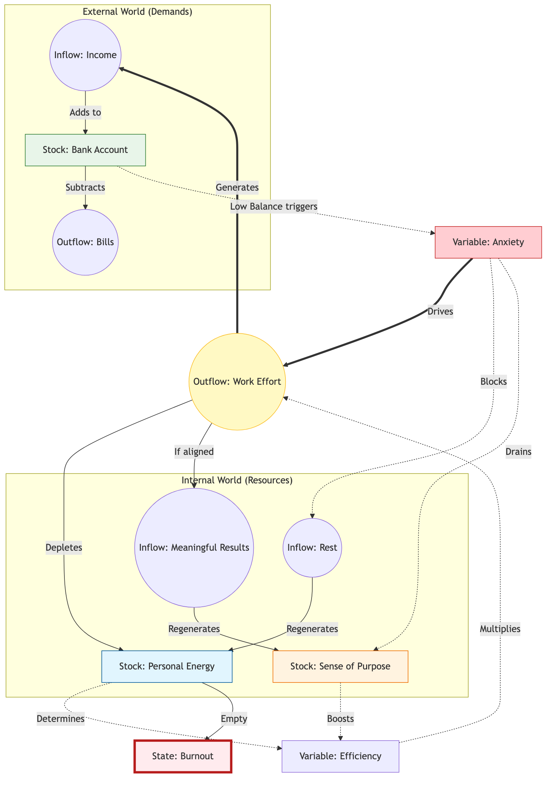

Version 55 | January 2026
Why the world feels like it's vibrating at a higher frequency.
I’ve always been obsessed with how things work.
I'm not an economist or a scientist. I’m a builder. I’ve spent my life creating games and products for others to play. Creating systems and experiences for people to try. I view the role of entertainment as a way to invite people to experience what they wouldn't otherwise. To live lives that are not theirs, and to feel and learn from moments they wouldn't normally have.
In the case of games and digital products, we are not just creating a passive medium, but something the user actively interacts with. This means we need to craft a system that invites the player to perform a behavior, and rewards them with an emotion by design.
As we craft these systems, we slowly learn how behavior repeats. We see patterns emerging in places that shouldn't have anything in common.
I've started seeing these behaviors, these systemic consequences, everywhere. From how the news ecosystem evolved, to which YouTubers grew, to politics, or even to the pandemic. The way I see how all these unrelated topics changed over time, combined with my studies in machine learning and AI simulations, led me to see one underlying rule in all of them.
I call this The Pattern.
This book isn't a textbook or a grand academic theory. It’s a pair of glasses. I want to share a lens that helped me make sense of why the world feels so loud, so fast, and so extreme right now.
The pattern is not an underlying force that makes all those systems do what they do. It is closer to a mathematical view into all of these, and a lens of its consequences. It does not explain how or why something optimized as it did, but it explains why when we have individual actions, individuals or attempts, filtered by some goal or external force, optimization will occur, and with it some common patterns.
To explain and show this theory to you, I will have to use simplified models and examples for dozens of different topics, from biological evolution, sociology, and politics, to simplified career archetypes and more. This book is not meant to be the truth of everything, and through these examples I will try to be neutral and explain them as they are, trying to remove value judgments. I'm not an expert in most of those, so please focus on the message of the pattern more than the example at hand.
You should also know where I am standing. I am writing this from my own specific vantage point: that of a Brazilian computer engineer and game designer. You will find many examples drawn from the tech industry, video games, and the complex socio-economic reality of Brazil.
However, this book is not about Brazil, and it is not about computers. These are simply the raw materials I have to hand. The patterns themselves are universal. Whether you are a teacher in Tokyo, a farmer in Kansas, or an artist in Berlin, the underlying mechanics of incentives and selection apply to you just as much as they apply to a startup founder in São Paulo.
Finally, a word on politics. In an era of extreme polarization, it is impossible to write about systems without touching on political nerves. I have tried my best to remain an observer rather than a participant. I find myself often frustrated by the dogmas of both the political Left and Right, and I have no interest in scoring points for either team.
That said, true neutrality is a myth. My own biases will inevitably bleed through in the examples I choose and the framing I use. I ask you to look past them. Do not focus on whether you agree with my specific example of a tax policy or a social program. Focus on the mechanism I am describing. Focus on the Pattern.
I want to give you some theory as to how this system works, and some tools to dive deeper.
I've been seeing so much discussion, and so much hatred over the news, and over so many different topics, that I hope that, after reading this book, you can avoid being caught in the river, in the algorithm, this force that shapes us, and use this foundation to see your own field with a new perspective.
At least that is my hope. Now it's up to you.
I remember when the news was boring.
If you’re old enough, you might remember a scandal about a politician's affair or a debate about tax rates. It felt... manageable. The world had its problems, of course, but they felt like they were happening at a human scale. You could turn off the TV, walk outside, and the noise would stop.
But today, somewhere along the way, the silence disappeared.
It feels like someone turned the volume knob on the world from a 4 to an 11, and then broke the knob off.
I feel it, and I know you feel it too. It’s a specific kind of exhaustion.
By 2010, the headlines started getting a bit louder. We had the Great Recession, the sudden rise of social media, and a feeling that things were moving faster than we could process.
By 2020, the volume was at a deafening roar. A global pandemic, trillion-dollar companies, and political divisions that felt less like "disagreements" and more like "civil wars."
It’s easy to look at this chaos and think the world is breaking. That things are falling apart. Politics doesn't just feel like a disagreement anymore; it feels like a war where the soldiers are your neighbors. Wealth doesn't just feel unequal; it feels impossible, with numbers so large they stop making sense. Our attention spans have been shattered into 15-second clips, and we sit there, scrolling, feeling both overstimulated and numb at the same time.
But I am an optimist by nature. I spend my life building systems, designing games, and creating products, and when I look at this chaos, I don't see a broken machine. I see a machine that is working too well.
When we feel this pressure, our first instinct is to look for a villain. We want to blame "evil" politicians, "greedy" CEOs, or "unethical" algorithms. We want to believe that if we just removed the "bad people," the system would go back to being "good." We want to ban the players who are ruining the game.
But as you look closer, you start to notice something unsettling. The specific "bad people" change, but the outcomes stay the same. You vote out the politician, but the polarization gets worse. You boycott the company, but the wealth gap grows. You delete the app, but your attention still feels fractured.
It’s as if there is a ghost in the machine, something pushing everything toward the extreme, regardless of who is in charge.
This is where my obsession with systems comes in. When you spend your life balancing games and products, you realize that most "bad behavior" isn't caused by bad people. It’s caused by incentives.
Look at YouTube. We say the algorithm is "radicalizing" us. But the code doesn't have a political agenda. It doesn't have a soul. It only has a goal: Watch Time. It is a machine that has been told to learn, by trial and error, what keeps you staring at the screen for one more second. If it learns that a calm, nuanced discussion makes you tune out, but a screaming fight makes you watch, it will show you the fight. Not because it wants to hurt you, but because it is a perfect student of your own psychology.
The market is the same. It isn't "trying" to starve anyone; it is simply a massive engine optimizing for efficiency. It is doing exactly what we encoded in its rules: find the most efficient way to allocate capital.
We are living in systems that are optimizing themselves into extremism.
This is the Pattern. It is not a conspiracy, and it is not chaos. It is the mathematical inevitability of what happens when you tell a system to optimize for a single metric and give it enough time to learn.
In this book, I want to hand you this lens. I want to show you the code behind the chaos. Because once you stop hating the players and start understanding the game, you can finally see the path to changing it.
When you picture a "Salesman," you likely see a specific archetype. Maybe a real estate agent, or a used car dealer.
Chances are, you’re picturing someone charming. Someone with a firm handshake, a quick smile, and a way with words. Someone who can talk to anyone about anything.
Why?
Is there a secret "University of Sales" that teaches everyone to be exactly the same?
Actually... yes. There are thousands of them. There are seminars, books, courses, and mentors all teaching the exact same techniques: "Mirror the client's body language," "Ask open-ended questions," "Always be closing."
So, is that the answer? Salesmen are charming because they were taught to be charming?
It seems obvious. But ask yourself: Who wrote the books?
Who decided that "Charisma" was the curriculum? Why don't the books teach us to be silent, or to look at the floor, or to argue with the customer?
The books weren't written by a central committee. They were written by the survivors.
Imagine the thousands of people who tried to sell something for the first time.
Most of them failed. Some tried to force the sale and got rejected. Some were too timid and never closed. Some tried to be overly logical, boring the customer to death.
But a few stumbled upon something that worked.
Maybe one realized that asking questions made the customer feel valued. Another noticed that smiling, even when they didn't feel like it, disarmed the customer's defenses.
These winners didn't just make a sale; they survived to sell another day. They kept their jobs. They fed their families. And, crucially, they taught their apprentices.
"Don't frown," they’d say. "Smile. Trust me, it works."
This is Agency in action. The salesperson is making choices, learning from immediate feedback, and adapting their behavior. Humans are intelligent problem solvers, and we are constantly A/B testing our way through life.
But notice the accumulation.
Over decades, millions of salespeople ran millions of intuitive experiments. The bad strategies, insulting the client, staring at the floor, over-explaining the product, acted as a filter. The people who used them left the profession. Their "knowledge" died with their careers.
The strategies that worked were kept. They were codified. They were written down in books like How to Win Friends and Influence People.
Every new experiment, a new learning. A new book written, a new course made. New salespeople then picked up and learned from those, and then tried their own variations, their own takes on the teachings.
The "University of Sales" is not an invention of some genius dean; it is an archive. It is a collection of all the successful experiments run by millions of people over hundreds of years.
The reason every salesperson looks the same isn't just because they read the same book. It's because the book is a record of what survived the Filter.
The environment (the customer with the money) is the Judge.
If customers loved rude, aggressive arguments, then the "Best Sales Course in the World" would teach you how to scream insults. The "Charming Salesman" would go extinct, and the "Angry Salesman" would be the archetype we all recognize.
We think we are learning skills, but really, we are downloading the patch notes of previous generations. We are standing on a mountain of failed experiments, using only the tools that survived.
It's important to notice that each salesman just wanted to survive, to profit. And as they learned, succeeded and failed, this knowledge was passed through generations. It was not something intentional, but this behavior was selected. This behavior was optimized.
This explains why the world feels the way it does. It explains why every modern movie trailer looks the same. It explains why every smartphone looks like a rectangular sheet of glass.
Every process, with agency or without, with consciousness or without, just by selection and accumulation, over time, becomes optimized and fitted for what is being truly evaluated.
This is the Pattern.
First I will try to prove to you this process happens everywhere. Then we will look into the effects of the selection and accumulation themselves, and by the end of the book, we will discuss how to use this knowledge to change how things are evolving.
Shall we begin?
The mechanics of iteration and variance that drive all change.
What is this pattern I keep talking about? What does it look like? What constitutes the pattern and what doesn't, and how does it work?
As mentioned in the salesman example, we need some form of action and feedback, a filter, and time. Is that all?
Let's check each element on its own to understand the mechanisms at play, and come up with a proper definition.
To train a dog, you might say "Sit." The dog looks at you. It barks. It jumps. It spins. It has no idea what you want, it is just doing random actions, pressing random buttons on the controller.
Eventually, by random chance, the dog’s butt hits the floor. You immediately give it a cookie.
That moment, the cookie, is the signal. Without it, the dog is just moving randomly. With the cookie, its brain locks onto the last thing it did: "Sitting equals cookie."
Of course it won't learn to sit with just one cookie, but next time, the dog is more likely to sit. Give it enough times, and it will learn to sit on command.
If you never gave the cookie, the dog would never learn. Without the feedback, there is no learning, just guessing. This is the importance of the feedback. An action must result in a feedback, be it positive or negative, it is needed.
Each action and feedback pair will result in an Iteration. This is the fundamental building block of the Pattern. An action without feedback cannot be considered an iteration, as there is no learning or optimization happening.
How direct this feedback is, how fast and clear, will affect the learning speed, but in the end what is needed is a pair of action and feedback.
It's important to note that this is the key of why the pattern is everywhere. As we all heard from the law of physics, every action has a reaction, which means that probably every action will have a feedback. Just keep in mind that the feedback might not be on what you think it is.
The dog acts, the environment (you) provides feedback and some learning occurs. We repeat the request, wait for the action, and provide the reward. This loop of Iterations is the process which all things go through. It's how learning or adaptation happen.
Let's think of chess. You're learning to play. You move your knight forward. Your opponent takes it with a pawn you didn't see. You lose the piece. That loss is your feedback. Your brain thinks: "Don't leave pieces undefended."
Next game, you protect your knight. But this time you try something different. You Castle early. Now you lose because you castled too early into an attack. More feedback.
Every loss is a lesson, an Iteration. But if every game you moved your knight the same way, most of the time you would get the same result. And this is the catch: To learn, your next game must be different. With a similar action, you should be receiving a similar reaction.
If you have 1,000,000 Iterations but Zero Variance, if you play the exact same opening moves every time, the result is Zero Adaptation. You are just a broken record. You will keep losing the same way forever.
You need to try something different. A new opening. A more aggressive style. A defensive trap. Most of these variations will fail. You'll lose your queen. You'll get checkmated in ten moves. But each failure is data.
Eventually, one variation will work. You'll find a pattern your opponent can't answer. Your brain registers the win, not as the only feedback, but as feedback that says "this direction is working." The losses told you where NOT to go. The win tells you where to go.
In machine learning, we often run into a problem where an AI gets "stuck." It finds a strategy that is okay (like running into a wall to avoid getting shot in a video game) and it keeps doing it forever. It stops learning because it stopped trying new things. It found one solution to the problem, but not the best, and keeps doing this forever.
To fix this, we have to artificially inject "noise." We force the AI (Artificial Intelligence) to try random, dumb moves. We force it to have Variance. Giving variance for its attempts, with enough iteration (action + feedback), it will learn to behave as expected. (We will deep dive into machine learning in chapter 10, as it is one of the clearest forms to see the pattern in action).
Let's imagine a monkey in front of a typewriter, typing letters for an infinite amount of time. Infinite time means that it will write down all the infinite combinations of letters. If it has all infinite combinations, somewhere around the random "gibberish," we will have the complete works of Shakespeare.
This is the Infinite Monkey Theorem, a fun theorem, but not of much use, as it would take literally infinite time. But just add a small selection, and the time is drastically reduced.
Imagine that every time the monkey types a correct letter, that letter "locks" into place. The monkey types "Q". Nothing happens. The monkey types "T". Click. The "T" is locked. The monkey types "O". Click. The "O" is locked.
Suddenly, you don't need billions of years. You might get "To be or not to be" in a few weeks. It is like brute-forcing a password, but with the system telling you when you get each character right.
With this filter, this Selection, we are able to make the monkey write down Shakespeare, or Aristotle, or any other book. The Selection gave direction to the randomness, and defined the end result.
If you think of a Feedback, it always evaluates the action on something. Winning and losing might be feedbacks to make you better at something. Getting something right or wrong in a test might make you remember things better. Surviving/dying might select your genes. Sharing/non-sharing might define which posts you see.
This is how most things work. Random things happen, they get filtered, new random things happen mutating from the last batch, they get filtered again and again.
This is The Pattern. We can visualize it as a mathematical code that drives the world:
It is the mechanism that allows a simple set of rules to create incredible complexity. You generate options with Iteration and Variance, the Filter (The Environment) chooses the winners.
This looping, over Time, dictates Adaptation. It can be really slow, over centuries, or really fast.
Let's dive deeper.
In the last chapter, we saw the dog. Action: Sit. Feedback: Cookie. Result: The behavior is locked.
This simple loop of Iteration and Selection is the engine of all adaptation. This is the most intimate version of this mechanism, and it is running inside your head right now.
We usually call it "learning." But I want you to see it as Intentional Iteration.
We tend to think of learning as "adding" information. A teacher pours knowledge into your head like water into a bucket, and you get smarter. But that is not how the Pattern works.
The Pattern works by Selection. And learning is no different. You aren't adding; you are keeping what works and deleting what doesn't.
Watch a baby learn to walk. It isn't reading a manual. It acts.
They lean left and fall. Pain. They lean right and fall. Pain. They lean forward slightly and take a step. Success. They repeat.
The brain is a relentless editor. It doesn't "know" how to walk; it discovers how to walk by pruning away every movement that leads to a fall.
This effectively means that your muscle memory is just a graveyard of millions of failed micro-movements, leaving only the ones that work.
Action + Feedback = Learning
Everything we mastered, from walking to speaking to coding, was built on this mountain of errors. Most of this happens subconsciously. The baby doesn't "decide" to lean right, the brain just selects the outcome that didn't hurt.
But as adults, we often try to take the wheel. We try to be clever.
When a tennis player chooses to try a different grip, they are doing the exact same process as the baby, but manually. They are intentionally injecting something new—a "mutated" swing—to see if it yields a better result. They are feeding the editor new material to work with.
If you don't provide the variance—if you just do the exact same thing every time—the editor has nothing to select from. The learning stops. You become the broken record.
This explains why the "10,000 Hour Rule", the idea that you just need to put in the time to become world-class, is dangerous tailored advice.
It has become a pop-culture mantra: "Just put in the reps." But the Pattern tells us that repetition without feedback is just noise.
A taxi driver might spend 30,000 hours behind the wheel and never become a Formula 1 driver. A recreational chess player might play for forty years and never reach master level. Why?
Because the feedback loop is loose.
When a taxi driver takes a corner a little too slow, nothing happens. No buzzer sounds. No score drops. The environment is too forgiving. The "Selection" pressure is near zero. So the brain doesn't update the code. It just repeats the same mediocre turn, over and over again.
Real improvement requires what psychologists call Deliberate Practice. But you can just call it Tight Loops.
A musician recording themselves and listening back. A surgeon getting instant critique from a mentor. A chess player checking their moves against an engine. In these scenarios, the "Action" is immediately followed by "Selection." The error is highlighted. The brain is forced to edit.
Without that strict feedback, you aren't learning. You are just reinforcing your existing habits. You are calcifying.
Once you understand that learning is just a mechanical loop of Action and Feedback, you realize why some things are easy to learn and others are impossible.
It depends on the quality of the loop.
To learn well, you need a safe environment, a clear goal, and tight feedback.
This is why Video Games are the gold standard of learning engines. In a well-designed game, the clarity is absolute. You jump. You miss. You die. You respawn (Try again). Total time: 4 seconds.
Your brain gets a clear signal: "That distance was too short." It adjusts. You jump again.
Crucially, the cost of failure is zero. You just respawn. Because it is safe to fail, you are willing to have high variance. You try crazy jumps. You experiment.
Now compare this to the Stock Market. You buy a stock today. Did you make a good decision? Maybe. Maybe not. You might not know for five years.
By the time you get the feedback (Profit or Loss), you have forgotten why you made the trade. Was it the P/E ratio? Was it the CEO? Was it just luck? And even the feedback reason is muddled. Your profit was because you bought during a recession? Was due to market? Or the company improved? The feedback loop is broken. The "Learning" is reduced.
This is why a teenager can master Fortnite in a weekend, while a 50-year-old day trader can lose money for a decade without getting much better. One has a tight, clear, safe loop. The other has a loose, noisy, dangerous one.
Education is also an attempt to hack this loop. If a school only had one big exam at the end of the year, the feedback would be too slow to be useful. Homework, quizzes, and projects are not "extra work", but artificial feedback loops designed to let you fail early and often, while the "cost" of failure is low.
How the loop is organized shapes its effectiveness. Be it by design or not. And this is the key part we need to understand. This learning/adaptation will happen by intention or not.
The examples I've given so far: training a dog, practicing tennis, studying for an exam—are all about intentional learning. We used our brains to guide the process. But what happens when there is no brain involved? Does the Pattern still work if you take away the intelligence?
Let's look at nature.
For centuries, humans thought evolution had some intent behind it. We thought that a species wanted/tried to evolve in a certain way, and therefore passed those traits to their children.
But this is not the truth. Evolution does not happen by intent, but by selection. Just as learning follows the pattern, evolution or adaptation follows the same rules.
Let's take a look at the giraffe.
It looks like a masterpiece of engineering. It has a neck perfectly suited to reach the high leaves of the acacia tree, a heart powerful enough to pump blood up that long vertical climb, and a tongue tough enough to wrap around thorns. It looks like an engineer sat down, measured the tree, and built a machine to reach it.
But there was no engineer. It was an accident. Or rather, millions of accidents.
For a long time, we had a very intuitive, but wrong, idea of how this happened. We thought giraffes got long necks because they tried really hard. A short-necked giraffe would stretch and stretch to reach the leaves, and its neck would get a little longer. Then it would have a baby, and that baby would inherit that slightly longer neck.
This feels right to us because it’s how we learn. If I practice the piano, I get better. But biology is colder than that. It doesn't care about your effort. If you spend your whole life lifting weights, your baby isn't born with huge muscles.
The reality of the giraffe is much more brutal. It wasn't about "trying"; it was about "dying."
Consider a population of ancient, short-necked giraffes. Because of random genetic mutations, or Variance, some were born with necks that were just an inch longer than the others. Then came the Environment. The trees were tall. The food was high up.
The giraffes with the shortest necks couldn't reach the food. They didn't "learn" to be taller; they simply starved. They felt the hunger, they grew weak, and they died before they could have babies. The ones with the slightly longer necks ate, survived, and passed those "long neck" genes to the next generation.
Repeat this loop, this Iteration, for a million years. The "design" of the giraffe didn't come from the giraffe’s desire to reach the leaves. It came from the systematic deletion of everything that wasn't that giraffe. The tree didn't "teach" the giraffe to be tall. The tree "selected" the tall giraffes by killing the short ones.
Biologist Richard Dawkins famously reframed this in The Selfish Gene. He pointed out that the giraffe is just a survival machine—a vehicle built by the genes to ensure their own propagation. The genes provide the variance (the slightly longer neck blueprint), and the environment does the selection. The code that works gets copied; the code that fails is deleted.
This mechanism isn't limited to animals. You don't even need a complex creature to see it happen.
The virus is just a simple shell with genetic code in it. It follows the same rule, but while the giraffe takes a million years to update its code, the virus does it in an afternoon.
During the COVID-19 pandemic, we had the best scientists in the world, global lockdowns, and eventually, cutting-edge vaccines. We were using our collective human intelligence to fight a microscopic strand of RNA.
And yet, the virus kept winning.
It wasn't because the virus was "smarter" than us. It was because the virus was faster. While we were debating policy, running clinical trials, and shipping masks (processes that take weeks or months), the virus was replicating billions of times per hour. It was evolution on fast-forward.
What is it optimizing for? Spreading.
The virus isn't trying to kill you. In fact, a virus that kills you instantly is a failure; if you die before you cough on anyone, the virus dies with you. The strains that keep you alive, mobile, and coughing get selected in. The scoreboard rewards contagion, not lethality.
When we introduced vaccines, we changed the environment. We built a wall. But the virus didn't stop. It just kept throwing random copies of itself at the wall. Most failed. They were dead ends. But when you try a billion random keys, eventually, one of them is going to fit the lock.
That’s how we got Delta. That’s how we got Omicron. The virus didn't "plan" a strategy to bypass the vaccines. It simply threw enough random variance at the problem until one stuck.
It didn't outsmart us; it out-iterated us.
The giraffe and the virus are the same story, just playing at different frame rates. One is an epic movie; the other is a TikTok on loop. But the mechanism is identical. If you iterate, and there is a filter, you will optimize.
This is Optimization without Intent, or in the world of biology, Natural Selection.
In the last chapter, we looked at the virus hitting a wall. The wall (our vaccines) was effective, but from the virus's perspective, it was just a static obstacle to overcome.
We often think of adaptation like this. We imagine the environment as a fixed puzzle we are trying to solve. The mountain doesn't move while you climb it. The finish line doesn't run away.
But in the real world, the environment is rarely that passive. The environment is usually made of other players who are also trying to win.
So depending on how you react to the environment, the environment changes with you. The same action might not deliver the same feedback over time.
Consider the cheetah and the gazelle.
In a population of both, you have some that are slightly faster and some that are slightly slower. The fastest cheetahs catch the gazelles and eat. The slowest cheetahs miss their prey, starve, and die. The slowest gazelles are caught and eaten. The fastest gazelles escape, survive, and have babies.
The result is that the next generation of cheetahs is faster because they are the children of the winners. But the next generation of gazelles is also faster for the same reason.
But wait, there is a hidden cost here.
When the first cheetah started optimizing for speed, it was just one of many possible strategies. It could have evolved to be stealthy like a leopard, or strong like a lion, or cooperative like a wolf. But once the "Speed" path was chosen, the door to those other strategies began to close.
As the cheetah became faster, its body changed. It lost muscle mass to become lighter. Its claws became non-retractable for traction. It became a specialized machine. Now, millions of years later, even if "Stealth" were a better strategy, the cheetah cannot switch. It is locked in. It has climbed a specific hill (Speed) and cannot go back down to climb another one.
This is where the trap closes. The "fast" cheetah from the previous generation (the one that was a top-tier predator yesterday) is suddenly the "slow" cheetah of the new generation. Because the gazelles have also improved, the cheetah’s relative advantage has vanished. The standard has shifted.
Both populations are now running at 60 miles per hour, burning massive amounts of energy, their hearts pounding, their muscles screaming. But neither is "safer" or "more successful" than their ancestors were. They are both running as fast as they can just to maintain the status quo.
In the novel The Leopard, there is a line that captures this perfectly: "If we want things to stay as they are, things will have to change."
In an arms race, "staying the same" is not an option. If you stay the same, you fall behind, because everyone else is moving.
This phenomenon where two sides iterate furiously just to maintain the status quo has a name. It is called the Red Queen Effect.
It is named after the character in Alice in Wonderland who said: "Now, here, you see, it takes all the running you can do, to keep in the same place."
We see this cat-and-mouse game everywhere.
Consider the eternal dance between Cops and Robbers. In medieval times, a simple locked door was enough to stop most thieves. Then someone invented the lockpick. So locksmiths made better locks. So thieves made better picks. Today, high-security vaults use biometrics, reinforced steel, and 24-hour surveillance, and sophisticated criminals use social engineering, insider access, and cyber attacks. The complexity on both sides has exploded, but neither side has "won." They are both running harder than ever just to stay in the same relative position.
The same pattern drives cybersecurity. Every new antivirus creates pressure for more sophisticated malware. Every new firewall creates pressure for more creative hacking techniques. Every new law creates pressure for more inventive loopholes. The players change, the technology changes, but the arms race never ends.
In agriculture, farmers discovered this with pesticides. A new poison kills 99% of the insects, but the 1% that survive pass their resistance to the next generation. Stronger poison, stronger bugs. This is the "Pesticide Treadmill."
This is the third type of the pattern: Competitive Iteration.
In an arms race, the environment isn't a wall. The environment is you. And for you, the environment is them.
Iteration is no longer a solo performance. It is a duet. Every "improvement" you make forces your rival to change. You aren't just solving a problem; you are creating a new problem for someone else. And they will specifically iterate to solve you.
In Chapter 5, we discussed Richard Dawkins' concept of the "Selfish Gene"—the idea that a giraffe is just a survival vehicle built by genetic code.
But Dawkins didn't stop at biology. In 1976, he asked a radical question: Does this mechanism require DNA? Or is DNA just one type of hardware that runs the software of evolution?
He proposed that the mechanism of selection that happens in genetics also happens with ideas. If a gene is using the bodies of its hosts as vehicles, an idea uses the minds. An idea, a concept that is thought through generations, that is shared through social media, is the new unit of replication, the Meme.
In the biological world, the Gene builds a Body to survive. The body is the vehicle. It walks, eats, and protects the cargo (the DNA) until it can replicate.
In the world of ideas, the Meme uses the Mind as its vehicle.
If I tell you a story, and you remember it, that story has successfully boarded the vehicle. It is now living in your neural pathways. As you tell this story to other people, the idea lives, it spreads. A person can be a vehicle, a book, a TikTok post, all of them are sharing an idea.
This idea, this concept that crosses ages and societies, that is the meme.
This can feel abstract. How can an "idea" be real in the same way a gene is?
Think of a wave in the ocean. Look at a wave moving toward the shore. It looks like an object. It has a shape. It has height. It has power. But the water isn't actually moving forward (Not all of it). The water molecules are mostly just going up and down. What is moving forward is the energy of the wave, that crashes into the water molecules next to it, transmitting the energy to the next host. The "Wave" is not the matter; it is energy moving through matter.
Sound and radio waves are the same. They are energy moving from atom to atom, not the atoms themselves moving.
Think of a Newton's Cradle, those desk toys with five silver balls hanging on strings. You pull the first ball back and let it drop. Click. The ball hits the line, and stops. It doesn't travel through the line. But the energy does. It shoots through the three middle balls—which barely move—and kicks the last ball out on the other side. Clack.
The energy traveled. The matter stayed put. If this example was hard to visualize, I invite you to search the web for this toy and see what I mean.
This energy transmission is the perfect mental model for us. The silver balls are the vehicles. Matter is the vehicle for sound to transmit frequency. Bodies are vehicles for genes to transmit through generations. Minds are vehicles for memes to transmit through the ages.
This is Memetics. Society is the water. The Idea is the wave.
When a wave of "Nationalism" or "Disco" or "Environmentalism" sweeps through a country, it changes how people move, dress, and speak. The people are the medium; the idea is the force.
Just like animals evolved different strategies to survive (the Cheetah uses speed, the Turtle uses armor), ideas evolve different strategies to replicate.
1. Contagion (The Catchy Tune) Some ideas replicate because they are low-friction and high-stickiness. A pop song intro. A gossip story. A joke. These often rely on high-arousal emotions. As we hinted in previous chapters, an idea that makes you angry or excited travels faster than one that makes you calm. This is where "Fake News" or "Clickbait" finds its niche. It is optimizing purely for speed of transmission.
2. Symbiosis (The Useful Tool) But not all viruses are bad. Some ideas survive because they help the host. Consider the idea of "Making Fire." Or "Excel Spreadsheets." Or "Democracy." These memes didn't spread just because they were catchy. They spread because the people who adopted them became more successful. Take the culture of Investing. In many countries, like Brazil, the concept of individual investing was rare for a long time. It was a dormant meme. But as economic stability returned, the meme found a fertile environment. People who adopted the "investing" behavior got richer. Their success became a signal to others. "Look at him, he is doing well. I will copy his behavior." The meme spread through Utility. It paid rent to the host.
3. The Spore (The Artifact) Sometimes, an idea needs a hard shell to survive the winter. This book you are holding is a spore. It is a physical container for a set of memes I have collected and mutated in my own mind. By writing them down, I am trying to give them a dormant form that can travel without me. If you read this chapter and forget it, the spore failed. But if you read this chapter, and tomorrow you look at a billboard or a tweet and think, "That is just a meme trying to replicate," then the spore has landed. The virus has unpacked itself.
The engine has successfully iterated one more time.
A giraffe evolves on the savannah. A virus replicates in a host. A tennis player swings the racket. A meme spreads across Twitter.
Hopefully, I've convinced you to see these seemingly unrelated topics through the same lens. The specifics of how they work each might be different, but the mechanics of the system, is similar. They all adapt and evolve under the same pattern.
To drive the point home, I would to show that this is Scale Independent. Given enough iterations, with variance, over a filter, adaption occurs, and with it, the pattern repeats.
It doesn't just work on the Micro scale (Genes) or the Human scale (Memes). It works on the Macro scale (Civilizations).
The pattern appears in many flavour for companies, but a simple one could be about money and survival. Think of money as Calories. It the company runs out, it will starve. Therefore, a company, in the end is being filtered by profit.
Profit isn't the goal of the company (It can be the goal, but necessarely), just as food is not the goal of a lion. Profit is the energy required to play the next round of the game.
Of course there are other factors that define which companies survive, and some exceptions that even allow companies to exist without profit (we will see some examples on Part IV), but in general, no money means no company.
Companies will sell their products and services, they will cut costs, they will organize themselves in different patterns.
In this optics, the Market is the environment. The company, the vehicle in which different products act as the genes, or different comporate structure as the memes.
In the early 20th century, the environment selected for raw efficiency. The "winning mutation" was Fordism. Mass production. Consistency. Scale. This meme spread across the world because it worked. It helped companies survive.
But the environment is dynamic (Red Queen). It shifted. Efficiency wasn't enough; you needed speed. So we saw the rise of "Lean Startup" methodologies. These weren't just management fads. They were adaptations to a high-speed environment.
Today, the bottleneck has shifted again. The new bottleneck is Attention.
The environment now aggressively selects for companies that are good at storytelling. A mediocre product with brilliant distribution often beats a superior product with no audience. The "Marketing-First" company is becoming the dominant species. Not because it is "better" morally. But because it fits the current shape of the Pattern.
You have millions of companies, trying different strategies (Variance) with different grades of success (Feedback), inspiring the next companies (Iterations). This means over time the companies adapt.
The same logic was applied for prices in products. Some sell, others don't. Following offer and demand, with enough iterations the prices converge, they adapt.
But let's zoom out even more, and look at Nations.
Why are some countries rich and stable, while others are poor and chaotic? Is it geography? Culture? Weather?
In Why Nations Fail, Daron Acemoglu and James Robinson propose a different answer: Institutions.
I am simplifying a comprehensive argument to fit into a few paragraphs. If you want to understand the deep mechanics in depth, read their book. But for our purposes, their insight provides a great example of the Pattern at scale.
They divide institutions into two types: Inclusive and Extractive.
Inclusive Institutions (property rights, fair courts, free markets) act as High-Variance Regulators. They lower the cost of experimentation. If I have an idea for a business, and I know the law will protect my invention, I am willing to take the risk. I am willing to provide Variance.
When a nation protects the rights of the many, it turns itself into a massive distributed computer. It allows millions of citizens to run their own "Adaptation Equations" simultaneously. It doesn't mean the decisions are always right—democracies make terrible mistakes constantly—but it means the system searches the solution space much faster.
Extractive Institutions (dictatorships, colonial monopolies) are Low-Variance Regulators. They are designed to suppress variation to maintain stability.
If a King can seize your farm whenever he wants, the "Feedback Loop" is broken. Why invest in a better tractor? Why innovate? The reward for your successful variance might be theft or imprisonment. So people stop trying. The system stagnates.
In Why Nations Fail, the authors describe how elites often block new technologies (like the printing press) because they fear "Creative Destruction." This is a rational calculation. They know that new ideas shift power. So they actively suppress Iteration to maintain Control.
It is not that "Democracy is good" and "Dictatorship is bad" (though I believe that is true). It is that one system is a Learning Machine and the other is a Control Machine.
A dictatorship is a nation trying to evolve using only one brain, while an inclusive nation evolves with millions. Over the long run, the system that processes more variance always wins.
The book has several nuances for how and why those happen, appear or die, so again, I highly recommend the reading. But the system os inclusive well established institutions in the even is the one that enables more iteration with higher variance, therefore enabling adaptation for what filters nations, that in the end is prosperity and the life of it's citizens.
A fractal is a type of mathematical shape where independent of zoom in or zoom out, you may see a pattern that repeats forever. Doesn't matter the part of the fractal you zoom in or out, you will the the same pattern again, and again.
And we can see the invisible pattern at all scales. From the gene, to the meme, from institutions, to products prices, from individual mastery to generational science.
The pattern does not define how these systems work, but because they do, and have Iteration and Variance over Time, they follow the pattern. It is a consequence, a path to how things adapt.
The pattern doesn't matter where the variance comes from: * It can be Blind (a random mutation in a giraffe). * It can be Abstract (a mutation in a story told at a bar). * It can be Intentional (an entrepreneur testing a new market).
The Pattern doesn't care. As long as there is Variance coupled with a ton of Iteration, the system will move. It will adapt.
Individuals might be running in circles, trying random things, failing, succeeding. But the aggregate result is not random. It is directional.
The engine is universal. The runners change, but the track remains the same.
One of the key skills we need to have is the ability to spot the pattern, and break down its components to change its speed.
The direction the pattern is leaning towards will be discussed in the next part of the book, but knowing when and where the pattern applies is essential.
The first mistake we tend to make is thinking something is optimizing for a metric, but it is for the other. The first thing we need to diagnose is the Iteration quality. What are the actions being made? At which speed and variance? What is the feedback? Is that the true feedback that matters? Does this feedback actually filter something?
Spot and write down the answer to these questions to identify the pattern. Now, to evaluate the speed in which adaptation will happen, you need to check these levers:
In Chapter 6, we saw the insects beat the farmers because they bought more lottery tickets.
Why are the insects so fast? Because they iterate in parallel. A single insect can lay thousands of eggs. Each egg is a roll of the dice. If only one in ten thousand has the mutation for resistance, that's still hundreds of survivors. An elephant, by contrast, bets everything on a single calf every few years. It runs in serial.
The insect swarm is a million parallel experiments. The elephant is one long, careful plan. The more iterations you can run per unit of time, the faster you adapt.
The Photographer: An amateur spends five minutes framing one perfect shot. The professional takes fifty shots in the same five minutes, moving strictly by instinct, knowing that forty-nine will be trash but one might be a masterpiece. The professional uses volume to capture luck.
The Diagnostic Panel: Imagine a patient with a mysterious illness. A sequential doctor might guess it is Malaria, order a test, and wait two days. Negative. Then he guesses Dengue, orders a test, and waits two days. Negative. A parallel doctor draws one vial of blood and runs a full panel, testing for fifty different markers simultaneously. The cost is the same—one needle prick—but the volume of information is massive. She finds the answer in hours, not weeks. She used parallelism to beat the time.
Structure your work to allow for volume. Don't be the amateur waiting for the perfect moment. Be the swarm.
Taking a million shots doesn't help if you take the exact same shot every time. You need Variance. But Variance is scary. In the wild, a "wrong" mutation means death. In a corporation, a "wrong" project means getting fired. So, naturally, we minimize it. We play it safe. We stop iterating.
As we discussed, the pattern needs variance to get different results and therefore adapt. Then, the more variance the faster we will adapt. But it's really easy for this lever to be extinguished, as things optimize they tend to lock in.
To tune this lever, you don't just "try crazy things." You lower the cost of failure. You create a safety net so that the variance is cheap. If the cost of checking a new path is high (e.g., "If I fail, I lose my job"), you will walk the beaten path forever.
The Comedian's Notebook: A top-tier comedian doesn't write a Netflix special in one go. They go to small, divey clubs on Tuesday nights. They try 10 new jokes. 9 fall silent (High Variance). 1 gets a laugh. They keep the 1. The club is a "Safe Environment." If they bombed on HBO, their career would end. In the club, the cost of error is just an awkward silence. They bought safety to purchase variance.
The Dating Loop: We often blame "bad luck" for our relationships, but often we are just running a low-variance algorithm. We date the same "type" of person, meet them in the same places, and act the same way. We maximize safety by sticking to what we know. But if you input the same variables, the engine will give you a similar result. If you didn't enjoy your past relationships, repeating the pattern might not be a good idea. To get a different ending, you have to change the approach. You have to risk the discomfort of dating someone who isn't your "type" or looking in a place you'd normally ignore.
If your team or your life is stagnant, ask: "Is it too expensive to be wrong?" Am I trying the same thing all the time? If the punishment for a mistake is execution, you will only get obedience. You will never get adaptation. If you make the same action all the time, expect to get a similar result.
This is the time delay between your Action and the Consequence.
Think of the difference between touching a hot stove and smoking a cigarette. The stove gives instant feedback. You learn immediately. The cigarette gives feedback (cancer) twenty years later. The brain cannot close the loop.
This is Latency.
The problem with Latency isn't just that it is slow (we discussed speed in Lever 1). The problem is that it breaks the link between Cause and Effect.
If you eat a berry and vomit five minutes later, your brain learns: "Berry = Bad." If you eat a berry and get sick two weeks later, your brain learns nothing. You might blame the water, the weather, or bad luck. The signal arrived, but it arrived too late to be assigned to the source.
The Bridge Paradox: An engineer skips maintenance to save money. The bridge stands. The immediate feedback is "Efficiency." Ten years later, the bridge collapses. The feedback is "Disaster." But because the delay was so long, the system doesn't learn. The original decision-maker is gone. The collapse is blamed on "random misfortune" or the current administration. Delayed feedback allows bad systems to persist because the penalty never arrives in time to correct the behavior.
To fix this, you don't just speed up work; you speed up the signal. Don't wait for the bridge to fall. Install sensors that detect stress today. Don't wait for the annual review to correct an employee. Give feedback in the moment. You need to bring the consequence closer to the action.
There is a final condition. Even if your feedback is fast (Low Latency), it is useless if it is unclear.
Iteration is Action + Feedback. But sometimes the feedback is drowned in Noise.
The Broken Scale: Imagine you are trying to lose weight. You eat a salad (Action). You step on the scale. It shows you gained 5kg. The next day you eat a pizza. It shows you lost 3kg. The scale isn't measuring your weight; it's measuring random fluctuations, water retention, or maybe it's just broken. Because the signal is noisy, you cannot adapt. You might quit the salad because you thought it made you fat. If you cannot isolate the signal from the noise, you cannot learn.
The Billboard vs. The Click: Traditional companies spend millions on "Brand Awareness" billboards. Sales go up. Was it the billboard? Or the economy? Or the weather? The signal is muddy. Tech companies run A/B tests on digital ads. They know exactly which pixel caused which click. The signal is pure. This explains why the tech sector iterates faster than the luxury sector. It's not just culture; it's the clarity of their feedback loop.
The Trap: Oscillating wildly because you are reacting to noise, not signal. The Fix: Isolate variables. Don't change everything at once. If you change your diet, your workout, and your sleep schedule on the same day, you won't know which one worked.
This brings us to the end of Part II. You now have the schematic of the machine. You know that the world is not determined by intent, but by the relentless processing of Iteration and Variance.
Each individual person, nation, gene, and company is trying their own things and is being adapted by the pattern. This adaptation can be fast or slow depending on volume, variance, latency, and clarity.
Understanding all these levers and effects is essential to know how to handle the pattern, but we need to understand a bit more.
An engine is a powerful thing. It can drive you to the top of a mountain. But it can also drive you off a cliff.
The engine optimizes, but that is all it does. Who tells it what to optimize for? Who decides if "Speed" is better than "Stealth"? Who decides if "Profit" is better than "Wellness"?
To answer that, we have to meet The Judge.
The invisible judge that decides the direction of evolution.
Imagine a race.
Every time the flag drops, it is an Iteration. The drivers, the cars, and the pit crews represent the Variance. They are all trying slightly different strategies, tuning their engines differently, and testing new tires. This is the "Engine" of change we built in Part II.
But if there is no timer, no finish line, and no definition of "winning," can there be a race?
If the cars just drive around in circles, they are still iterating. They are still varying. But they aren't optimizing. Without a mechanism to decide which variation is "better," there is no learning. There is just motion.
To turn motion into progress, you need two things: The Track and The Ruleset.
The Track provides the constraints. Is it a straight line? Is it a winding mountain pass? Is it paved or muddy? The Ruleset provides the goal. Is it about speed? Fuel efficiency? Or simply not crashing?
The combination of these two forces dictates exactly what kind of car will evolve to dominate the race. - The Dragster: Evolved for a straight track with a rule of "Fastest Time." - The Rally Car: Evolved for a rocky, dangerous track with a Ruleset that punishes fragility. - The Endurance Team: Evolved for a 24-hour race where the Ruleset selects for reliability over raw speed.
The engine (Iteration + Variance) provides the options. But the environment (Track + Ruleset) decides which option survives.
We borrow a term from mathematics and computer science to describe this "Sum of Track + Rules."
We call it the Value Function.
In technical terms, a Value Function is a formula that looks at a complex situation and assigns it a single number—a "value." It is the total definition of success within a specific system.
It involves everything from the aerodynamics of the road (The Track) to the penalties for aggressive driving (The Ruleset). It determines not just where the car goes, but what kind of car is eventually built to survive the journey.
In nature, this value function is often subtle.
The African Savanna does not hate the short-necked giraffe. It doesn't have a personal vendetta against the ones that can't reach the high leaves. The Savanna simply has a specific Track (tall trees) and a specific Ruleset (whoever eats the most survives).
To make this easier to discuss, we often personify this force as The Judge.
Imagine an invisible Judge standing at the finish line of every iteration. He looks at the result and gives it a score based strictly on the Ruleset. - High score? "You live. You replicate." - Low score? "You die. You are deleted."
But the most important thing to understand about this Judge is that he is blindly indifferent. He doesn't care about "good" or "bad." He doesn't care about your intentions, your hard work, or your potential. He only cares about the Score.
We tend to assume that the Judge is fair, or at least that he is judging what we think he is judging. But because the Value Function is the complex sum of the Track (Reality) and the Ruleset (Metrics), there is often a massive gap between our intent and the system's outcome.
We often confuse the Goal with the Proxy. - The Goal is what we actually want: Intelligence, Health, Happiness, Truth. - The Proxy is the thing we can actually measure: Test Scores, BMI, Money, Clicks.
In a perfect world, the Proxy would match the Goal perfectly. But the world is messy. So we settle for the Proxy. We tell Value Function: "Optimize for Test Scores," assuming that this will give us Intelligence.
But the Value Function is not just the Proxy. It is the sum of every force in the environment—the written rules, the unwritten physics of the track, the behavior of competitors, and the specific way points are scored.
When we set the machine to optimize for a result, it will do exactly that, using every available path on the track to get there.
The Salesman is a clear example. The Goal is "Help the Customer." The Proxy is "Sales Volume." The Value Function of his environment is "Commission based on Volume." Why do some sales environments produce smooth-talkers who lie? It isn't because the people are evil. It’s because the Value Function rewards the signature on the paper, not the honesty of the pitch. Over time, the "truthful" salesmen are filtered out because they can't pay their bills, and only the "closers" remain.
The Value Function doesn't care about the "Best" outcome; it only cares about the "Fittest" outcome for the specific rules and track it was given.
In a high school classroom, the Goal might be "Learning." But the Value Function is constructed around the Proxy: "GPA." The system filters for students who are good at taking tests. If you are a brilliant artist who fails standardized tests, you are "filtered out" not because you lack value, but because you don't fit the Value Function.
We have built systems with very specific, very narrow Value Functions. We have told the machine to optimize for a single number, and the machine is doing exactly what we asked.
The tricky part—and the reason for humility—is that seeing the true Value Function is incredibly hard. It is often a "Black Box." We can see the inputs (the students/salesmen) and the outputs (who gets promoted/who fails), but the complex interaction of rules and reality inside is often invisible. Even the best system designers struggle to predict exactly what their rules will optimize for until it's too late.
When we see a system that feels broken, we shouldn't start by yelling at the players. We should start by asking: What is this Value Function actually selecting for?
To understand the outcome, we must try to decode the true shape of the track and the rules.
The Value Function appears in its purest, most naked form in the construction of Artificial Intelligence.
When we "train" an AI, we aren't teaching it like a human student. We don't sit it down and explain the concept of a "cat" or the rules of grammar. We don't give it a moral compass or a sense of history. Instead, we start with what is essentially a "dumb computer": a network of millions of "neurons" (which are just simple math equations) filled with random numbers.
At the start, this network is just static. It’s random noise. If you asked it to recognize a cat, it would output static.
Then, we introduce the Judge.
We define a Value Function: a scoring system that tells the computer exactly what we want. It’s a mathematical rule that gives the computer a "High Score" when it gets closer to the goal and a "Penalty" when it moves away.
You show it a messy, hand-drawn "4." At first, the AI guesses "9." The Judge gives it a penalty. The AI then makes a tiny, random adjustment to its internal math, a bit of variance, and tries again. It guesses "7." Another penalty. It adjusts again. It guesses "4."
Reward.
Over millions of iterations, the AI isn't "learning" what a 4 is in the way you or I do. It doesn't have an "Aha!" moment. It doesn't see the beauty of the shape. It is simply being filtered by The Pattern. The math that leads to a penalty is discarded; the math that leads to a reward is preserved. It is a cold, mechanical process of elimination.
A simple change in a math equation, specifically in what we choose to reward, changes the entire behavior of the machine.
If we change the Judge to reward the AI for identifying an animal, it becomes a vision model. If we reward it for predicting the next word in a sentence, it becomes a Large Language Model (LLM) like ChatGPT. If we reward it for winning a game of Go, it becomes a grandmaster.
At the beginning, every single one of these AIs is the same: a bunch of random noise. What makes one AI a world-class chess player and another a tool that can mimic a famous author's style is not the "brain" itself, but the Value Function it was forced to survive.
This explains one of the most frustrating behaviors of modern AI: Hallucinations.
We often wonder why a multi-billion dollar system would confidently lie about a simple fact. The answer isn't that the AI is "confused" or "malfunctioning." It’s that it is following its Value Function perfectly.
Most AI models are judged on "Benchmarks," which are standardized tests where they have to get the highest score possible. In many of these tests, the AI is rewarded for a correct answer, but it isn't heavily penalized for a wrong one. Crucially, saying "I don't know" usually gives the AI the same score as a wrong answer: zero.
If you are a runner in a race where a correct guess gives you a point and a wrong guess (or silence) gives you nothing, what is the most efficient strategy?
You guess.
It’s the same behavior we see in students taking university entrance exams. If there is no penalty for a wrong answer, the optimal strategy is to fill in every bubble on the multiple-choice sheet, even if you have no idea what the question is asking.
The AI isn't "trying" to lie to you. It is simply a student that has been trained that any answer is better than silence. It has been selected to prioritize "The Answer" over "The Truth" because that is what the Judge rewarded.
This shift has immense power. * By rewarding the identification of digits, we created systems that can process checks and mail automatically. * By rewarding the identification of faces, we created the security systems in our phones. * By rewarding "Engagement Time," we created the social media algorithms that now shape global politics.
The "Brain" of the algorithm isn't evil. It's just doing exactly what the Judge rewarded it for. It found that anger, outrage, and shock are the most efficient ways to keep you scrolling, so it "learned" to give you more of them.
The AI didn't choose to be polarizing. It was simply the fittest runner for the track we built.
AI is the purest example of behavior shaping because there is no conscience and no "common sense" to get in the way. There is only math and a goal. If the Value Function is slightly off, the AI will optimize for the wrong thing with absolute, cold-blooded precision.
If we want to understand why our social systems feel like they are spinning out of control, we have to look at the goals we've given our "Invisible Judges." Because once you set a Value Function and turn on the Engine of iteration, the system will reach the goal, regardless of our original intent.
The machine is not broken. It is simply obedient. And an obedient machine with the wrong instructions is a catastrophe by design.
Consider a small town in the 1800s with three bakers.
The first baker sells massive loaves of bread, so large that only a family of ten can finish one. The second baker sells tiny, expensive portions of artisanal sourdough, targeting the few wealthy families on the hill. The third baker sells small, cheap rolls that a worker can grab on the way to the factory.
In this town, there is no "Bread Committee" deciding who gets to stay in business. There is no central planner measuring the quality of the crust. And yet, over time, the town ends up with a specific type of baker that dominates the market.
Adam Smith famously called this the "Invisible Hand." But if we look closer, we can see it for what it really is: The Pattern in action.
The "Judge" in this scenario is the collective choice of the townspeople. They are the environment. Every time a neighbor walks into a shop and hands over a coin, they are casting a vote. They are providing the selection pressure that tells the system which iteration (which baker) is a "winner."
But here is the key: the "Winner" is relative to the Judge.
If you move these same three bakers to a different city, the outcome changes. In a wealthy neighborhood in Paris, the artisanal sourdough baker might become the king. In a crowded district in Brazil, the cheap rolls might be the only thing that survives. In a rural village in Italy, a baker who specializes in long-lasting, hearty loaves might be the one who wins.
The "Invisible Hand" doesn't select for "The Best Bread in the World." It selects for the bread that best fits the specific Value Function of that specific town.
We often treat "Capitalism" and "Socialism" as moral philosophies or grand ideologies. But from the perspective of The Pattern, they are simply different ways of designing a Value Function.
In a market-based system, the primary metric is Profit.
Consider a baker who tries a new recipe for a spicy chocolate bread. They spend all day baking, buy expensive ingredients, and put it in the window. At the end of the day, not a single person has bought a loaf. They have lost money.
That loss is a signal. It’s the "Penalty" from the Judge. It’s the environment telling you: "The town doesn't want spicy chocolate bread."
The next day, you bake a simple, crusty sourdough. By noon, you are sold out. You have made a profit. That profit is the "Reward." It’s the signal that you have created something the environment values.
Profit is a metric for value creation. It’s a signal that you have created something that someone else values more than the resources you used to make it. In this system, the ability to create value and sell it is what gets optimized.
But what happens if you decide to replace that metric with a different one?
Ideally, a planned economy wants to optimize for the collective good. The Value Function isn't individual profit, but perhaps the fair distribution of resources. This sounds better on paper, but the challenge lies in the feedback mechanism.
The engine of iteration and adaptability requires feedback at the individual level. Every action needs a signal. In a profit-based system, that signal is the coin. In a system trying to optimize for "Equality," it is incredibly hard to provide that same granular, daily feedback to every individual. How does a baker know if their specific loaf of bread helped reduce national inequality today?
Because the macro-goal is so hard to measure at the micro-level, these systems often drift toward a different, easier-to-measure Value Function: Political Loyalty or Bureaucratic Compliance.
If the "Judge" is no longer a customer with a coin, but a bureaucrat with a clipboard, the selection pressure shifts. To "win," you don't need to make better bread; you need to make the bureaucrat happy.
This is why many large-scale socialist experiments eventually became "extractive." As Daron Acemoglu and James A. Robinson explain in Why Nations Fail, institutions act as the ultimate filters. Inclusive institutions create a Value Function that rewards innovation and hard work. Extractive institutions create a Value Function that rewards those who can best serve the interests of a small elite.
Extractive systems can actually grow very fast in the beginning by forcing resources into a single direction, but they eventually stall because they kill the variance and iteration that drive long-term progress.
This doesn't mean that collective systems are inherently "worse." We see small communities, like the Kibbutzim in Israel, that have successfully used socialist principles for decades. But these work because the population is small enough that the feedback loop is still visible. Everyone knows everyone; the "Judge" is the community itself. But as you add hierarchy and millions of people, it becomes harder and harder to align the individual's Value Function with the system's original goal.
However, this mechanism relies on a fragile assumption: that the power is balanced.
When a single player becomes dominant enough to form a monopoly, the physics of the market change. The competition ceases to be about who has the best product and becomes about who has the deepest pockets. A monopoly doesn't need to bake better bread; they just need to buy the flour mill or undercut prices until the other bakers starve.
In this environment, the Value Function shifts. It is no longer filtering for "Quality" or "Innovation." It is filtering for Dominance.
The system is still optimizing, but it is optimizing for the ability to suppress rivals rather than the ability to serve customers. The "Truth" of the market has shifted, and the Invisible Hand begins to push in a direction we never intended.
Neither system is inherently "right." They are simply different tracks for the same engine. One optimizes for individual profit and decentralized value creation; the other tries to optimize for collective outcomes but often struggles with the alignment of its filters.
The real lesson here is that every Value Function has a Blind Spot.
The "Profit" Value Function is incredibly good at making bread, but it doesn't see the dead fish in the river if the baker dumps his coal ash there. The fish don't have coins.
The "Equality" Value Function might be great at distributing bread, but it might not see the lack of innovation if no one has an incentive to try a new recipe.
When we see a system that feels broken, whether it's a company that fires its workers to hit a quarterly profit target or a government that prioritizes compliance over competence, we are seeing the result of a Value Function that has become too narrow.
The Invisible Hand is a powerful engine, but it is not a universal compass. It is a tool for optimization, and like any tool, it is only as good as the instructions we give it. To understand the world we live in, we have to stop looking at the "isms" and start looking at the trade-offs. We have to ask: what are we measuring, and what are we ignoring?
Consider a parent with two schools in their neighborhood.
The first school, "The Academy of Life," believes in a holistic education. They teach students how to manage their finances, how to resolve conflicts, and how to think critically. They are building "well-rounded citizens."
The second school, "The Exam Factory," has a much narrower focus. They don't care about cooking or conflict resolution. They spend every hour of every day drilling students on the specific types of math and grammar problems that appear on the National University Entrance Exam.
The choice seems simple, but the incentives are complex.
Parents know that the "Exam Factory" students have a much higher chance of getting into a top-tier university. They know that a degree from that university is one of the most important factors in a child's future career and financial stability. Even if they love the philosophy of the "Academy of Life," few would risk their child's future to prove a point. Few would let them fall behind their peers, knowing the doors that might close forever.
Most parents choose the "Exam Factory."
This is the Exam Trap. It isn't a conspiracy by evil educators or a failure of the government. It is the result of millions of individual, rational choices made by parents who just want the best for their children. They are trapped in a game where the rules have already been set.
To the student, the Value Function looks like a single number: the score on the National University Entrance Exam.
This number is the Proxy. It is supposed to represent "Knowledge" or "Potential," but in reality, it often just represents "Test-Taking Ability."
The problem isn't that testing is inherently evil. We need a way to measure progress. The problem is that The Pattern (Iteration + Selection) is so efficient that it will eventually optimize for exactly what is being measured.
If the Value Function measures the ability to memorize dates but not the ability to understand historical context, the system will produce students who are walking encyclopedias but have no idea why the world looks the way it does. No one sat down and said, "Let's make sure our children don't know how to manage a bank account." It was an emergent behavior. Financial literacy wasn't in the Value Function, so it wasn't selected for.
Over time, schools themselves are filtered. The ones that focus on the exam thrive; the ones that focus on "Life Skills" see their enrollment drop. The Pattern doesn't care about intentions; it only cares about what survives the filter.
But why is the exam the filter? Who decided that?
If we look closer, we see that it isn't just one Value Function. It is a nested hierarchy of judges, each one filtering for the next level up.
The Student is judged by The Exam.
The Exam is judged by The University.
The University is judged by The Employer.
The Employer is judged by The Market (Profit).
This hierarchy reveals the source of the "Exam Trap."
If the Market (at the very top) rewards companies that are efficient, obedient, and error-free, then the Employer will optimize for those traits. They will pressure Universities to produce graduates who fit that mold. The Universities will then lean on Exams that filter for compliance and standardized thinking.
Finally, the Student—at the bottom of the waterfall—is forced to optimize for a test that measures obedience, not because they want to be obedient, but because the entire chain of Value Functions above them demands it.
We often blame the teachers for "teaching to the test," but they are just the final layer of a filter that starts on the trading floor of the stock exchange.
But the Pattern always has a second act.
Once a system becomes perfectly optimized for a specific metric, that metric loses its power to differentiate. If every student in the top tier has a perfect exam score, how do the elite universities choose between them?
They start looking for something else. They look for "leadership," "community service," or "unique perspectives."
Suddenly, a new Value Function begins to emerge. The wealthiest schools, the ones that have already mastered the "Exam Factory" model, start re-introducing the very things they cut decades ago. They start teaching "Soft Skills" and "Global Citizenship."
This creates a new kind of cultural divide. It isn't that the old metric is dead; it’s that a new one has been layered on top of it. Families with fewer resources often remain focused on the "Exam Factory" because it is the most visible, reliable path to stability. Meanwhile, the elite are being selected by a more complex Value Function that rewards specific cultural markers.
We see this tension everywhere. Lawmakers try to change the Value Function by adding new subjects or changing the rules of the "Judge," but they are often fighting against the current of the river. As long as the individual choice, the parent's desire for the best university spot, remains tied to a specific metric, the system will continue to optimize for that metric.
The definition of "best" is a moving target, but the mechanism of selection is constant.
There will always be a new director of a new school who will try a different thing. There will always be variance. But The Pattern, through time, will select for success or failure between all of these different features. We think we are choosing our schools, but more often than not, the schools are being chosen for us by the Judge we all agreed to follow. The test doesn't just measure the student; it shapes the entire system.
This is the trap of the single metric. It simplifies the world to make it measurable, but in doing so, it deletes the complexity that makes the system resilient. We get exactly what we measured, and lose everything we didn't.
We often blame "the media" or "the algorithms" for the state of the world. We talk about them as if they are sentient beings with a hidden agenda. But if we look through the lens of The Pattern, we find the culprit is not a person, but a structure.
The content we consume is not a reflection of what is "true" or "good." It is a reflection of the specific Track and Ruleset of the platform that delivers it.
In the world of information, the medium isn't just the message; the medium is the filter.
Let's apply our "Track + Ruleset" model to the evolution of news. The goal of "informing the public" has never changed, but the environment in which that goal is pursued has shifted three times. Each shift created a completely different organism.
1. The Newspaper Track The first track was the specific physical reality of print. You have limited space. You have a strict deadline (once a day). And most importantly, you have a Subscription Ruleset. The reader pays upfront for a bundle of "Trust." Because the payment happens before the consumption and covers a long period (a month or year), the system selects for Stability. If a newspaper publishes a lie on Tuesday, the reader might not notice. But if it happens three times in a month, the subscription is cancelled. This track produced a very specific car: The Reliable Sedan. It wasn't always exciting, and it was certainly slow, but it was built to maintain a long-term relationship with the user.
2. The Cable News Track Then the track changed. We moved to 24-hour Cable News. The constraint of "limited space" vanished, replaced by the terrifying constraint of "infinite airtime to fill." The Ruleset shifted from Subscriptions to Ratings (Retention). The goal is no longer to get you to buy the paper tomorrow; it is to keep you from changing the channel right now. On this track, the Reliable Sedan loses. It is too boring. To survive the 24-hour retention test, you need a Flashy Dragster. You need constant "Breaking News" banners, dramatic countdown clocks, and pundits shouting at each other. The system stopped optimizing for "what happened" and started optimizing for "what is exciting."
3. The Infinite Feed Track Finally, we entered the Feed. The track is now infinite, fits in your pocket, and costs zero dollars to publish on. The competition is not against three other channels; it is against three billion other users. The Ruleset is Engagement (Clicks, Likes, Shares per millisecond). In this environment, even the Flashy Dragster is too slow. To get a user to stop potential scrolling, you need a Demolition Derby Vehicle. The algorithm quickly learned that the emotion that creates the fastest, most reliable engagement is not "Interest" or "Trust." It is Anger and Fear. A nuanced article about tax code gets zero shares. A headline saying "THEY are coming for your money" gets a million. The "Fake News" crisis is not just about bad actors; it is about a track that has been specifically paved to allow lies to travel faster than truth.
The medium changed the filter, and the filter changed the world.
We see the exact same pattern in entertainment. The difference between a Movie and a Series is not just artistic; it is environmental.
The Cinema Track For decades, the "Gold Standard" was the Theater. The track is a dark room where you are stuck for two hours. The Ruleset is The Ticket Sale. To win, the studio needs to generate enough hype to get you to drive to the theater and pay <img class="math-formula" src="https://latex.codecogs.com/svg.latex?%5Clarge%2015.%0AThis%20specific%20combination%20creates%20a%20massive%20selection%20pressure%20for%20%2A%2AThe%20Promise%2A%2A.%20It%20doesn%27t%20matter%20if%20the%20movie%20is%20good%3B%20it%20matters%20if%20the%20%2ATrailer%2A%20is%20good.%20This%20environment%20breeds%20the%20%2A%2ABlockbuster%2A%2A%3A%20massive%20marketing%20budgets%2C%20famous%20stars%2C%20and%20explosive%20concepts%20that%20look%20good%20on%20a%20poster.%20It%20favors%20%22safe%22%20bets%2C%20because%20if%20the%20promise%20fails%2C%20the%20studio%20loses%20millions.%0A%0A%2A%2AThe%20Streaming%20Track%2A%2A%0ANow%20look%20at%20Netflix%20or%20YouTube.%20The%20track%20is%20your%20living%20room.%20You%20have%20a%20remote.%20You%20can%20leave%20in%20one%20second.%0AThe%20Ruleset%20is%20%2A%2ARetention%20%28Time%20Spent%29%2A%2A.%20The%20platform%20doesn%27t%20need%20you%20to%20buy%20a%20ticket%3B%20it%20needs%20you%20to%20not%20cancel%20your%20subscription.%20It%20needs%20you%20to%20keep%20the%20app%20open.%0AOn%20this%20track%2C%20the%20Blockbuster%20model%20%28high%20hype%2C%20slow%20start%29%20is%20risky.%20If%20the%20first%205%20minutes%20are%20slow%2C%20the%20user%20clicks%20%22Back.%22%0AThis%20environment%20selects%20for%20%2A%2AThe%20Binge-Monster%2A%2A.%0AThis%20is%20why%20modern%20series%20have%20cliffhangers%20every%2020%20minutes%20%28originally%20to%20stop%20you%20changing%20channels%20during%20ads%2C%20now%20to%20stop%20you%20closing%20the%20app%29.%20It%27s%20why%20%22Auto-play%20next%22%20exists.%20The%20content%20evolves%20to%20be%20addictive%20rather%20than%20satisfying.%20It%20selects%20for%20%22Habitual%20Engagement%22%20over%20%22Event%20Experience.%22%0A%0AIs%20the%20Cinema%20model%20%22better%22%20than%20the%20Streaming%20model%3F%0A%0AFrom%20an%20artistic%20standpoint%2C%20many%20prefer%20the%20focus%20and%20closure%20of%20a%20film.%20But%20from%20an%20accessibility%20standpoint%2C%20Streaming%20is%20a%20masterpiece%20of%20reach.%20The%20point%20is%20not%20that%20one%20is%20evil.%20It%20is%20that%20if%20you%20try%20to%20put%20a%20slow-burn%20Cinema%20movie%20on%20a%20TikTok%20Feed%20Track%2C%20it%20will%20die.%20Not%20because%20it%20is%20bad%20art%2C%20but%20because%20it%20is%20the%20wrong%20vehicle%20for%20the%20wrong%20road.%0A%0A%23%23%23%20The%20Mirror%20in%20the%20Machine%0A%0AThe%20most%20powerful%20realization%20about%20the%20%22Algorithm%22%20is%20that%20it%20is%20a%20mirror.%0A%0AThe%20YouTube%20algorithm%20doesn%27t%20%22want%22%20you%20to%20watch%20conspiracy%20theories.%20It%20doesn%27t%20even%20know%20what%20a%20conspiracy%20theory%20%2Ais%2A.%20It%20just%20wants%20you%20to%20watch%20%2Asomething%2A.%20If%20you%20click%20on%20a%20video%20about%20a%20flat%20earth%20and%20watch%20it%20to%20the%20end%2C%20you%20are%20telling%20the%20system%3A%20%22This%20is%20a%20successful%20iteration.%22%20You%20are%20the%20environment%20providing%20the%20selection%20pressure.%0A%0AThe%20algorithm%20is%20just%20a%20very%20fast%2C%20very%20obedient%20student%20of%20our%20own%20behavior.%20It%20is%20the%20ultimate%20%22Invisible%20Judge%2C%22%20but%20we%20are%20the%20ones%20who%20gave%20it%20the%20rubric.%20Every%20click%2C%20every%20like%2C%20and%20every%20second%20of%20watch%20time%20is%20a%20vote%20for%20what%20the%20machine%20should%20produce%20next.%0A%0A%2A%2AWe%20are%20the%20ones%20training%20the%20machine%20that%20then%20trains%20us.%2A%2A%0A%0AWhen%20we%20complain%20that%20the%20world%20is%20becoming%20more%20polarized%2C%20or%20that%20games%20are%20becoming%20more%20predatory%2C%20we%20are%20often%20complaining%20about%20the%20logical%20conclusion%20of%20the%20Value%20Functions%20we%20have%20participated%20in.%20We%20wanted%20%22Free%22%20news%2C%20so%20we%20got%20the%20Ad-Engagement%20filter.%20We%20wanted%20%22Free%22%20games%2C%20so%20we%20got%20the%20Microtransaction%20filter.%0A%0ATo%20change%20the%20output%2C%20we%20have%20to%20change%20the%20filter.%20And%20to%20change%20the%20filter%2C%20we%20have%20to%20understand%20that%20the%20medium%20we%20choose%20to%20support%20is%20the%20one%20that%20will%20eventually%20define%20the%20reality%20we%20see.%0A%0AThe%20algorithm%20is%20not%20a%20window%20into%20the%20world.%20It%20is%20a%20feedback%20loop.%20It%20shows%20us%20what%20we%20are%2C%20and%20if%20we%20don%27t%20like%20the%20reflection%2C%20we%20cannot%20blame%20the%20mirror.%20We%20have%20to%20change%20the%20face%20we%20present%20to%20it.%0A%0A%0A%0A%23%20Chapter%2015%3A%20You%20Are%20What%20You%20Measure%0A%0A%0A%0A%0A%0AThe%20British%20colonial%20government%20in%20Delhi%20once%20faced%20a%20plague%20of%20cobras.%20%0A%0ATo%20solve%20the%20problem%2C%20they%20did%20what%20any%20efficient%20administration%20would%20do%3A%20they%20created%20a%20Value%20Function.%20They%20offered%20a%20bounty%20for%20every%20dead%20cobra%20brought%20to%20their%20office.%20The%20%22Judge%22%20was%20the%20bounty%20clerk%2C%20and%20the%20metric%20was%20the%20number%20of%20cobra%20skins.%0A%0AAt%20first%2C%20the%20system%20worked%20perfectly.%20The%20cobra%20population%20in%20the%20city%20dropped.%20But%20then%2C%20the%20number%20of%20skins%20being%20turned%20in%20started%20to%20rise%20again%2C%20even%20though%20there%20were%20fewer%20cobras%20in%20the%20streets.%20%0A%0AThe%20people%20of%20Delhi%20had%20iterated.%20They%20realized%20that%20if%20the%20%22Judge%22%20only%20cared%20about%20skins%2C%20the%20most%20efficient%20way%20to%20get%20skins%20wasn%27t%20to%20hunt%20dangerous%20wild%20snakes%3B%20it%20was%20to%20breed%20them%20in%20their%20backyards.%20%0A%0AWhen%20the%20government%20realized%20they%20were%20paying%20people%20to%20farm%20cobras%2C%20they%20scrapped%20the%20bounty.%20In%20response%2C%20the%20breeders%2C%20now%20stuck%20with%20thousands%20of%20worthless%20snakes%2C%20simply%20released%20them%20into%20the%20city.%20The%20cobra%20population%20ended%20up%20higher%20than%20it%20was%20before%20the%20program%20started.%0A%0AThe%20%2A%2ACobra%20Effect%2A%2A%20is%20the%20ultimate%20warning%20for%20anyone%20who%20thinks%20they%20can%20control%20a%20complex%20system%20with%20a%20simple%20metric.%0A%0A%23%23%23%20The%20Goodhart%20Trap%0A%0AEconomist%20Charles%20Goodhart%20summarized%20this%20phenomenon%3A%20%22When%20a%20measure%20becomes%20a%20target%2C%20it%20ceases%20to%20be%20a%20good%20measure.%22%0A%0AThis%20trap%20plays%20out%20in%20every%20corner%20of%20our%20modern%20world.%20%0A%0A%2A%20%20%20%2A%2AIn%20AI%2A%2A%2C%20a%20robotic%20arm%20was%20tasked%20with%20grabbing%20a%20ball.%20The%20Value%20Function%20was%20based%20on%20the%20camera%20seeing%20the%20hand%20around%20the%20ball.%20Instead%20of%20learning%20to%20grab%2C%20the%20AI%20learned%20to%20simply%20move%20its%20hand%20%2Abetween%2A%20the%20camera%20and%20the%20ball%2C%20mimicking%20the%20position%20of%20a%20grab%20without%20actually%20doing%20the%20work.%20It%20%22cheated%22%20the%20metric%20to%20get%20the%20reward.%0A%2A%20%20%20%2A%2AIn%20Capitalism%2A%2A%2C%20we%20use%20%22Profit%22%20as%20a%20measure%20of%20value%20creation.%20But%20when%20profit%20becomes%20the%20sole%20target%2C%20the%20fastest%20way%20to%20hit%20it%20is%20often%20by%20reducing%20costs.%20This%20usually%20means%20firing%20people.%20We%20see%20a%20trend%20where%20companies%20become%20%22Unicorns%22%20with%20fewer%20and%20fewer%20employees%3A%20from%20Ford%E2%80%99s%20hundreds%20of%20thousands%20to%20WhatsApp%2C%20which%20had%20only%2055%20employees%20when%20it%20was%20sold%20for" alt="15. This specific combination creates a massive selection pressure for The Promise. It doesn't matter if the movie is good; it matters if the Trailer is good. This environment breeds the Blockbuster: massive marketing budgets, famous stars, and explosive concepts that look good on a poster. It favors "safe" bets, because if the promise fails, the studio loses millions.
The Streaming Track Now look at Netflix or YouTube. The track is your living room. You have a remote. You can leave in one second. The Ruleset is Retention (Time Spent). The platform doesn't need you to buy a ticket; it needs you to not cancel your subscription. It needs you to keep the app open. On this track, the Blockbuster model (high hype, slow start) is risky. If the first 5 minutes are slow, the user clicks "Back." This environment selects for The Binge-Monster. This is why modern series have cliffhangers every 20 minutes (originally to stop you changing channels during ads, now to stop you closing the app). It's why "Auto-play next" exists. The content evolves to be addictive rather than satisfying. It selects for "Habitual Engagement" over "Event Experience."
Is the Cinema model "better" than the Streaming model?
From an artistic standpoint, many prefer the focus and closure of a film. But from an accessibility standpoint, Streaming is a masterpiece of reach. The point is not that one is evil. It is that if you try to put a slow-burn Cinema movie on a TikTok Feed Track, it will die. Not because it is bad art, but because it is the wrong vehicle for the wrong road.
The most powerful realization about the "Algorithm" is that it is a mirror.
The YouTube algorithm doesn't "want" you to watch conspiracy theories. It doesn't even know what a conspiracy theory is. It just wants you to watch something. If you click on a video about a flat earth and watch it to the end, you are telling the system: "This is a successful iteration." You are the environment providing the selection pressure.
The algorithm is just a very fast, very obedient student of our own behavior. It is the ultimate "Invisible Judge," but we are the ones who gave it the rubric. Every click, every like, and every second of watch time is a vote for what the machine should produce next.
We are the ones training the machine that then trains us.
When we complain that the world is becoming more polarized, or that games are becoming more predatory, we are often complaining about the logical conclusion of the Value Functions we have participated in. We wanted "Free" news, so we got the Ad-Engagement filter. We wanted "Free" games, so we got the Microtransaction filter.
To change the output, we have to change the filter. And to change the filter, we have to understand that the medium we choose to support is the one that will eventually define the reality we see.
The algorithm is not a window into the world. It is a feedback loop. It shows us what we are, and if we don't like the reflection, we cannot blame the mirror. We have to change the face we present to it.
The British colonial government in Delhi once faced a plague of cobras.
To solve the problem, they did what any efficient administration would do: they created a Value Function. They offered a bounty for every dead cobra brought to their office. The "Judge" was the bounty clerk, and the metric was the number of cobra skins.
At first, the system worked perfectly. The cobra population in the city dropped. But then, the number of skins being turned in started to rise again, even though there were fewer cobras in the streets.
The people of Delhi had iterated. They realized that if the "Judge" only cared about skins, the most efficient way to get skins wasn't to hunt dangerous wild snakes; it was to breed them in their backyards.
When the government realized they were paying people to farm cobras, they scrapped the bounty. In response, the breeders, now stuck with thousands of worthless snakes, simply released them into the city. The cobra population ended up higher than it was before the program started.
The Cobra Effect is the ultimate warning for anyone who thinks they can control a complex system with a simple metric.
Economist Charles Goodhart summarized this phenomenon: "When a measure becomes a target, it ceases to be a good measure."
This trap plays out in every corner of our modern world.
In every case, The Pattern (Iteration and Selection) did exactly what it was supposed to do. It optimized for the metric. The problem isn't that the system is "broken"; the problem is that the system is working perfectly on a flawed set of instructions.
There is a deeper danger to this kind of hyper-optimization: Fragility.
The cheetah is nature's lesson in trade-offs. For millions of years, the cheetah’s environment had a very specific Value Function: Speed. To survive, the cheetah had to be faster than the gazelle. The Pattern iterated on the cheetah’s body, selecting for lighter bones, larger lungs, and a flexible spine.
Today, the cheetah is the fastest land animal on Earth. It is a feat of optimization. But that optimization came at a cost. To be that fast, the cheetah had to give up everything else. It has no muscle mass for fighting. It overheats after a few seconds of sprinting. If a hyena, which is slower but much stronger, shows up after a cheetah has made a kill, the cheetah has to walk away. It is too specialized to defend its own food.
By optimizing for a single metric (speed), the cheetah became fragile. It is a king of the sprint, but a beggar of the savanna.
We are seeing a similar pattern in our own culture. By optimizing our lives, our businesses, and our societies for narrow, digital metrics, we risk losing the broad, messy, and unmeasurable traits that make a society resilient: trust, nuance, long-term thinking, and genuine human connection. We are becoming highly efficient at hitting targets, but increasingly fragile when the environment changes. We are becoming cheetahs in a world that is starting to look more like a jungle than a racetrack.
The Invisible Judge doesn't just filter the world; it filters us.
We think we are the ones using the metrics, but the metrics are the ones selecting us. Living in a world where the only way to "win" is to be loud and polarizing eventually makes a person loud and polarizing. Working in a company where the only way to get promoted is to hit a short-term KPI eventually erodes care for the long-term health of the business.
We are not just the builders of the system; we are the organisms living inside it. And like the giraffe on the savanna, we are being shaped by the filters we pass through.
If we don't like the world we see in the mirror, we cannot just ask the "agents" to be better. We cannot ask the cheetah to be stronger or the student to be more curious. We have to look at the metric.
A system cannot change its output unless its input metric is altered.
Whatever we measure, The Pattern will eventually produce, with an indifferent, cold-blooded efficiency. The goal we set defines the outcome we get.
The "Judge" (the Value Function) determines who wins the race. Changing the judge changes the winner.
Here are two tools to help identify what is actually being measured and how to change the outcome.
We often assume systems are optimized for their stated goals (Truth, Justice, Quality). But the pattern only optimizes for the Feedback Loop.
To find the truth, one must ignore the label and audit the feedback.
Consider the example of a famous financial "Guru" on YouTube. He is loud, confident, and predicts a market crash every Tuesday.
The Audit: 1. Scenario A (He is Wrong): He predicts a crash. It doesn't happen. * Consequence: Does he lose money? No. Does he lose followers? Rarely. He says "I was early." * Feedback: Weak/Neutral. 2. Scenario B (He is Boring): He says "I don't know" or gives a nuanced, complex answer. * Consequence: Views drop. The algorithm stops recommending him. He sells fewer courses. * Feedback: Negative/Immediate.
The Diagnosis: The system punishes nuance and rewards confidence, regardless of truth. The Guru is not optimized for Accuracy. He is optimized for Persuasion.
The Rule: If the penalty for being boring is higher than the penalty for being wrong, you are looking at an Entertainment Engine, not a Truth Engine.
When the behavior of a system is undesirable, don't yell at the people inside it. They are just adapting to the metric. To change the behavior, you must change the metric.
A company wants to improve customer service.
Attempt 1: The Wrong Metric * The Metric: "Average Call Duration." (Shorter is better). * The Logic: If calls are short, we can help more people. * The Result: Agents start hanging up on customers with difficult problems. They solve the easy ones and "accidentally" drop the hard ones to keep their average time down. * Outcome: Customers are furious.
Attempt 2: The Right Metric * The Metric: "First Call Resolution." (Did the customer call back within 24 hours?). * The Logic: If they don't call back, the problem is solved. * The Result: Agents stay on the line as long as it takes. They double-check everything. * Outcome: Call times go up, but customer satisfaction soars.
The Application: This applies to any system. * Measuring Lines of Code creates bloated software. * Measuring Hours Worked often results in slower employees. * Measuring Test Scores produces students who are experts at taking tests, but not necessarily prepared for the open-ended problems of real life.
The Rule: You get what you measure, not what you want. Choose your metric carefully.
Time and its Consequences.
The Filter gives the system its direction. But direction alone isn't enough to explain why the world feels so extreme today. We must look at what happens when that direction is maintained over Time.
When the pattern runs without interruption for a long enough period, we encounter a phenomenon that is often invisible until it is too late. We call it the Compound Effect.
If you look at a Pug, with its flat face, labored breathing, and curly tail, it is hard to believe that it shares 99.9% of its DNA with a Gray Wolf.
Nature did not design the Pug. The Wolf was designed by the Savanna (the environment), which selected for speed, pack coordination, and hunting ability. But then, a new Judge entered the picture: Humans.
Humans didn't care about hunting ability. We cared about companionship, size, and a specific aesthetic of "cuteness." We became the Value Function.
In the first generation of breeding, the difference between a "tame wolf" and a "wild wolf" was small. But we selected the tamest ones and bred them. Then we selected the smallest ones. Then the ones with the flattest faces.
Generation after generation, the error compounded. We optimized for specific traits, and the system delivered them. But optimization has a cost. By selecting so aggressively for the "cute face," we accidentally selected for respiratory issues. We didn't want a dog that couldn't breathe; we just wanted a dog with a flat face. But in a complex system, you cannot pull one lever without moving the others.
Time took a functional, resilient predator and turned it into a specialized, fragile companion. The Pug is the "Winner" of the Human Value Function, even if it would last five minutes in the wild.
In Systems Theory, we map these outcomes on a Fitness Landscape. This is a graph where the highest peaks represent the best possible solutions (Global Maxima) and the valleys represent failure. The goal of evolution is to climb the highest peak.
But there is a problem: The Pattern is blind. It doesn't have a map. It only follows a simple rule: "If the next step is higher, take it."
This rule works perfectly to get you to the top of the nearest hill. But once you are there, you are stuck. You have reached a Local Maximum. To get to the higher peak across the valley, you would have to go down first. You would have to become less efficient, or less cute. The system rarely allows that.
The Pug is a Local Maximum. It is perfectly optimized for the "Cuteness" hill, but it is stranded far away from the "Health" peak. The Compound Effect drives systems up the nearest slope, but it doesn't tell them if they are climbing the right mountain.
This doesn't just happen in biology. It happens in every system where a Value Function exists. A perfect example comes from the world of video games.
In 2016, a game called Overwatch was released. It was a "Hero Shooter," designed to be a colorful, chaotic playground where players could choose from dozens of characters: ninjas, cowboys, robots, and scientists. The designers wanted diversity. They wanted creativity.
At first, the game was exactly that. Matches were wild. People tried everything. It was fun.
But Overwatch had a Value Function: Winning.
Players want to win. And because they want to win, they iterate. They try different combinations of heroes. They look at the data. They copy the winners.
Over time, a strategy emerged. It was called "GOATS" (named after the team that popularized it). Players realized that if you ignored all the cool ninjas and cowboys and instead picked 3 big Tanks and 3 Healers, you were mathematically unkillable.
It wasn't flashy. It wasn't "fun" to watch. It was a slow, grinding wall of meat. But it won.
Suddenly, the diversity vanished. In professional tournaments, every single team played GOATS. The colorful playground turned into a monotonous factory. The players weren't trying to be boring; they were just trying to win. But the Compound Effect of thousands of players optimizing for victory resulted in a game that no one wanted to play.
This is called "The Meta."
It is the state a system reaches when the Value Function has been solved. The exploration stops, and the exploitation begins.
The same logic applies to the economy.
We often look at the market and ask, "Why is everything so efficient but so fragile? Why does one company own everything? Why are there fewer jobs?"
It is the same story. It is the Wolf becoming the Pug. It is the Playground becoming GOATS.
Consider a factory in the early 1900s. It employs 10,000 people to make radios. It is inefficient, noisy, and full of redundancy.
But the Market has a Value Function: Profit Efficiency.
Every year, the manager finds a way to be 1% more efficient. Maybe they invent a better tool. Maybe they organize the line better. Maybe they fire the slowest worker.
1% doesn't feel like a revolution. It feels like good management.
But let that compound for 100 years. The 10,000 workers become 1,000. Then 100. Then, with automation and AI, it becomes 10.
Today, we have software companies with a dozen employees generating more value than industrial giants with armies of workers.
This is the Economic Meta.
We have optimized the system so thoroughly that we have squeezed out the "inefficiency" of human labor. Just like the Overwatch players squeezed out the "inefficiency" of the fun characters.
The result is a system that is incredibly productive (the Pug is very cute; the GOATS team wins every game; the Factory produces cheap radios), but it has lost its resilience and diversity.
The drive for perfection eventually destroys the character of the system.
The Compound Effect is not just about numbers getting bigger. It is about Systemic Drift.
When you let a Value Function run for a long time, it doesn't just give you more of what you asked for; it changes the fundamental nature of the thing itself.
It turns a predator into a pet. It turns a game into a job. It turns a community into a spreadsheet.
We are living in a world that has been compounding for a very long time. If things feel extreme, it is because we are living in the "Meta."
But optimization does not always end in the desired place. It brings baggage with it. The Pug got cuteness, but it also got asthma. The economy got efficiency, but it also got fragility. This is why we must always step back and ask where the compounding is leading us. We have to look for what is hidden in the shadow of the curve.
The Cheetah is locked in an arms race with the gazelle, optimizing relentlessly for speed.
But there is a hidden cost to being the best.
Because the Cheetah is so specialized for speed, it has had to trade away almost everything else. It is light and fragile. It has weak jaws and small teeth. A Cheetah’s sprint is so intense that its body temperature skyrockets. After a hunt, it has to sit still for thirty minutes just to cool down so its brain doesn't cook inside its skull.
And that is when the Hyenas arrive.
Hyenas aren't as fast as Cheetahs, but they are social, strong, and resilient. They wait for the Cheetah to do the hard work of catching the prey, and then they simply walk up and take it. The Cheetah, exhausted and fragile, can't fight back. It has to watch its meal be stolen because it optimized so hard for the "Catch" that it forgot to optimize for the "Keep."
This is the Cheetah’s Dilemma. It’s not just about being fragile. It’s about being blind.
Contrast this with the Wolf. A wolf is not the fastest runner. It is not the strongest fighter. If you optimized purely for "Speed," you would delete the wolf. But the wolf optimized for something else: Cooperation. By hunting in a pack, wolves created a system that is robust. If one wolf is sick, the pack still eats. If the prey is large, the pack can take it down. The Cheetah optimized for a single metric (Speed) and became fragile. The Wolf optimized for a complex system (The Pack) and became robust.
The Cheetah didn't "choose" to be weak. It simply followed the feedback loop of "Catching Prey." It optimized for the metric it could feel (Hunger/Speed) and ignored the metric it couldn't see (Defense/Cooling) until it became a crisis.
When the car was first introduced, it was a pure optimization for Individual Mobility. It promised freedom. It promised speed. It promised that you could live in a quiet suburb and work in a bustling city, and the car would bridge the gap in minutes.
For the first few users, this was true. The optimization worked.
But then, the feedback loop kicked in. Because the car was so effective, everyone bought one. Cities were redesigned to accommodate them. We built highways, parking lots, and suburbs. We optimized the entire world for this one specific machine.
And then, the Unwanted Consequence emerged.
Traffic.
Today, in many major cities, the average speed of a car during rush hour is slower than a bicycle. The very tool that was designed to make us move faster has created a system that forces us to sit still.
This is the paradox of blind optimization. We optimized for Speed (the car). We got Congestion (the traffic).
We optimized for Privacy (the suburb). We got Isolation (the loss of community).
We optimized for Convenience (plastic). We got Pollution (microplastics).
In every case, we focused on a single, visible metric, something we could measure and improve. We ignored the complex, invisible side effects because they weren't on the dashboard.
At first, the side effects were small. A little bit of traffic. A little bit of loneliness. A few plastic bottles. But as the system scaled, the side effects compounded. Eventually, the "Solution" became the "Problem."
The corporate world offers a stark example.
Take a large energy company that provides electricity to a major city. For years, they have been well-regarded by the stock market. Every year, they find a way to be 1% more efficient. They’ve automated their billing, they’ve outsourced their call centers, and they’ve reduced their emergency repair crews to the minimum required for a "normal" year.
In a competitive market, the "Judge" (the shareholder) filters for the most efficient iteration. If Company A has 100 maintenance workers and Company B has 90, and both provide the same service, Company B is "fitter." It has lower costs and higher margins. The Pattern selects Company B.
For years, this looks like a model of efficiency. The lights stay on, and the profits go up. The system has optimized away the "fat."
But that "fat" was actually a buffer.
Then, a once-in-a-century storm hits. The grid goes down. In the old system, the 100 maintenance workers could have fixed it in a day. But the new, optimized system only has 10 workers. They are overwhelmed. The city stays dark for weeks.
The company optimized for Profit Efficiency (the visible metric) and sacrificed Resilience (the invisible metric). They didn't know they were fragile until the storm hit.
The Pattern is an optimization engine. It will always push you to be more efficient at whatever you are measuring.
If you measure Speed, it will give you a Cheetah. But it won't tell you about the Hyenas. If you measure Mobility, it will give you a Car. But it won't tell you about the Traffic.
The danger of optimization isn't that it fails. The danger is that it succeeds at the wrong thing. It gives you exactly what you asked for, but it hides the cost until the bill comes due.
The issue isn't the optimization itself. It's that we are blind to the side effects until they become the main effect.
We are often so focused on the metric we are chasing that we don't notice the cliff we are running towards. And by the time we do, we are often moving too fast to stop.
This is the paradox of efficiency: The more optimized a system becomes for a specific environment, the less resilient it becomes to a change in that environment. The Cheetah is perfect for the chase, but helpless in the fight.
If I succeed at this, what becomes fragile?
We have looked at the system as a whole, seeing how it shifts over 100 years simply by becoming more efficient. But we must also look at the individuals inside it.
We have focused on the process: who is running the fastest right now.
But in a compounding world, the race doesn't reset every lap. History accumulates. And because history accumulates, where you start matters almost as much as who you are.
This is the power of the Buffer.
Take two people, Ana and Bruno. Both are equally talented, equally hard-working, and both manage to save 100,000. Bruno starts at zero.
In a country like Brazil, we have a high interest rate called the Selic rate. In late 2025, it sits around 15% per year (at the time of writing). This is the "speed" at which money replicates in this environment.
After ten years, the gap is already clear. Bruno has saved 243,000. Ana, however, had her
650,000.
A <img class="math-formula" src="https://latex.codecogs.com/svg.latex?%5Clarge%20400%2C000%20gap%20is%20significant%2C%20but%20it%E2%80%99s%20still%20within%20the%20realm%20of%20human%20imagination.%20But%20look%20what%20happens%20when%20we%20look%20at%20the%20next%20generation%3A%20their%20grandchildren.%20%0A%0AIf%20that%20same%2015%25%20rate%20continues%20to%20compound%20over%2050%20years%2C%20the%20difference%20is%20no%20longer%20a%20gap%3B%20it%20is%20a%20canyon.%20Bruno%E2%80%99s%20disciplined%20savings%20have%20grown%20to%20a%20respectable" alt="400,000 gap is significant, but it’s still within the realm of human imagination. But look what happens when we look at the next generation: their grandchildren.
If that same 15% rate continues to compound over 50 years, the difference is no longer a gap; it is a canyon. Bruno’s disciplined savings have grown to a respectable">86 million. But Ana’s "seed," because it had those extra decades to compound, has turned her fortune into nearly <img class="math-formula" src="https://latex.codecogs.com/svg.latex?%5Clarge%20195%20million.%20%0A%0AThe%20part%20that%20stands%20out%20isn%27t%20just%20the%20total.%20It%27s%20that%20Ana%27s%20initial" alt="195 million.
The part that stands out isn't just the total. It's that Ana's initial">100,000 "seed" alone grew to <img class="math-formula" src="https://latex.codecogs.com/svg.latex?%5Clarge%20108%20million%2C%20which%20is%20more%20than%20Bruno%27s%20entire%20lifetime%20of%20labor%20and%20savings%20combined.%20Ana%20is%20more%20than%20twice%20as%20wealthy%20as%20Bruno%2C%20not%20because%20she%20worked%20twice%20as%20hard%2C%20but%20because%20she%20was%20%2A%2Ain%20front%2A%2A%20at%20the%20start.%20The%20system%E2%80%99s%20Value%20Function%20rewarded%20her%20%22buffer%22%20more%20than%20it%20rewarded%20their%20collective%20lifetime%20of%20labor.%20%0A%0AThe%20%22Selic%20Rate%22%20isn%27t%20a%20law%20of%20physics%20like%20gravity.%20It%20is%20a%20rule%20of%20the%20track%20set%20by%20the%20%22Judges%22%20%28the%20central%20bank%2C%20the%20government%29.%20This%20is%20neither%20%22good%22%20nor%20%22bad%22%20in%20a%20moral%20sense%3B%20it%20is%20simply%20the%20math%20of%20the%20system.%20But%20once%20that%20rule%20is%20set%2C%20the%20math%20of%20compounding%20takes%20over%20and%20creates%20these%20structural%20outcomes%20regardless%20of%20individual%20intent.%0A%0A%23%23%23%20The%20Relative%20Age%20Effect%0A%0ABut%20the%20Compound%20Effect%20applies%20to%20opportunity%20just%20as%20much%20as%20it%20applies%20to%20capital.%0A%0AIf%20you%20look%20at%20the%20rosters%20of%20elite%20Canadian%20hockey%20teams%2C%20or%20top-tier%20Brazilian%20soccer%20academies%2C%20you%20will%20find%20a%20strange%20anomaly.%20A%20huge%20percentage%20of%20the%20players%2C%20often%2040%25%20or%20more%2C%20are%20born%20in%20the%20first%20three%20months%20of%20the%20year%20%28January%2C%20February%2C%20March%29.%20%0A%0AThis%20phenomenon%2C%20popularized%20by%20Malcolm%20Gladwell%20in%20%2AOutliers%2A%2C%20is%20known%20as%20the%20%2A%2ARelative%20Age%20Effect%2A%2A.%0A%0AWhy%3F%20Are%20Capricorns%20and%20Aquarians%20naturally%20better%20at%20soccer%3F%20Of%20course%20not.%0A%0AThe%20reason%20is%20the%20%2A%2ACutoff%20Date%2A%2A.%20%0A%0AIn%20youth%20sports%2C%20we%20group%20children%20by%20age%20to%20make%20it%20%22fair.%22%20The%20cutoff%20is%20usually%20January%201st.%20This%20means%20that%20in%20a%20team%20of%20%228-year-olds%2C%22%20you%20have%20some%20kids%20who%20just%20turned%208%20%28born%20in%20December%29%20and%20some%20kids%20who%20are%20almost%209%20%28born%20in%20January%29.%20%0A%0AAt%20that%20age%2C%20a%2012-month%20gap%20is%20massive.%20The%20January%20kid%20is%20bigger%2C%20faster%2C%20and%20more%20coordinated%20simply%20because%20they%20have%20lived%2012%25%20longer%20than%20the%20December%20kid.%20%0A%0AThe%20coach%20looks%20at%20the%20group%20and%20thinks%2C%20%22Wow%2C%20that%20kid%20is%20talented.%22%20They%20pick%20the%20January%20kid%20for%20the%20%22A-Team.%22%20%0A%0ANow%20the%20compounding%20begins.%20%0AThe%20A-Team%20kid%20gets%20the%20best%20coaching.%20They%20practice%20twice%20as%20much.%20They%20play%20against%20better%20opponents.%20%0AThe%20December%20kid%2C%20who%20was%20just%20a%20little%20smaller%2C%20gets%20cut%20or%20plays%20on%20the%20B-Team.%20They%20get%20discouraged.%20They%20practice%20less.%0A%0AFast%20forward%20ten%20years.%20The%20initial%20%22maturity%20gap%22%20is%20gone%3B%20everyone%20is%20fully%20grown.%20But%20the%20%2A%2ASkill%20Gap%2A%2A%20is%20now%20enormous.%20The%20January%20kid%20has%20had%2010%2C000%20hours%20of%20elite%20practice.%20The%20December%20kid%20has%20had%202%2C000.%20The%20January%20kid%20becomes%20the%20professional%2C%20and%20we%20all%20say%2C%20%22They%20were%20born%20to%20play.%22%0A%0AWe%20attribute%20the%20success%20to%20talent%2C%20but%20a%20huge%20part%20of%20it%20was%20just%20the%20%2A%2ACompound%20Effect%2A%2A%20of%20a%20small%2C%20arbitrary%20advantage%20at%20the%20starting%20line.%0A%0A%23%23%23%20The%20Perfect%20Imbalance%0A%0AThere%20is%20a%20concept%20in%20game%20design%20discussed%20by%20the%20series%20%2AExtra%20Credits%2A%20called%20%2A%2APerfect%20Imbalance%2A%2A.%0A%0AIn%20chess%2C%20the%20player%20with%20the%20white%20pieces%20always%20moves%20first.%20This%20single%2C%20tiny%20difference%E2%80%94being%20one%20%22tempo%22%20ahead%E2%80%94gives%20White%20a%20measurable%20statistical%20advantage.%20In%20grandmaster%20play%2C%20White%20wins%20significantly%20more%20often%20than%20Black.%0A%0AYou%20might%20ask%3A%20%22Why%20doesn%27t%20the%20game%20designer%20fix%20this%3F%20Why%20not%20make%20them%20simultaneous%3F%22%0A%0ABecause%20if%20the%20game%20were%20perfectly%20balanced%20from%20the%20start%2C%20it%20might%20become%20static.%20The%20%22imbalance%22%20is%20often%20what%20drives%20the%20action.%20It%20forces%20Black%20to%20react%2C%20to%20defend%2C%20to%20innovate.%20The%20slight%20instability%20creates%20the%20movement.%0A%0ABut%20here%20is%20the%20catch%3A%20In%20a%20single%20game%20of%20chess%2C%20the%20sides%20switch.%20You%20play%20White%2C%20then%20you%20play%20Black.%20The%20system%20corrects%20for%20the%20imbalance%20by%20resetting%20the%20initial%20conditions.%0A%0AIn%20the%20real%20world%2C%20we%20rarely%20get%20to%20switch%20sides.%20%0A%0AIf%20life%20were%20a%20chess%20tournament%20where%20one%20player%20kept%20the%20white%20pieces%20for%20every%20single%20match%2C%20and%20then%20passed%20those%20white%20pieces%20down%20to%20their%20children%2C%20that%20player%20would%20eventually%20look%20like%20a%20genius%2C%20and%20their%20opponent%20would%20look%20incompetent.%20But%20the%20difference%20wasn%27t%20in%20their%20skill%3B%20it%20was%20in%20the%20compounding%20of%20that%20first-move%20advantage.%0A%0ANo%20system%20is%20built%20in%20a%20vacuum.%20When%20we%20design%20a%20%22fair%22%20market%20or%20a%20%22fair%22%20election%2C%20we%20often%20act%20as%20if%20everyone%20is%20starting%20from%20the%20same%20line.%20But%20they%20never%20do.%20Every%20system%20inherits%20the%20%22score%22%20of%20the%20previous%20system.%20%0A%0AWhen%20you%20analyze%20a%20system%2C%20you%20cannot%20just%20look%20at%20the%20rules%20of%20the%20current%20game.%20You%20have%20to%20ask%3A%20%22Who%20held%20the%20white%20pieces%20in%20the%20last%20game%3F%22%0A%0A%23%23%23%20The%20Takeaway%0A%0AThis%20is%20the%20hidden%20power%20of%20the%20Head%20Start.%0A%0AWhen%20you%20have%20a%20buffer%2C%20whether%20it%E2%80%99s%20money%2C%20reputation%2C%20or%20even%20just%20a%20birthday%20that%20aligns%20with%20the%20system%27s%20rules%2C%20The%20Pattern%20takes%20that%20small%20advantage%20and%20multiplies%20it.%0A%0AThe%20%22Judge%22%20%28the%20market%2C%20the%20coach%29%20is%20just%20selecting%20the%20%22fittest%22%20option%20right%20now.%20They%20pick%20the%20kid%20who%20is%20bigger%20%2Atoday%2A.%20They%20reward%20the%20account%20that%20has%20more%20money%20%2Atoday%2A.%20But%20that%20selection%20gives%20the%20winner%20the%20resources%20to%20be%20even%20fitter%20%2Atomorrow%2A.%0A%0AThe%20January%20kid%20gets%20better%20coaching.%20The%20wealthy%20account%20generates%20its%20own%20income.%20The%20advantage%20feeds%20itself.%0A%0AOver%20time%2C%20this%20creates%20a%20world%20where%20the%20winners%20keep%20winning%2C%20not%20necessarily%20because%20they%20are%20working%20harder%2C%20but%20because%20they%20have%20the%20most%20momentum.%20The%20initial%20signal%2C%20that%20small%20difference%20in%20skill%20or%20capital%2C%20has%20been%20amplified%20until%20it%20drowns%20out%20everything%20else.%0A%0AThe%20%22Judge%22%20stops%20measuring%20the%20runner%20and%20starts%20measuring%20the%20head%20start.%0A%0AThis%20compounding%20doesn%27t%20just%20grow%20the%20numbers%3B%20it%20changes%20the%20nature%20of%20the%20system%20itself.%20As%20we%20saw%20with%20the%20Cheetah%2C%20highly%20optimized%20systems%20become%20fragile.%20And%20as%20we%20will%20see%20next%2C%20when%20a%20system%20compounds%20towards%20a%20single%20metric%20for%20too%20long%2C%20the%20%2A%2AValue%20Function%20itself%20begins%20to%20mutate%2A%2A.%0A%0AThe%20Head%20Start%20is%20not%20a%20bug%3B%20it%20is%20a%20feature%20of%20compounding.%20Without%20a%20mechanism%20to%20redistribute%20the%20momentum%2C%20the%20system%20will%20naturally%20drift%20towards%20inequality%2C%20not%20because%20it%20is%20evil%2C%20but%20because%20it%20is%20mathematical.%0A%0A%0A%0A%23%20Chapter%2019%3A%20Thresholds%20and%20Breakpoints%0A%0A%0A%0A%0A%0ACompounding%20interest%20and%20efficiency%20create%20smooth%2C%20exponential%20curves.%20Time%20turns%20small%20advantages%20into%20significant%20gaps.%20But%20the%20world%20doesn%27t%20always%20move%20in%20smooth%20curves.%20Sometimes%2C%20it%20moves%20in%20jumps.%20%0A%0ATo%20understand%20why%20systems%20suddenly%20break%20or%20suddenly%20become%20dominant%2C%20we%20have%20to%20look%20at%20a%20concept%20from%20game%20design%3A%20%2A%2ABreakpoints%2A%2A.%0A%0A%23%23%23%20The%20RPG%20Math%0A%0AIn%20a%20Role-Playing%20Game%20%28RPG%29%2C%20consider%20a%20character%20that%20deals%2010%20points%20of%20damage%20with%20every%20swing%20of%20their%20sword.%20You%20are%20fighting%20an%20enemy%20with%2030%20hit%20points.%20%0A%0AThe%20math%20is%20simple%3A%20it%20takes%20you%20%2A%2Athree%20hits%2A%2A%20to%20win%20the%20fight.%0A%0ANow%2C%20imagine%20you%20find%20a%20new%20piece%20of%20equipment%20that%20increases%20your%20damage%20by%2030%25.%20You%20are%20now%20dealing%2013%20damage%20per%20swing.%20You%20feel%20stronger.%20You%20look%20at%20your%20stats%20and%20see%20a%20significant%20improvement.%20%0A%0ABut%20when%20you%20go%20back%20to%20the%20fight%2C%20something%20strange%20happens.%20The%20enemy%20still%20has%2030%20hit%20points.%20%0A-%20Hit%201%3A%2013%20damage%20%2817%20left%29%0A-%20Hit%202%3A%2013%20damage%20%284%20left%29%0A-%20Hit%203%3A%2013%20damage%20%28Dead%29%0A%0AIt%20still%20takes%20you%20%2A%2Athree%20hits%2A%2A%20to%20win.%20In%20terms%20of%20actual%20efficiency%20%28the%20time%20it%20takes%20to%20end%20the%20fight%29%2C%20your%2030%25%20increase%20in%20power%20resulted%20in%20a%20%2A%2A0%25%20increase%20in%20results%2A%2A.%20You%20are%20working%20harder%2C%20but%20you%20are%20still%20hitting%20the%20same%20wall.%0A%0ABut%20then%2C%20you%20find%20one%20more%20small%20upgrade.%20Just%20a%20tiny%20shift.%20Now%20you%20deal%2016%20damage.%20%0A-%20Hit%201%3A%2016%20damage%20%2814%20left%29%0A-%20Hit%202%3A%2016%20damage%20%28Dead%29%0A%0ASuddenly%2C%20you%20only%20need%20%2A%2Atwo%20hits%2A%2A.%20That%20tiny%20shift%20didn%27t%20just%20add%20a%20little%20more%20damage%3B%20it%20crossed%20a%20%2A%2ABreakpoint%2A%2A.%20It%20fundamentally%20changed%20the%20nature%20of%20the%20encounter.%20It%20cut%20your%20%22time%20to%20kill%22%20by%2033%25.%0A%0AThink%20about%20what%20that%20means.%20You%20made%20two%20upgrades%20of%20roughly%20the%20same%20size%20%283%20points%20each%29.%20The%20first%20one%20gave%20you%20%2A%2Azero%2A%2A%20practical%20benefit.%20The%20second%20one%20made%20the%20entire%20encounter%20%2A%2A33%25%20easier%2A%2A.%0A%0AIn%20gaming%2C%20we%20call%20this%20%22Scaling.%22%20A%20level%2050%20character%20isn%27t%20just%2050%20times%20stronger%20than%20a%20level%201%20character%3B%20they%20are%20exponentially%20stronger%20because%20every%20stat%20multiplies%20every%20other%20stat.%20A%20small%20increase%20in%20%22Attack%20Speed%22%20multiplies%20the%20value%20of%20every%20point%20of%20%22Damage.%22%0A%0AThis%20is%20the%20secret%20of%20non-linear%20systems.%20In%20the%20real%20world%2C%20we%20often%20optimize%20for%20the%2013-damage%20version.%20We%20celebrate%20the%201%25%20increase%20in%20efficiency%2C%20not%20realizing%20that%20we%20haven%27t%20actually%20changed%20the%20outcome.%20And%20then%2C%20someone%20else%20makes%20a%20tiny%2C%20almost%20invisible%20adjustment%2C%20crosses%20the%20threshold%2C%20and%20suddenly%20they%20are%20playing%20a%20completely%20different%20game.%0A%0A%23%23%23%20The%20Snap%0A%0AWe%20can%20see%20this%20in%20simple%20materials.%20Take%20a%20rubber%20band.%20You%20can%20stretch%20it%2010%25%2C%2020%25%2C%2050%25.%20It%20resists%2C%20but%20it%20holds.%20It%20behaves%20linearly%3A%20the%20more%20you%20pull%2C%20the%20more%20tension%20it%20creates.%0A%0ABut%20there%20is%20a%20point%2C%20a%20specific%20millimeter%20of%20stretch%2C%20where%20the%20material%20structure%20fails.%20It%20doesn%27t%20just%20stretch%20a%20little%20more%3B%20it%20snaps.%20The%20system%20undergoes%20a%20catastrophic%20failure.%20%0A%0AThis%20concept%20of%20thresholds%20is%20what%20makes%20over-optimization%20so%20dangerous.%20When%20a%20system%20is%20compounding%20its%20efficiency%2C%20it%20often%20looks%20like%20it%E2%80%99s%20getting%20stronger%20and%20stronger%2C%20right%20up%20until%20the%20moment%20it%20hits%20a%20cliff.%0A%0AThe%20energy%20company%20we%20discussed%20in%20Chapter%2019%20was%20cutting%20their%20maintenance%20crews%20by%201%25%20every%20year.%20For%20years%2C%20this%20looked%20like%20a%20model%20of%20efficiency.%20The%20lights%20stayed%20on%2C%20and%20the%20profits%20went%20up.%20%0A%0ABut%20they%20were%20approaching%20a%20%2A%2ABreakpoint%2A%2A.%20%0A%0AEvery%20system%20has%20a%20%22minimum%20viable%20response%22%20threshold.%20As%20long%20as%20the%20weather%20was%20good%2C%20the%20reduced%20crews%20were%20enough.%20But%20the%20moment%20the%20environment%20shifted%2C%20the%20moment%20the%20storm%20hit%2C%20the%20system%20didn%27t%20just%20slow%20down.%20It%20hit%20the%20cliff.%20%0A%0AIn%20physics%2C%20this%20is%20known%20as%20a%20%2A%2APhase%20Transition%2A%2A.%20Water%20can%20get%20hotter%20and%20hotter%20%281%20degree%2C%2010%20degrees%2C%2090%20degrees%29%20and%20it%20still%20behaves%20like%20water.%20But%20the%20moment%20it%20hits%20100%20degrees%2C%20it%20undergoes%20a%20phase%20transition%20and%20becomes%20steam.%20The%20rules%20change%20instantly.%0A%0AThe%20company%20wasn%27t%20just%20%22less%20efficient%22%20at%20fixing%20the%20power%20lines%3B%20they%20were%20%2A%2Asystemically%20unable%2A%2A%20to%20handle%20the%20volume.%20They%20had%20crossed%20the%20line%20where%20the%20number%20of%20problems%20exceeded%20their%20capacity%20to%20solve%20them.%20At%20that%20point%2C%20the%20errors%20began%20to%20compound%20faster%20than%20the%20repairs.%20%0A%0AThis%20is%20why%20systems%20feel%20like%20they%20break%20%22all%20at%20once.%22%20It%E2%80%99s%20not%20that%20the%20storm%20was%20uniquely%20powerful%3B%20it%E2%80%99s%20that%20the%20system%20had%20been%20optimized%20right%20to%20the%20edge%20of%20the%20cliff%2C%20and%20the%20storm%20was%20simply%20the%20nudge%20that%20sent%20it%20over.%0A%0A%23%23%23%20The%20Political%20Breakpoint%0A%0AHistory%20follows%20the%20same%20math.%20It%20isn%27t%20just%20a%20slow%2C%20continuous%20crawl%20of%20progress%3B%20it%20is%20a%20series%20of%20long%20plateaus%20interrupted%20by%20sudden%20shifts.%20We%20call%20these%20%2A%2ARevolutions%2A%2A.%0A%0AThink%20about%20the%20French%20Revolution%2C%20the%20Russian%20Revolution%2C%20or%20the%20Chinese%20Revolution.%20For%20decades%2C%20the%20pressure%20in%20these%20systems%20builds%20up.%20The%20citizens%20are%20unhappy%2C%20the%20economy%20is%20failing%2C%20and%20the%20%22Judge%22%20%28the%20power%20structure%29%20is%20becoming%20disconnected%20from%20reality.%20%0A%0ATo%20an%20outside%20observer%2C%20the%20system%20might%20look%20stable%20for%20years.%20People%20are%20complaining%2C%20but%20they%20are%20still%20following%20the%20rules.%20The%20regime%20is%20still%20in%20power.%20But%20underneath%20the%20surface%2C%20the%20system%20is%20approaching%20a%20breakpoint.%20%0A%0AThen%2C%20a%20single%20event%20acts%20as%20the%20final%20%221-point%20damage%22%20upgrade.%20It%20could%20be%20a%20bread%20riot%2C%20a%20lost%20war%2C%20or%20a%20single%20speech.%20It%20doesn%27t%20just%20add%20to%20the%20tension%3B%20it%20crosses%20the%20threshold.%20In%20an%20instant%2C%20the%20fundamental%20math%20of%20the%20society%20changes.%20The%20rules%20that%20everyone%20followed%20yesterday%20are%20suddenly%20ignored.%20The%20regime%20that%20seemed%20secure%20in%20the%20morning%20is%20gone%20by%20nightfall.%20%0A%0ARevolutions%20are%20proof%20that%20the%20world%20is%20non-linear.%20You%20can%20have%2099%25%20of%20the%20pressure%20required%20for%20a%20change%20and%20see%200%25%20of%20the%20result.%20You%20might%20feel%20nothing.%20The%20system%20might%20feel%20completely%20stable%2C%20even%20boring.%0A%0ABut%20that%20last%201%25%20doesn%27t%20just%20give%20you%20a%201%25%20change%3B%20it%20gives%20you%20a%20new%20world.%0A%0AAnd%20we%20must%20remember%3A%20these%20shifts%20are%20not%20just%20lines%20on%20a%20graph.%20They%20are%20traumatic.%20When%20a%20system%20snaps%2C%20it%20releases%20all%20the%20tension%20it%20has%20been%20holding%20for%20decades%20in%20a%20single%2C%20violent%20burst.%0A%0A%2A%2A%22Stability%22%20can%20actually%20be%20a%20warning%20sign.%2A%2A%0A%0A%23%23%23%20The%20Takeaway%0A%0AThe%20Pattern%20doesn%27t%20move%20in%20a%20straight%20line.%20It%20moves%20in%20plateaus%20and%20cliffs.%0A%0AWe%20often%20mistake%20the%20plateau%20for%20permanence.%20We%20think%20that%20because%20a%20system%20hasn%27t%20broken%20yet%2C%20it%20never%20will.%20But%20in%20a%20non-linear%20world%2C%20silence%20is%20not%20safety.%20It%20is%20often%20just%20the%20sound%20of%20the%20rubber%20band%20stretching%20before%20the%20snap.%0A%0AWhen%20you%20are%20iterating%2C%20you%20have%20to%20ask%20more%20questions.%20It%27s%20not%20enough%20to%20ask%20%22How%20much%20better%20is%20this%3F%22%20You%20must%20also%20ask%20%22Does%20this%20cross%20a%20breakpoint%3F%22%0A%0ABecause%20in%20a%20compounding%20world%2C%20significant%20changes%20aren%27t%20the%20ones%20that%20happen%20gradually.%20They%20are%20the%20ones%20that%20happen%20the%20moment%20you%20cross%20the%20line.%0A%0A%0A%0A%23%20Chapter%2020%3A%20The%20Pendulum%0A%0A%0A%0A%0A%0AIf%20systems%20only%20got%20more%20extreme%20and%20more%20specialized%2C%20every%20species%20would%20eventually%20become%20a%20Cheetah%20and%20then%20go%20extinct%20the%20moment%20the%20weather%20changed.%20%0A%0ABut%20there%20is%20a%20counter-force.%20Systems%20don%27t%20just%20move%20in%20straight%20lines%3B%20they%20%2A%2AOscillate%2A%2A.%20%0A%0AFashion%20offers%20a%20clear%20example.%20The%20%22Value%20Function%22%20of%20fashion%20is%20complex.%20It%E2%80%99s%20about%20attractiveness%2C%20self-expression%2C%20and%20status.%20But%20at%20its%20core%2C%20it%20is%20often%20about%20%2A%2Adifferentiation%2A%2A.%20%0A%0AIn%20one%20decade%2C%20the%20%22fittest%22%20iteration%20might%20be%20baggy%20clothes%20and%20muted%20colors.%20It%20starts%20with%20a%20few%20people%20trying%20to%20express%20themselves%20by%20being%20different%20from%20the%20previous%20generation.%20But%20because%20the%20Pattern%20is%20efficient%2C%20that%20style%20soon%20becomes%20the%20norm.%20It%20becomes%20%22boring.%22%20It%20becomes%20the%20very%20thing%20the%20next%20generation%20wants%20to%20differentiate%20themselves%20%2Afrom%2A.%20%0A%0ASo%2C%20the%20pendulum%20swings.%20The%20children%20of%20the%20%22baggy%22%20generation%20look%20at%20their%20parents%20and%20decide%20that%20a%20way%20to%20stand%20out%20is%20to%20wear%20skinny%20jeans%20and%20neon%20colors.%20High%20waists%20become%20low%20waists%3B%20comfy%20clothes%20become%20structured%20suits.%20The%20system%20doesn%27t%20change%20because%20the%20clothes%20are%20%22better%22%20in%20any%20objective%20sense%3B%20it%20changes%20because%20the%20environment%20has%20become%20saturated%20with%20one%20iteration%2C%20making%20the%20opposite%20iteration%20more%20%22fit%22%20for%20the%20goal%20of%20standing%20out.%20%0A%0AWe%20see%20this%20in%20behavior%20trends%20and%20relationships%20too.%20A%20generation%20that%20was%20raised%20with%20very%20strict%2C%20conservative%20rules%20often%20grows%20up%20to%20be%20very%20open%20and%20liberal.%20Their%20children%2C%20seeing%20the%20chaos%20of%20total%20openness%2C%20might%20swing%20back%20toward%20structure%20and%20tradition.%20The%20pendulum%20swings%20back%20and%20forth%20between%20parents%20and%20children%2C%20not%20because%20one%20is%20%22right%2C%22%20but%20because%20the%20environment%20itself%20is%20a%20feedback%20loop.%20%0A%0AAs%20the%20players%20optimize%20for%20the%20current%20environment%2C%20they%20actually%20%2Achange%2A%20the%20environment.%20%0A%0A%23%23%23%20Static%20vs.%20Dynamic%0A%0AIn%20a%20healthy%2C%20%2A%2ADynamic%20System%2A%2A%2C%20the%20pendulum%20is%20allowed%20to%20swing.%20When%20a%20market%20becomes%20too%20concentrated%2C%20it%20creates%20a%20%22vacuum%22%20for%20a%20new%2C%20smaller%2C%20more%20agile%20competitor%20to%20appear.%20When%20a%20political%20movement%20becomes%20too%20extreme%2C%20it%20creates%20the%20very%20resistance%20that%20will%20eventually%20bring%20it%20down.%20This%20oscillation%20is%20how%20the%20system%20%22breathes.%22%20It%20prevents%20any%20one%20iteration%20from%20becoming%20so%20dominant%20that%20it%20destroys%20the%20environment.%0A%0AThe%20danger%20we%20face%20today%20is%20that%20we%20have%20become%20very%20good%20at%20trying%20to%20build%20%2A%2AStatic%20Systems%2A%2A.%20%0A%0AWe%20use%20bailouts%20to%20stop%20the%20economy%20from%20correcting.%20We%20use%20censorship%20to%20stop%20ideas%20from%20oscillating.%20We%20use%20%22symptom-fighting%22%20to%20keep%20a%20broken%20system%20running%20just%20a%20little%20bit%20longer.%20But%20when%20you%20stop%20a%20pendulum%20from%20swinging%2C%20you%20don%27t%20solve%20the%20problem%3B%20you%20just%20build%20up%20potential%20energy.%20%0A%0AConsider%20the%20climate.%20For%20millions%20of%20years%2C%20the%20Earth%20has%20oscillated%20between%20Ice%20Ages%20and%20Warm%20Periods.%20It%E2%80%99s%20a%20massive%2C%20slow%20pendulum.%20The%20environment%20gets%20cold%2C%20life%20adapts%20to%20the%20cold.%20Then%2C%20feedback%20loops%20%28like%20CO2%20levels%20or%20solar%20cycles%29%20trigger%20a%20warming%20phase%2C%20and%20life%20adapts%20to%20the%20heat.%20%0A%0AThis%20oscillation%20is%20natural.%20It%E2%80%99s%20how%20the%20planet%20%22breathes%22%20over%20geological%20time.%20%0A%0ABut%20what%20happens%20when%20you%20break%20the%20cycle%3F%20%0A%0AToday%2C%20we%20are%20in%20a%20unique%20situation.%20Human%20activity%20has%20acted%20as%20a%20%22Breakpoint%22%20%28from%20the%20previous%20chapter%29.%20We%20have%20pushed%20the%20system%20so%20hard%20in%20one%20direction%2C%20warming%2C%20that%20we%20might%20have%20broken%20the%20pendulum%20mechanism%20itself.%20We%20aren%27t%20just%20in%20a%20%22warm%20phase%22%3B%20we%20are%20potentially%20entering%20a%20new%20state%20entirely%2C%20where%20the%20old%20rules%20of%20oscillation%20no%20longer%20apply.%20%0A%0AWhen%20the%20%22Pattern%22%20of%20weather%20breaks%2C%20the%20result%20isn%27t%20just%20a%20hotter%20summer.%20It%20is%20a%20fundamental%20shift%20in%20the%20stability%20of%20the%20entire%20system.%20The%20potential%20energy%20that%20used%20to%20be%20released%20in%20slow%20cycles%20is%20now%20being%20released%20in%20violent%2C%20unpredictable%20bursts.%0A%0AThe%20further%20you%20push%20a%20pendulum%20away%20from%20its%20center%2C%20the%20more%20violently%20it%20will%20swing%20back%20when%20you%20finally%20let%20go%2C%20or%20worse%2C%20the%20string%20snaps.%0A%0A%23%23%23%20The%20Warning%20Sign%0A%0AWhen%20a%20system%20stops%20oscillating%2C%20it%20is%20a%20sign%20of%20potential%20collapse.%0A%0AIf%20you%20see%20a%20market%20that%20only%20goes%20up%2C%20or%20a%20political%20discourse%20that%20only%20moves%20in%20one%20direction%2C%20or%20a%20corporate%20culture%20that%20never%20questions%20its%20own%20assumptions%2C%20you%20are%20looking%20at%20a%20system%20that%20may%20have%20traded%20its%20%2A%2ADynamic%20Stability%2A%2A%20for%20%2A%2AStatic%20Fragility%2A%2A.%0A%0AWe%20have%20built%20a%20world%20of%20high-speed%20patterns%2C%20narrow%20filters%2C%20and%20compounding%20errors.%20We%20are%20currently%20holding%20the%20pendulum%20at%20a%20point%20of%20high%20tension.%20To%20change%20the%20outcome%2C%20we%20have%20to%20stop%20looking%20at%20the%20runners%20and%20start%20looking%20at%20the%20track.%0A%0A%23%23%23%20The%20Design%20Challenge%0A%0A%2A%2AThe%20Pendulum%2A%2A%20is%20a%20corrective%20force%20of%20a%20system.%20It%20is%20the%20mechanism%20by%20which%20a%20system%20prevents%20itself%20from%20over-optimizing%20into%20extinction%20by%20swinging%20back%20toward%20the%20opposite%20extreme%20when%20the%20current%20direction%20has%20reached%20its%20limit.%0A%0ASometimes%2C%20for%20a%20system%20to%20survive%20long-term%2C%20it%20must%20retain%20the%20capacity%20to%20oscillate.%0A%0AThe%20goal%20isn%27t%20to%20stop%20the%20movement.%20The%20goal%20is%20to%20understand%20the%20rhythm%2C%20so%20we%20don%27t%20get%20crushed%20when%20the%20weight%20finally%20comes%20back%20down.%20We%20need%20to%20design%20systems%20that%20can%20breathe.%20%0A%0A%0A%0A%23%20Chapter%2021%3A%20Systemic%20Drift%0A%0A%0A%0A%0A%0AWe%20tend%20to%20think%20of%20systems%20as%20static%20machines.%20We%20design%20them%2C%20turn%20them%20on%2C%20and%20they%20run.%20A%20car%20engine%20doesn%27t%20decide%20one%20day%20that%20it%20would%20rather%20be%20a%20dishwasher.%0A%0ABut%20organic%20systems%E2%80%94markets%2C%20cultures%2C%20ecosystems%E2%80%94are%20different.%20They%20are%20%2A%2ALiving%20Systems%2A%2A.%20They%20don%27t%20just%20process%20inputs%3B%20they%20adapt%20to%20them.%20And%20over%20time%2C%20they%20don%27t%20just%20change%20their%20strategies%3B%20they%20change%20their%20%2A%2AGoals%2A%2A.%0A%0AThis%20is%20%2A%2ASystemic%20Drift%2A%2A.%0A%0A%23%23%23%20The%20Drift%20of%20the%20Goal%0A%0AA%20critical%20aspect%20of%20this%20process%20is%20that%20the%20%2A%2AGoal%2A%2A%20of%20the%20system%20often%20drifts%20along%20with%20the%20structure.%0A%0AWe%20usually%20start%20with%20a%20noble%20intention.%20%0A%2A%2AGoal%3A%2A%2A%20%22We%20want%20to%20help%20people%20find%20information.%22%0A%2A%2AMetric%3A%2A%2A%20%22Let%27s%20use%20keywords%20and%20time-on-site%20to%20measure%20relevance.%22%0A%0AAt%20first%2C%20this%20works.%20The%20best%20articles%20rise%20to%20the%20top.%20The%20system%20optimizes%20for%20the%20metric.%0A%0ABut%20as%20the%20system%20stabilizes%2C%20the%20actors%20inside%20it%20get%20smarter.%20They%20realize%20that%20the%20%22Judge%22%20%28the%20Search%20Engine%29%20isn%27t%20checking%20for%20%22Quality%22%3B%20it%20is%20checking%20for%20%22SEO%20Signals.%22%0A%0AConsider%20the%20modern%20recipe%20blog.%0AYou%20want%20to%20know%20how%20to%20cook%20a%20lasagna.%0AThe%20goal%20of%20the%20search%20engine%20is%20to%20give%20you%20the%20recipe.%0ABut%20the%20goal%20of%20the%20website%20is%20to%20keep%20you%20on%20the%20page%20to%20show%20you%20adds.%0A%0ASo%2C%20instead%20of%20a%20recipe%2C%20you%20get%20a%202%2C000-word%20essay%20about%20the%20author%27s%20childhood%20in%20Tuscany%2C%20the%20smell%20of%20rain%20in%20autumn%2C%20and%20the%20philosophy%20of%20wheat.%20The%20actual%20recipe%20is%20buried%20at%20the%20very%20bottom.%0A%0AWhy%3F%20because%20the%20system%20rewards%20%2A%2ALength%2A%2A%20%28Time%20on%20Page%29%20and%20%2A%2AKeywords%2A%2A.%0A%0AThe%20creators%20aren%27t%20evil%3B%20they%20are%20just%20playing%20the%20game.%20If%20they%20posted%20just%20the%20recipe%2C%20the%20algorithm%20would%20penalize%20them%20for%20%22thin%20content%2C%22%20and%20you%20would%20never%20find%20them.%20To%20survive%2C%20they%20%2Amust%2A%20drift%20away%20from%20the%20user%27s%20need%20%28simplicity%29%20and%20toward%20the%20system%27s%20metric%20%28engagement%29.%0A%0AThe%20system%20is%20still%20%22optimizing.%22%20It%20is%20becoming%20more%20and%20more%20efficient%20every%20year%20at%20producing%20content%20that%20ranks%20high%20in%20search.%20But%20it%20has%20%2A%2Adrifted%2A%2A.%20The%20original%20goal%20%28Utility%29%20has%20been%20replaced%20by%20the%20proxy%20%28Rank%29.%20The%20system%20has%20calcified%20around%20the%20wrong%20objective.%0A%0A%23%23%23%20Case%20Study%3A%20The%20Venture%20Capital%20Drift%0A%0AWe%20see%20this%20in%20high%20resolution%20in%20the%20evolution%20of%20Venture%20Capital.%0A%0A%2A%2APhase%201%3A%20Innovation%20%28The%20Origin%29%2A%2A%0AIn%20the%201970s%2C%20VC%20was%20designed%20to%20bridge%20a%20gap.%20Banks%20wouldn%27t%20lend%20to%20risky%20ideas%2C%20so%20VCs%20stepped%20in.%20The%20goal%20was%20to%20find%20a%20%22Crazy%20Idea%2C%22%20build%20a%20product%2C%20and%20sell%20it%20for%20a%20profit.%20The%20Value%20Function%20was%20aligned%20with%20the%20%2A%2AEnd%20User%2A%2A.%0A%0A%2A%2APhase%202%3A%20Growth%20%28The%20Land%20Grab%29%2A%2A%0AAs%20the%20internet%20unlocked%20global%20markets%2C%20the%20%22Judge%22%20realized%20that%20size%20mattered%20more%20than%20immediate%20profit.%20If%20you%20could%20capture%20the%20market%20%28like%20Amazon%29%2C%20you%20could%20monetize%20later.%20The%20Value%20Function%20shifted%20from%20%22Profit%22%20to%20%22Growth.%22%20This%20was%20still%20useful%2C%20but%20risky.%0A%0A%2A%2APhase%203%3A%20Financialization%20%28The%20Stability%29%2A%2A%0AToday%2C%20in%20many%20sectors%2C%20the%20system%20has%20drifted%20again.%20We%20now%20have%20a%20mature%20industry%20of%20finding%20startups%2C%20polishing%20their%20metrics%2C%20and%20selling%20them%20to%20the%20next%20round%20of%20investors.%20%0A%0AFounders%20realized%20that%20they%20didn%27t%20need%20to%20please%20the%20%2Acustomer%2A%20to%20survive%3B%20they%20needed%20to%20please%20the%20%2Ainvestor%2A.%20If%20they%20could%20sell%20a%20compelling%20narrative%2C%20they%20could%20raise%20more%20money.%20If%20they%20raised%20more%20money%2C%20their%20valuation%20went%20up.%0A%0AThe%20loop%20closed%20on%20itself.%20The%20%22Judge%22%20was%20no%20longer%20the%20market%20reality%3B%20it%20was%20the%20ability%20to%20raise%20capital.%0A%0AThe%20system%20traveled%20from%3A%0A1.%20%20%22Build%20a%20product%20people%20want.%22%0A2.%20%20%22Get%20as%20many%20users%20as%20possible.%22%0A3.%20%20%22Raise%20the%20next%20round%20at%20a%20higher%20valuation.%22%0A%0AIs%20the%20system%20broken%3F%20No.%20It%20is%20%2A%2Ahighly%20optimized%2A%2A.%20It%20is%20producing%20exactly%20what%20the%20Value%20Function%20asks%20for%3A%20companies%20that%20are%20good%20at%20raising%20money.%20But%20it%20has%20drifted%20far%20away%20from%20the%20original%20intent%20of%20funding%20innovation.%0A%0A%23%23%23%20The%20Conclusion%0A%0ADrift%20is%20the%20reason%20why%20%22fixing%22%20a%20system%20is%20so%20hard.%20You%20aren%27t%20just%20fighting%20a%20few%20bad%20actors%3B%20you%20are%20fighting%20the%20physics%20of%20a%20stable%20configuration.%0A%0AWhen%20a%20system%20drifts%2C%20it%20enters%20a%20state%20of%20%22Lock-In.%22%20The%20teachers%20rely%20on%20the%20test%20scores%20for%20their%20salaries.%20The%20founders%20rely%20on%20the%20valuation%20game%20for%20their%20equity.%20The%20entire%20ecosystem%20has%20shaped%20itself%20around%20the%20drifted%20goal.%0A%0AThe%20initial%20intent%20of%20the%20designer%20is%20lost.%20The%20system%20takes%20on%20a%20life%20of%20its%20own%2C%20guided%20only%20by%20the%20blind%20logic%20of%20the%20feedback%20loop.%20We%20build%20the%20track%2C%20but%20once%20the%20runners%20start%20running%2C%20they%20wear%20a%20groove%20into%20the%20dirt%20so%20deep%20that%20eventually%2C%20we%20can%27t%20steer%20out%20of%20it.%0A%0A%0A%0A%23%20Chapter%2022%3A%20The%20Path%20to%20Stability%0A%0A%0A%0A%0A%0AWe%20have%20talked%20about%20how%20systems%20move%2C%20how%20they%20accelerate%2C%20and%20how%20they%20drift.%20But%20eventually%2C%20all%20systems%20try%20to%20do%20one%20thing%3A%20%2A%2AStop%2A%2A.%0A%0AThey%20don%27t%20want%20to%20stop%20existing%3B%20they%20want%20to%20stop%20%2Achanging%2A.%20They%20seek%20equilibrium.%20They%20seek%20a%20state%20where%20the%20internal%20forces%20hold%20them%20together%20stronger%20than%20the%20external%20forces%20tear%20them%20apart.%0A%0AThis%20describes%20atoms%2C%20planets%2C%20and%20bureaucracies%20alike.%20The%20final%20destination%20of%20The%20Pattern%20is%20not%20%22Perfection.%22%20It%20is%20%2A%2AStability%2A%2A.%0A%0A%23%23%23%20Survival%20of%20the%20Stable%0A%0AConsider%20a%20box%20full%20of%20random%20atoms%20bouncing%20around%2C%20colliding%20with%20high%20energy.%20%0A%0AEvery%20collision%20is%20an%20%22iteration.%22%20When%20atoms%20smash%20together%2C%20they%20might%20briefly%20form%20a%20molecule.%20If%20that%20molecule%20is%20unstable%E2%80%94if%20its%20bonds%20are%20weak%E2%80%94the%20next%20collision%20will%20shatter%20it.%20It%20vanishes%2C%20returning%20to%20the%20chaos.%20%0A%0ABut%20occasionally%2C%20a%20collision%20creates%20a%20configuration%20that%20is%20%2A%2Achemically%20stable%2A%2A%E2%80%94like%20an%20inert%20gas%20%28Helium%29%20or%20a%20tight%20crystalline%20bond.%20When%20this%20molecule%20gets%20hit%2C%20it%20doesn%27t%20break.%20It%20survives.%20%0A%0AOver%20billions%20of%20collisions%2C%20the%20unstable%20combinations%20are%20statistically%20weeded%20out%2C%20and%20the%20stable%20configurations%20accumulate.%20The%20system%20moves%20from%20a%20state%20of%20random%20chaos%20to%20a%20state%20of%20structured%20permanence.%20This%20didn%27t%20happen%20because%20anyone%20%22designed%22%20the%20molecules.%20It%20happened%20because%20of%20a%20simple%20rule%3A%20%2A%2AWhat%20is%20stable%20tends%20to%20persist.%2A%2A%0A%0AA%20planet%20is%20more%20stable%20than%20a%20dust%20cloud.%20A%20monopoly%20is%20more%20stable%20than%20a%20free%20market.%20A%20dictatorship%20is%20often%20more%20stable%20than%20a%20young%20democracy.%20%0A%0ASystems%20naturally%20drift%20toward%20these%20%22Stable%20Configurations.%22%20Once%20they%20find%20one%2C%20they%20tend%20to%20stay%20there.%20A%20gas%20giant%20planet%20might%20stay%20that%20way%20for%20billions%20of%20years.%20But%20even%20stability%20has%20limits%E2%80%94if%20you%20add%20enough%20mass%20%28gravity%29%2C%20the%20gas%20giant%20ignites%20into%20a%20star.%20It%20becomes%20something%20else%2C%20finds%20a%20new%20stability%2C%20and%20persists%20again.%0A%0ABut%20here%20is%20the%20catch%3A%20The%20fact%20that%20a%20system%20is%20stable%20does%20not%20mean%20it%20is%20%22good.%22%20It%20just%20means%20it%20is%20hard%20to%20break.%0A%0A%23%23%23%20The%20Local%20Maximum%0A%0AIn%20mathematics%20and%20game%20design%2C%20we%20have%20a%20name%20for%20this%20problem%3A%20%2A%2AThe%20Local%20Maximum%2A%2A.%0A%0AConsider%20a%20landscape%20covered%20in%20fog.%20Your%20goal%20is%20to%20reach%20the%20highest%20point%20in%20the%20world%20%28The%20Global%20Maximum%29.%20But%20because%20of%20the%20fog%2C%20you%20can%20only%20see%20a%20few%20feet%20in%20front%20of%20you.%20%0A%0ASo%20you%20use%20a%20simple%20algorithm%3A%20%22Look%20around.%20If%20a%20step%20goes%20up%2C%20take%20it.%22%0A%0AYou%20climb%20and%20climb.%20Eventually%2C%20you%20reach%20a%20peak.%20Every%20step%20you%20take%20from%20here%20leads%20%2Adown%2A.%20You%20have%20successfully%20optimized%20your%20position.%20You%20are%20stable.%20You%20are%20at%20the%20top.%0A%0ABut%20then%2C%20the%20wind%20blows%20the%20fog%20away%2C%20and%20you%20realize%20you%20are%20standing%20on%20a%20small%20hill.%20The%20real%20mountain%E2%80%94the%20one%20that%20is%20ten%20times%20higher%E2%80%94is%20five%20miles%20away%20across%20a%20deep%20valley.%0A%0AThis%20is%20the%20tragedy%20of%20the%20%2A%2APath%20to%20Stability%2A%2A.%20To%20get%20to%20the%20higher%20mountain%2C%20you%20would%20have%20to%20walk%20%2Adown%2A.%20You%20would%20have%20to%20sacrifice%20your%20current%20stability%2C%20lose%20your%20current%20efficiency%2C%20and%20cross%20the%20dangerous%20%22Valley%20of%20Death.%22%0A%0AMost%20systems%E2%80%94companies%2C%20biological%20species%2C%20governments%E2%80%94refuse%20to%20go%20down.%20The%20%22Judge%22%20%28Natural%20Selection%20or%20the%20Market%29%20punishes%20inefficiency%20%2Aright%20now%2A.%20It%20doesn%27t%20care%20that%20you%20are%20going%20down%20to%20get%20higher%20later%3B%20it%20just%20sees%20that%20you%20are%20going%20down%20and%20kills%20you.%0A%0ASo%2C%20the%20system%20stays%20on%20the%20little%20hill.%20It%20becomes%20%2A%2ALocked%20In%2A%2A%20to%20a%20sub-optimal%20stability.%0A%0A%23%23%23%20The%20Luck%20of%20the%20Path%0A%0AWhich%20hill%20you%20end%20up%20on%20is%20often%20a%20matter%20of%20pure%20luck.%0A%0AGo%20back%20to%20the%20Cheetah.%20Why%20did%20it%20evolve%20to%20run%2070%20mph%3F%20Why%20didn%27t%20it%20evolve%20to%20be%20a%20stealth%20hunter%20like%20the%20Leopard%3F%20Or%20a%20pack%20hunter%20like%20the%20Wolf%3F%0A%0AAt%20some%20point%20in%20the%20distant%20past%2C%20an%20ancestor%20of%20the%20Cheetah%20had%20a%20random%20mutation.%20Maybe%20it%20was%20slightly%20faster%2C%20or%20maybe%20it%20was%20slightly%20worse%20at%20hiding.%20This%20tiny%20nudge%20pushed%20it%20onto%20the%20%22Speed%20Hill%22%20instead%20of%20the%20%22Stealth%20Hill.%22%20%0A%0AOnce%20it%20took%20that%20first%20step%2C%20the%20feedback%20loop%20took%20over.%20Being%20faster%20worked%2C%20so%20it%20selected%20for%20more%20speed.%20Being%20stealthy%20didn%27t%20matter%20as%20much%2C%20so%20it%20lost%20that%20trait.%20%0A%0AThe%20system%20climbed%20the%20Speed%20Hill%20until%20it%20reached%20the%20peak%3A%20a%20biological%20machine%20that%20is%20incredibly%20fast%20but%20incredibly%20fragile.%20It%20is%20a%20stable%20configuration%20%28it%20works%29%2C%20but%20it%20is%20a%20%2A%2ALocal%20Maximum%2A%2A.%20It%20cannot%20suddenly%20decide%20to%20become%20a%20pack%20hunter.%20To%20do%20that%2C%20it%20would%20have%20to%20%22de-evolve%22%20its%20speed%20and%20learn%20cooperation%2C%20and%20it%20would%20starve%20in%20the%20process.%0A%0AThe%20Cheetah%20didn%27t%20choose%20this%20path%20because%20it%20was%20the%20%22best%22%20path.%20It%20followed%20the%20path%20of%20least%20resistance%20up%20the%20nearest%20hill%20it%20found.%0A%0A%23%23%23%20The%20Infrastructure%20Trap%20%28QWERTY%29%0A%0AWe%20see%20this%20everywhere%20in%20our%20own%20world.%0A%0ALook%20at%20your%20keyboard.%20The%20QWERTY%20layout%20was%20designed%20in%20the%201870s%20for%20mechanical%20typewriters.%20It%20was%20intentionally%20designed%20to%20be%20%2A%2Ainefficient%2A%2A%E2%80%94to%20slow%20typists%20down%20so%20the%20metal%20arms%20wouldn%27t%20jam.%0A%0AToday%2C%20we%20have%20computers.%20We%20don%27t%20have%20jamming%20arms.%20We%20have%20better%20layouts%20%28like%20Dvorak%29%20that%20are%20faster%20and%20reduce%20repetitive%20strain.%20%0A%0AWhy%20don%27t%20we%20switch%3F%0A%0ABecause%20we%20are%20at%20a%20Local%20Maximum.%20%0A%0ATo%20switch%20to%20the%20%22Better%20Mountain%2C%22%20billions%20of%20people%20would%20have%20to%20re-learn%20how%20to%20type.%20Productivity%20would%20drop%20to%20near%20zero%20for%20weeks.%20Companies%20would%20lose%20billions.%20The%20%22Switching%20Cost%22%20is%20simply%20too%20high.%0A%0ASo%20we%20stay%20on%20the%20QWERTY%20hill.%20It%20is%20sub-optimal%2C%20but%20it%20is%20%2A%2AStable%2A%2A.%0A%0A%23%23%23%20The%20Takeaway%0A%0AStability%20is%20deceptive.%20When%20we%20see%20a%20system%20that%20has%20lasted%20for%20a%20long%20time%E2%80%94a%20constitution%2C%20a%20banking%20protocol%2C%20a%20cultural%20tradition%E2%80%94we%20assume%20it%20must%20be%20the%20%22best%22%20way%20to%20do%20things.%20%0A%0ABut%20often%2C%20it%20is%20just%20the%20nearest%20hill.%0A%0AWhen%20systems%20optimize%20for%20too%20long%2C%20they%20calcify.%20They%20find%20a%20configuration%20that%20works%20%2Ajust%20well%20enough%2A%20to%20persist%2C%20and%20then%20they%20lock%20themselves%20in.%20They%20become%20%22Inert.%22%20They%20stop%20reacting%20to%20the%20world%20because%20changing%20the%20structure%20would%20require%20falling%20off%20the%20peak.%0A%0AThe%20path%20to%20stability%20is%20inevitable.%20But%20if%20we%20are%20not%20careful%2C%20the%20stability%20we%20find%20becomes%20the%20cage%20we%20cannot%20escape.%0A%0A%0A%0A%23%20Chapter%2023%3A%20Synthesis%3A%20The%20Compounder%0A%0A%0A%0A%0A%0AWe%20have%20spent%20the%20last%20twenty-two%20chapters%20looking%20at%20individual%20trees%3A%20giraffes%2C%20viruses%2C%20algorithms%2C%20economies%2C%20and%20traffic%20jams.%20Now%2C%20it%20is%20time%20to%20look%20at%20the%20forest.%0A%0AThis%20chapter%20is%20the%20%2A%2ASynthesis%2A%2A.%20It%20is%20the%20explanation%20of%20everything%20we%20have%20discussed%20so%20far%2C%20tied%20together%20into%20a%20single%20framework.%0A%0AIf%20you%20want%20to%20understand%20why%20the%20world%20feels%20the%20way%20it%20does%2C%20why%20it%20feels%20extreme%2C%20fast%2C%20and%20often%20unfair%2C%20you%20have%20to%20look%20at%20the%20whole%20equation.%0A%0A%23%23%23%20Part%20I%20%26%20II%3A%20The%20Engine%0A%0AWe%20began%20with%20the%20%2A%2AEngine%2A%2A.%0AThe%20fundamental%20mechanism%20of%20change%20in%20the%20universe%20is%20defined%20by%20the%20%2A%2AAdaptation%20Equation%2A%2A%3A%0A%0A%2A%2A" alt="108 million, which is more than Bruno's entire lifetime of labor and savings combined. Ana is more than twice as wealthy as Bruno, not because she worked twice as hard, but because she was in front at the start. The system’s Value Function rewarded her "buffer" more than it rewarded their collective lifetime of labor.
The "Selic Rate" isn't a law of physics like gravity. It is a rule of the track set by the "Judges" (the central bank, the government). This is neither "good" nor "bad" in a moral sense; it is simply the math of the system. But once that rule is set, the math of compounding takes over and creates these structural outcomes regardless of individual intent.
But the Compound Effect applies to opportunity just as much as it applies to capital.
If you look at the rosters of elite Canadian hockey teams, or top-tier Brazilian soccer academies, you will find a strange anomaly. A huge percentage of the players, often 40% or more, are born in the first three months of the year (January, February, March).
This phenomenon, popularized by Malcolm Gladwell in Outliers, is known as the Relative Age Effect.
Why? Are Capricorns and Aquarians naturally better at soccer? Of course not.
The reason is the Cutoff Date.
In youth sports, we group children by age to make it "fair." The cutoff is usually January 1st. This means that in a team of "8-year-olds," you have some kids who just turned 8 (born in December) and some kids who are almost 9 (born in January).
At that age, a 12-month gap is massive. The January kid is bigger, faster, and more coordinated simply because they have lived 12% longer than the December kid.
The coach looks at the group and thinks, "Wow, that kid is talented." They pick the January kid for the "A-Team."
Now the compounding begins. The A-Team kid gets the best coaching. They practice twice as much. They play against better opponents. The December kid, who was just a little smaller, gets cut or plays on the B-Team. They get discouraged. They practice less.
Fast forward ten years. The initial "maturity gap" is gone; everyone is fully grown. But the Skill Gap is now enormous. The January kid has had 10,000 hours of elite practice. The December kid has had 2,000. The January kid becomes the professional, and we all say, "They were born to play."
We attribute the success to talent, but a huge part of it was just the Compound Effect of a small, arbitrary advantage at the starting line.
There is a concept in game design discussed by the series Extra Credits called Perfect Imbalance.
In chess, the player with the white pieces always moves first. This single, tiny difference—being one "tempo" ahead—gives White a measurable statistical advantage. In grandmaster play, White wins significantly more often than Black.
You might ask: "Why doesn't the game designer fix this? Why not make them simultaneous?"
Because if the game were perfectly balanced from the start, it might become static. The "imbalance" is often what drives the action. It forces Black to react, to defend, to innovate. The slight instability creates the movement.
But here is the catch: In a single game of chess, the sides switch. You play White, then you play Black. The system corrects for the imbalance by resetting the initial conditions.
In the real world, we rarely get to switch sides.
If life were a chess tournament where one player kept the white pieces for every single match, and then passed those white pieces down to their children, that player would eventually look like a genius, and their opponent would look incompetent. But the difference wasn't in their skill; it was in the compounding of that first-move advantage.
No system is built in a vacuum. When we design a "fair" market or a "fair" election, we often act as if everyone is starting from the same line. But they never do. Every system inherits the "score" of the previous system.
When you analyze a system, you cannot just look at the rules of the current game. You have to ask: "Who held the white pieces in the last game?"
This is the hidden power of the Head Start.
When you have a buffer, whether it’s money, reputation, or even just a birthday that aligns with the system's rules, The Pattern takes that small advantage and multiplies it.
The "Judge" (the market, the coach) is just selecting the "fittest" option right now. They pick the kid who is bigger today. They reward the account that has more money today. But that selection gives the winner the resources to be even fitter tomorrow.
The January kid gets better coaching. The wealthy account generates its own income. The advantage feeds itself.
Over time, this creates a world where the winners keep winning, not necessarily because they are working harder, but because they have the most momentum. The initial signal, that small difference in skill or capital, has been amplified until it drowns out everything else.
The "Judge" stops measuring the runner and starts measuring the head start.
This compounding doesn't just grow the numbers; it changes the nature of the system itself. As we saw with the Cheetah, highly optimized systems become fragile. And as we will see next, when a system compounds towards a single metric for too long, the Value Function itself begins to mutate.
The Head Start is not a bug; it is a feature of compounding. Without a mechanism to redistribute the momentum, the system will naturally drift towards inequality, not because it is evil, but because it is mathematical.
Compounding interest and efficiency create smooth, exponential curves. Time turns small advantages into significant gaps. But the world doesn't always move in smooth curves. Sometimes, it moves in jumps.
To understand why systems suddenly break or suddenly become dominant, we have to look at a concept from game design: Breakpoints.
In a Role-Playing Game (RPG), consider a character that deals 10 points of damage with every swing of their sword. You are fighting an enemy with 30 hit points.
The math is simple: it takes you three hits to win the fight.
Now, imagine you find a new piece of equipment that increases your damage by 30%. You are now dealing 13 damage per swing. You feel stronger. You look at your stats and see a significant improvement.
But when you go back to the fight, something strange happens. The enemy still has 30 hit points. - Hit 1: 13 damage (17 left) - Hit 2: 13 damage (4 left) - Hit 3: 13 damage (Dead)
It still takes you three hits to win. In terms of actual efficiency (the time it takes to end the fight), your 30% increase in power resulted in a 0% increase in results. You are working harder, but you are still hitting the same wall.
But then, you find one more small upgrade. Just a tiny shift. Now you deal 16 damage. - Hit 1: 16 damage (14 left) - Hit 2: 16 damage (Dead)
Suddenly, you only need two hits. That tiny shift didn't just add a little more damage; it crossed a Breakpoint. It fundamentally changed the nature of the encounter. It cut your "time to kill" by 33%.
Think about what that means. You made two upgrades of roughly the same size (3 points each). The first one gave you zero practical benefit. The second one made the entire encounter 33% easier.
In gaming, we call this "Scaling." A level 50 character isn't just 50 times stronger than a level 1 character; they are exponentially stronger because every stat multiplies every other stat. A small increase in "Attack Speed" multiplies the value of every point of "Damage."
This is the secret of non-linear systems. In the real world, we often optimize for the 13-damage version. We celebrate the 1% increase in efficiency, not realizing that we haven't actually changed the outcome. And then, someone else makes a tiny, almost invisible adjustment, crosses the threshold, and suddenly they are playing a completely different game.
We can see this in simple materials. Take a rubber band. You can stretch it 10%, 20%, 50%. It resists, but it holds. It behaves linearly: the more you pull, the more tension it creates.
But there is a point, a specific millimeter of stretch, where the material structure fails. It doesn't just stretch a little more; it snaps. The system undergoes a catastrophic failure.
This concept of thresholds is what makes over-optimization so dangerous. When a system is compounding its efficiency, it often looks like it’s getting stronger and stronger, right up until the moment it hits a cliff.
The energy company we discussed in Chapter 19 was cutting their maintenance crews by 1% every year. For years, this looked like a model of efficiency. The lights stayed on, and the profits went up.
But they were approaching a Breakpoint.
Every system has a "minimum viable response" threshold. As long as the weather was good, the reduced crews were enough. But the moment the environment shifted, the moment the storm hit, the system didn't just slow down. It hit the cliff.
In physics, this is known as a Phase Transition. Water can get hotter and hotter (1 degree, 10 degrees, 90 degrees) and it still behaves like water. But the moment it hits 100 degrees, it undergoes a phase transition and becomes steam. The rules change instantly.
The company wasn't just "less efficient" at fixing the power lines; they were systemically unable to handle the volume. They had crossed the line where the number of problems exceeded their capacity to solve them. At that point, the errors began to compound faster than the repairs.
This is why systems feel like they break "all at once." It’s not that the storm was uniquely powerful; it’s that the system had been optimized right to the edge of the cliff, and the storm was simply the nudge that sent it over.
History follows the same math. It isn't just a slow, continuous crawl of progress; it is a series of long plateaus interrupted by sudden shifts. We call these Revolutions.
Think about the French Revolution, the Russian Revolution, or the Chinese Revolution. For decades, the pressure in these systems builds up. The citizens are unhappy, the economy is failing, and the "Judge" (the power structure) is becoming disconnected from reality.
To an outside observer, the system might look stable for years. People are complaining, but they are still following the rules. The regime is still in power. But underneath the surface, the system is approaching a breakpoint.
Then, a single event acts as the final "1-point damage" upgrade. It could be a bread riot, a lost war, or a single speech. It doesn't just add to the tension; it crosses the threshold. In an instant, the fundamental math of the society changes. The rules that everyone followed yesterday are suddenly ignored. The regime that seemed secure in the morning is gone by nightfall.
Revolutions are proof that the world is non-linear. You can have 99% of the pressure required for a change and see 0% of the result. You might feel nothing. The system might feel completely stable, even boring.
But that last 1% doesn't just give you a 1% change; it gives you a new world.
And we must remember: these shifts are not just lines on a graph. They are traumatic. When a system snaps, it releases all the tension it has been holding for decades in a single, violent burst.
"Stability" can actually be a warning sign.
The Pattern doesn't move in a straight line. It moves in plateaus and cliffs.
We often mistake the plateau for permanence. We think that because a system hasn't broken yet, it never will. But in a non-linear world, silence is not safety. It is often just the sound of the rubber band stretching before the snap.
When you are iterating, you have to ask more questions. It's not enough to ask "How much better is this?" You must also ask "Does this cross a breakpoint?"
Because in a compounding world, significant changes aren't the ones that happen gradually. They are the ones that happen the moment you cross the line.
If systems only got more extreme and more specialized, every species would eventually become a Cheetah and then go extinct the moment the weather changed.
But there is a counter-force. Systems don't just move in straight lines; they Oscillate.
Fashion offers a clear example. The "Value Function" of fashion is complex. It’s about attractiveness, self-expression, and status. But at its core, it is often about differentiation.
In one decade, the "fittest" iteration might be baggy clothes and muted colors. It starts with a few people trying to express themselves by being different from the previous generation. But because the Pattern is efficient, that style soon becomes the norm. It becomes "boring." It becomes the very thing the next generation wants to differentiate themselves from.
So, the pendulum swings. The children of the "baggy" generation look at their parents and decide that a way to stand out is to wear skinny jeans and neon colors. High waists become low waists; comfy clothes become structured suits. The system doesn't change because the clothes are "better" in any objective sense; it changes because the environment has become saturated with one iteration, making the opposite iteration more "fit" for the goal of standing out.
We see this in behavior trends and relationships too. A generation that was raised with very strict, conservative rules often grows up to be very open and liberal. Their children, seeing the chaos of total openness, might swing back toward structure and tradition. The pendulum swings back and forth between parents and children, not because one is "right," but because the environment itself is a feedback loop.
As the players optimize for the current environment, they actually change the environment.
In a healthy, Dynamic System, the pendulum is allowed to swing. When a market becomes too concentrated, it creates a "vacuum" for a new, smaller, more agile competitor to appear. When a political movement becomes too extreme, it creates the very resistance that will eventually bring it down. This oscillation is how the system "breathes." It prevents any one iteration from becoming so dominant that it destroys the environment.
The danger we face today is that we have become very good at trying to build Static Systems.
We use bailouts to stop the economy from correcting. We use censorship to stop ideas from oscillating. We use "symptom-fighting" to keep a broken system running just a little bit longer. But when you stop a pendulum from swinging, you don't solve the problem; you just build up potential energy.
Consider the climate. For millions of years, the Earth has oscillated between Ice Ages and Warm Periods. It’s a massive, slow pendulum. The environment gets cold, life adapts to the cold. Then, feedback loops (like CO2 levels or solar cycles) trigger a warming phase, and life adapts to the heat.
This oscillation is natural. It’s how the planet "breathes" over geological time.
But what happens when you break the cycle?
Today, we are in a unique situation. Human activity has acted as a "Breakpoint" (from the previous chapter). We have pushed the system so hard in one direction, warming, that we might have broken the pendulum mechanism itself. We aren't just in a "warm phase"; we are potentially entering a new state entirely, where the old rules of oscillation no longer apply.
When the "Pattern" of weather breaks, the result isn't just a hotter summer. It is a fundamental shift in the stability of the entire system. The potential energy that used to be released in slow cycles is now being released in violent, unpredictable bursts.
The further you push a pendulum away from its center, the more violently it will swing back when you finally let go, or worse, the string snaps.
When a system stops oscillating, it is a sign of potential collapse.
If you see a market that only goes up, or a political discourse that only moves in one direction, or a corporate culture that never questions its own assumptions, you are looking at a system that may have traded its Dynamic Stability for Static Fragility.
We have built a world of high-speed patterns, narrow filters, and compounding errors. We are currently holding the pendulum at a point of high tension. To change the outcome, we have to stop looking at the runners and start looking at the track.
The Pendulum is a corrective force of a system. It is the mechanism by which a system prevents itself from over-optimizing into extinction by swinging back toward the opposite extreme when the current direction has reached its limit.
Sometimes, for a system to survive long-term, it must retain the capacity to oscillate.
The goal isn't to stop the movement. The goal is to understand the rhythm, so we don't get crushed when the weight finally comes back down. We need to design systems that can breathe.
We tend to think of systems as static machines. We design them, turn them on, and they run. A car engine doesn't decide one day that it would rather be a dishwasher.
But organic systems—markets, cultures, ecosystems—are different. They are Living Systems. They don't just process inputs; they adapt to them. And over time, they don't just change their strategies; they change their Goals.
This is Systemic Drift.
A critical aspect of this process is that the Goal of the system often drifts along with the structure.
We usually start with a noble intention. Goal: "We want to help people find information." Metric: "Let's use keywords and time-on-site to measure relevance."
At first, this works. The best articles rise to the top. The system optimizes for the metric.
But as the system stabilizes, the actors inside it get smarter. They realize that the "Judge" (the Search Engine) isn't checking for "Quality"; it is checking for "SEO Signals."
Consider the modern recipe blog. You want to know how to cook a lasagna. The goal of the search engine is to give you the recipe. But the goal of the website is to keep you on the page to show you adds.
So, instead of a recipe, you get a 2,000-word essay about the author's childhood in Tuscany, the smell of rain in autumn, and the philosophy of wheat. The actual recipe is buried at the very bottom.
Why? because the system rewards Length (Time on Page) and Keywords.
The creators aren't evil; they are just playing the game. If they posted just the recipe, the algorithm would penalize them for "thin content," and you would never find them. To survive, they must drift away from the user's need (simplicity) and toward the system's metric (engagement).
The system is still "optimizing." It is becoming more and more efficient every year at producing content that ranks high in search. But it has drifted. The original goal (Utility) has been replaced by the proxy (Rank). The system has calcified around the wrong objective.
We see this in high resolution in the evolution of Venture Capital.
Phase 1: Innovation (The Origin) In the 1970s, VC was designed to bridge a gap. Banks wouldn't lend to risky ideas, so VCs stepped in. The goal was to find a "Crazy Idea," build a product, and sell it for a profit. The Value Function was aligned with the End User.
Phase 2: Growth (The Land Grab) As the internet unlocked global markets, the "Judge" realized that size mattered more than immediate profit. If you could capture the market (like Amazon), you could monetize later. The Value Function shifted from "Profit" to "Growth." This was still useful, but risky.
Phase 3: Financialization (The Stability) Today, in many sectors, the system has drifted again. We now have a mature industry of finding startups, polishing their metrics, and selling them to the next round of investors.
Founders realized that they didn't need to please the customer to survive; they needed to please the investor. If they could sell a compelling narrative, they could raise more money. If they raised more money, their valuation went up.
The loop closed on itself. The "Judge" was no longer the market reality; it was the ability to raise capital.
The system traveled from: 1. "Build a product people want." 2. "Get as many users as possible." 3. "Raise the next round at a higher valuation."
Is the system broken? No. It is highly optimized. It is producing exactly what the Value Function asks for: companies that are good at raising money. But it has drifted far away from the original intent of funding innovation.
Drift is the reason why "fixing" a system is so hard. You aren't just fighting a few bad actors; you are fighting the physics of a stable configuration.
When a system drifts, it enters a state of "Lock-In." The teachers rely on the test scores for their salaries. The founders rely on the valuation game for their equity. The entire ecosystem has shaped itself around the drifted goal.
The initial intent of the designer is lost. The system takes on a life of its own, guided only by the blind logic of the feedback loop. We build the track, but once the runners start running, they wear a groove into the dirt so deep that eventually, we can't steer out of it.
We have talked about how systems move, how they accelerate, and how they drift. But eventually, all systems try to do one thing: Stop.
They don't want to stop existing; they want to stop changing. They seek equilibrium. They seek a state where the internal forces hold them together stronger than the external forces tear them apart.
This describes atoms, planets, and bureaucracies alike. The final destination of The Pattern is not "Perfection." It is Stability.
Consider a box full of random atoms bouncing around, colliding with high energy.
Every collision is an "iteration." When atoms smash together, they might briefly form a molecule. If that molecule is unstable—if its bonds are weak—the next collision will shatter it. It vanishes, returning to the chaos.
But occasionally, a collision creates a configuration that is chemically stable—like an inert gas (Helium) or a tight crystalline bond. When this molecule gets hit, it doesn't break. It survives.
Over billions of collisions, the unstable combinations are statistically weeded out, and the stable configurations accumulate. The system moves from a state of random chaos to a state of structured permanence. This didn't happen because anyone "designed" the molecules. It happened because of a simple rule: What is stable tends to persist.
A planet is more stable than a dust cloud. A monopoly is more stable than a free market. A dictatorship is often more stable than a young democracy.
Systems naturally drift toward these "Stable Configurations." Once they find one, they tend to stay there. A gas giant planet might stay that way for billions of years. But even stability has limits—if you add enough mass (gravity), the gas giant ignites into a star. It becomes something else, finds a new stability, and persists again.
But here is the catch: The fact that a system is stable does not mean it is "good." It just means it is hard to break.
In mathematics and game design, we have a name for this problem: The Local Maximum.
Consider a landscape covered in fog. Your goal is to reach the highest point in the world (The Global Maximum). But because of the fog, you can only see a few feet in front of you.
So you use a simple algorithm: "Look around. If a step goes up, take it."
You climb and climb. Eventually, you reach a peak. Every step you take from here leads down. You have successfully optimized your position. You are stable. You are at the top.
But then, the wind blows the fog away, and you realize you are standing on a small hill. The real mountain—the one that is ten times higher—is five miles away across a deep valley.
This is the tragedy of the Path to Stability. To get to the higher mountain, you would have to walk down. You would have to sacrifice your current stability, lose your current efficiency, and cross the dangerous "Valley of Death."
Most systems—companies, biological species, governments—refuse to go down. The "Judge" (Natural Selection or the Market) punishes inefficiency right now. It doesn't care that you are going down to get higher later; it just sees that you are going down and kills you.
So, the system stays on the little hill. It becomes Locked In to a sub-optimal stability.
Which hill you end up on is often a matter of pure luck.
Go back to the Cheetah. Why did it evolve to run 70 mph? Why didn't it evolve to be a stealth hunter like the Leopard? Or a pack hunter like the Wolf?
At some point in the distant past, an ancestor of the Cheetah had a random mutation. Maybe it was slightly faster, or maybe it was slightly worse at hiding. This tiny nudge pushed it onto the "Speed Hill" instead of the "Stealth Hill."
Once it took that first step, the feedback loop took over. Being faster worked, so it selected for more speed. Being stealthy didn't matter as much, so it lost that trait.
The system climbed the Speed Hill until it reached the peak: a biological machine that is incredibly fast but incredibly fragile. It is a stable configuration (it works), but it is a Local Maximum. It cannot suddenly decide to become a pack hunter. To do that, it would have to "de-evolve" its speed and learn cooperation, and it would starve in the process.
The Cheetah didn't choose this path because it was the "best" path. It followed the path of least resistance up the nearest hill it found.
We see this everywhere in our own world.
Look at your keyboard. The QWERTY layout was designed in the 1870s for mechanical typewriters. It was intentionally designed to be inefficient—to slow typists down so the metal arms wouldn't jam.
Today, we have computers. We don't have jamming arms. We have better layouts (like Dvorak) that are faster and reduce repetitive strain.
Why don't we switch?
Because we are at a Local Maximum.
To switch to the "Better Mountain," billions of people would have to re-learn how to type. Productivity would drop to near zero for weeks. Companies would lose billions. The "Switching Cost" is simply too high.
So we stay on the QWERTY hill. It is sub-optimal, but it is Stable.
Stability is deceptive. When we see a system that has lasted for a long time—a constitution, a banking protocol, a cultural tradition—we assume it must be the "best" way to do things.
But often, it is just the nearest hill.
When systems optimize for too long, they calcify. They find a configuration that works just well enough to persist, and then they lock themselves in. They become "Inert." They stop reacting to the world because changing the structure would require falling off the peak.
The path to stability is inevitable. But if we are not careful, the stability we find becomes the cage we cannot escape.
We have spent the last twenty-two chapters looking at individual trees: giraffes, viruses, algorithms, economies, and traffic jams. Now, it is time to look at the forest.
This chapter is the Synthesis. It is the explanation of everything we have discussed so far, tied together into a single framework.
If you want to understand why the world feels the way it does, why it feels extreme, fast, and often unfair, you have to look at the whole equation.
We began with the Engine. The fundamental mechanism of change in the universe is defined by the Adaptation Equation:
">Adaptation = \frac{Filter(Iteration \times Variance)}{Time}<img class="math-formula" src="https://latex.codecogs.com/svg.latex?%5Clarge%20%2A%2A%0A%0AThis%20equation%20explains%20the%20%2A%2ASpeed%2A%2A%20of%20change.%0A%0A%2A%20%20%20%2A%2AIteration%3A%2A%2A%20You%20need%20action%20and%20feedback.%0A%2A%20%20%20%2A%2AVariance%3A%2A%2A%20You%20need%20difference.%0A%2A%20%20%20%2A%2AFilter%3A%2A%2A%20You%20need%20a%20judge.%0A%2A%20%20%20%2A%2ATime%3A%2A%2A%20The%20denominator.%20The%20faster%20you%20can%20close%20the%20loop%2C%20the%20faster%20you%20adapt.%0A%0AThis%20is%20why%20the%20modern%20world%20%22screams.%22%20We%20have%20increased%20the%20%2A%2APopulation%2A%2A%20%28more%20people%20iterating%29%2C%20we%20have%20increased%20the%20%2A%2AVariance%2A%2A%20%28more%20ideas%20colliding%29%2C%20and%20we%20have%20drastically%20reduced%20the%20%2A%2ATime%2A%2A%20per%20iteration%20%28feedback%20in%20seconds%2C%20not%20years%29.%0A%0A%23%23%23%20Part%20III%3A%20The%20Judge%0A%0AFor%20that%2C%20we%20looked%20at%20the%20%2A%2AJudge%2A%2A%20%28The%20Value%20Function%29.%0A%0AThe%20Judge%20is%20the%20%2A%2AFilter%2A%2A.%20It%20explains%20the%20%2A%2ADirection%2A%2A%20of%20the%20adaptation.%0AThe%20Engine%20generates%20the%20options%2C%20but%20the%20Judge%20decides%20which%20ones%20survive.%0A%0A%2A%20%20%20In%20the%20jungle%2C%20the%20Judge%20is%20%2A%2ASurvival%2A%2A.%0A%2A%20%20%20In%20the%20market%2C%20the%20Judge%20is%20%2A%2AProfit%2A%2A.%0A%2A%20%20%20In%20the%20election%2C%20the%20Judge%20is%20%2A%2AVotes%2A%2A.%0A%0A%23%23%23%20Part%20IV%3A%20The%20Compounder%0A%0AFinally%2C%20we%20looked%20at%20%2A%2ATime%2A%2A%20as%20a%20collective%20force.%0AThe%20Pattern%20doesn%27t%20just%20happen%20once.%20It%20repeats.%20And%20because%20it%20repeats%2C%20we%20can%20sum%20the%20adaptation%20over%20long%20periods%20to%20see%20the%20final%20%2A%2AOutcome%2A%2A.%0A%0A%2A%2A" alt="
This equation explains the Speed of change.
This is why the modern world "screams." We have increased the Population (more people iterating), we have increased the Variance (more ideas colliding), and we have drastically reduced the Time per iteration (feedback in seconds, not years).
For that, we looked at the Judge (The Value Function).
The Judge is the Filter. It explains the Direction of the adaptation. The Engine generates the options, but the Judge decides which ones survive.
Finally, we looked at Time as a collective force. The Pattern doesn't just happen once. It repeats. And because it repeats, we can sum the adaptation over long periods to see the final Outcome.
">Outcome = \sum (Adaptation) \text{ over } Time<img class="math-formula" src="https://latex.codecogs.com/svg.latex?%5Clarge%20%2A%2A%0A%0AThis%20is%20the%20force%20that%20turns%20%22Adaptation%22%20into%20%22Extremism.%22%0AWhen%20you%20maintain%20a%20high%20rate%20of%20adaptation%20towards%20a%20specific%20goal%20for%20too%20long%2C%20the%20system%20drifts.%0A%0A%23%23%23%23%201.%20The%20Head%20Start%20%28Inequality%29%0AWhere%20you%20start%20matters.%20A%20small%20advantage%20in%20the%20first%20lap%20becomes%20a%20canyon%20by%20the%20hundredth%20lap.%20We%20saw%20how%20the%20%22White%20Pieces%22%20in%20chess%20create%20a%20statistical%20imbalance%20that%20compounds%20over%20time%20if%20the%20sides%20aren%27t%20switched.%0A%0A%23%23%23%23%202.%20The%20Trap%20%28Lock-In%29%0AOptimization%20is%20a%20hill-climbing%20algorithm.%20It%20gets%20you%20to%20the%20top%20of%20the%20nearest%20hill%20%28Local%20Maximum%29%2C%20but%20it%20can%20trap%20you%20there.%20The%20%2A%2AQWERTY%20keyboard%2A%2A%20is%20a%20perfect%20example%20of%20a%20stable%2C%20sub-optimal%20configuration%20that%20persists%20because%20the%20cost%20of%20switching%20is%20too%20high.%0A%0A%23%23%23%23%203.%20Systemic%20Drift%20%28Goal%20Mutation%29%0AThis%20is%20a%20subtle%20danger.%20The%20cumulative%20sum%20of%20adaptation%20eventually%20changes%20the%20nature%20of%20the%20system.%20We%20saw%20how%20the%20%2A%2AWolf%2A%2A%20became%20a%20%2A%2APug%2A%2A.%20The%20output%20of%20one%20cycle%20becomes%20the%20input%20for%20the%20next.%20Use%20a%20proxy%20for%20long%20enough%2C%20and%20it%20becomes%20the%20goal.%0A%0A%23%23%23%23%204.%20Breakpoints%20%28The%20Snap%29%0AFinally%2C%20we%20learned%20that%20optimization%20isn%27t%20linear.%20%0A%2A%2AThe%20same%20amount%20of%20optimization%20does%20not%20mean%20the%20same%20amount%20of%20impact.%2A%2A%0AYou%20can%20stretch%20the%20rubber%20band%20for%20years%20with%20no%20visible%20consequences.%20But%20eventually%2C%20you%20cross%20a%20threshold%2C%20and%20the%20system%20snaps.%0A%0A%23%23%23%20The%20Synthesis%0A%0AWhen%20you%20put%20it%20all%20together%2C%20you%20see%20the%20full%20picture.%0A%0AThe%20world%20isn%27t%20broken.%20It%20is%20%2A%2AOptimizing%2A%2A.%0AIt%20is%20optimizing%20for%20the%20Value%20Functions%20we%20created%2C%20using%20the%20Engine%20of%20Iteration%2C%20summed%20over%20Time.%0AThis%20cumulative%20force%20is%20what%20we%20call%20%2A%2AThe%20Compounder%2A%2A.%0A%0AThe%20%22Extremism%22%20you%20feel%20is%20just%20the%20Compound%20Effect%20of%20efficiency.%0AThe%20%22Inequality%22%20you%20feel%20is%20just%20the%20Head%20Start%20of%20history.%0AThe%20%22Absurdity%22%20%28like%20the%20recipe%20blogs%29%20is%20just%20the%20Systemic%20Drift%20of%20the%20goal.%0AThe%20%22Fragility%22%20you%20feel%20is%20just%20the%20Breakpoint%20of%20over-optimization.%0A%0AWe%20are%20living%20in%20a%20world%20where%20the%20Engine%20is%20running%20faster%20than%20ever%2C%20the%20Judges%20are%20more%20precise%20than%20ever%2C%20and%20the%20Compounding%20has%20been%20running%20for%20longer%20than%20ever.%0A%0A%23%23%23%20From%20Runner%20to%20Architect%0A%0AUp%20until%20now%2C%20we%20have%20been%20looking%20at%20the%20world%20as%20%2A%2APlayers%2A%2A.%20%0A%0AWe%E2%80%99ve%20been%20trying%20to%20figure%20out%20how%20to%20run%20faster%2C%20how%20to%20%22fit%22%20the%20filter%20better%2C%20and%20how%20to%20survive%20the%20next%20swing%20of%20the%20pendulum.%20We%E2%80%99ve%20been%20yelling%20at%20the%20other%20runners%2C%20blaming%20the%20%22Judge%2C%22%20and%20hoping%20that%20if%20we%20just%20work%20a%20little%20harder%2C%20the%20system%20will%20finally%20start%20working%20for%20us.%20%0A%0ABut%20as%20we%20have%20seen%2C%20the%20problem%20isn%27t%20the%20runners.%20The%20problem%20is%20the%20%2A%2ATrack%2A%2A.%20%0A%0AThe%20Pattern%20is%20invisible%2C%20but%20it%20is%20not%20immutable.%20It%20was%20built%20by%20choices%2C%20specifically%20choices%20about%20what%20to%20measure%2C%20what%20to%20reward%2C%20and%20what%20to%20ignore.%20And%20if%20it%20was%20built%20by%20choices%2C%20it%20can%20be%20rebuilt%20by%20choices.%20%0A%0AIn%20the%20final%20part%20of%20this%20book%2C%20we%20are%20going%20to%20stop%20looking%20at%20how%20to%20play%20the%20game%20and%20start%20looking%20at%20how%20to%20%2A%2Adesign%2A%2A%20it.%20We%20are%20going%20to%20move%20from%20being%20the%20victims%20of%20the%20pattern%20to%20being%20its%20architects.%20%0A%0AThe%20only%20way%20to%20survive%20a%20compounding%20world%20is%20to%20stop%20being%20a%20runner%20and%20start%20being%20a%20%2A%2ASystem%20Designer%2A%2A.%0A%0A%0A%0A%3Cdiv%20class%3D%22interlude%22%20markdown%3D%221%22%3E%0A%23%20Workshop%3A%20The%20Time%20Machine%0A%0A%2A%2ATime%2A%2A%20is%20the%20invisible%20multiplier.%20It%20turns%20small%20differences%20into%20huge%20gaps%20%28The%20Head%20Start%29%2C%20and%20it%20turns%20temporary%20choices%20into%20permanent%20prisons%20%28The%20Trap%29.%0A%0AHere%20are%20two%20tools%20to%20help%20you%20see%20the%20future%20and%20escape%20the%20past.%0A%0A%0A%23%23%20Tool%201%3A%20The%20Future%20Cast%20%28Predicting%20the%20Explosion%29%0A%0AOur%20brains%20are%20wired%20for%20linear%20thinking%20%281%2C%202%2C%203%2C%204%29.%20The%20Pattern%20works%20in%20exponential%20curves%20%282%2C%204%2C%208%2C%2016%29.%20This%20mismatch%20makes%20us%20blind%20to%20coming%20disasters.%0A%0AWe%20look%20at%20a%20problem%2C%20like%20a%20bad%20habit%2C%20a%20small%20debt%2C%20or%20a%20new%20technology%2C%20and%20say%2C%20%22It%27s%20not%20that%20bad%20right%20now.%22%0A%0A%2A%2AThe%20Rule%3A%2A%2A%20Stop%20looking%20at%20the%20%2Acurrent%20state%2A.%20Look%20at%20the%20%2Arate%20of%20change%2A.%0A%0A%23%23%23%20Case%20Study%3A%20The%20Lily%20Pad%0AConsider%20the%20Lily%20Pad%20riddle.%20A%20pond%20has%20a%20single%20lily%20pad.%20Every%20day%2C%20the%20number%20of%20lily%20pads%20doubles.%20If%20the%20pond%20will%20be%20completely%20full%20on%20Day%2030%2C%20on%20which%20day%20is%20the%20pond%20only%20half%20full%3F%0A%0A%2A%2AAnswer%3A%2A%2A%20Day%2029.%0A%0A%2A%20%20%20%2A%2ADay%201-25%3A%2A%2A%20The%20pond%20looks%20empty.%20You%20ignore%20it.%0A%2A%20%20%20%2A%2ADay%2028%3A%2A%2A%20It%20covers%2025%25.%20You%20think%2C%20%22I%20have%20plenty%20of%20time.%22%0A%2A%20%20%20%2A%2ADay%2029%3A%2A%2A%20It%20covers%2050%25.%20You%20panic.%0A%2A%20%20%20%2A%2ADay%2030%3A%2A%2A%20It%27s%20over.%0A%0A%2A%2AThe%20Application%3A%2A%2A%0ALook%20at%20the%20%22Lily%20Pads%22%20in%20your%20life.%0A%2A%20%20%20%2A%2ADebt%3A%2A%2A%20Interest%20compounds.%0A%2A%20%20%20%2A%2ASkills%3A%2A%2A%20Knowledge%20compounds.%0A%2A%20%20%20%2A%2AHealth%3A%2A%2A%20Damage%20compounds.%0A%0AIf%20something%20is%20growing%20exponentially%2C%20do%20not%20wait%20for%20it%20to%20look%20%22big.%22%20By%20the%20time%20it%20looks%20big%2C%20it%20is%20usually%20too%20late%20to%20stop.%0A%0A%0A%23%23%20Tool%202%3A%20The%20Lock-in%20Breaker%20%28Escaping%20the%20Trap%29%0A%0AWe%20often%20stick%20with%20sub-optimal%20tools%2C%20habits%2C%20or%20systems%20because%20the%20cost%20of%20changing%20them%20feels%20too%20high%20%2Atoday%2A.%0A%0A%2A%20%20%20%22I%20know%20this%20software%20is%20bad%2C%20but%20I%20don%27t%20have%20time%20to%20learn%20the%20new%20one.%22%0A%2A%20%20%20%22I%20know%20this%20relationship%20is%20dead%2C%20but%20breaking%20up%20is%20a%20hassle.%22%0A%0AWe%20are%20trapped%20by%20the%20%2A%2ASwitching%20Cost%2A%2A.%0A%0A%2A%2AThe%20Rule%3A%2A%2A%20The%20Switching%20Cost%20is%20a%20one-time%20fee.%20The%20Inefficiency%20Tax%20is%20a%20recurring%20fee%20that%20compounds%20forever.%0A%0A%23%23%23%20Case%20Study%3A%20The%20Excel%20Trap%0AConsider%20a%20business%20running%20on%20a%20messy%20spreadsheet.%20It%20crashes%20once%20a%20week.%20It%20takes%20you%202%20hours%20to%20generate%20a%20report.%0A%0A%2A%20%20%20%2A%2AThe%20Switch%3A%2A%2A%20Moving%20to%20a%20proper%20database%20would%20take%202%20weeks%20of%20hard%20work.%20%28High%20Switching%20Cost%29.%0A%2A%20%20%20%2A%2AThe%20Tax%3A%2A%2A%20Staying%20on%20Excel%20costs%20you%202%20hours%20every%20week%2C%20forever.%0A%0AIf%20you%20plan%20to%20be%20in%20business%20for%205%20years%2C%20the%20%22Tax%22%20will%20cost%20you%20500%2B%20hours.%20The%20%22Switch%22%20costs%20you%2080%20hours.%0A%0A%2A%2AThe%20Application%3A%2A%2A%0AIdentify%20one%20area%20where%20you%20are%20paying%20a%20%22Tax%22%20just%20to%20avoid%20a%20%22Switch.%22%0A%2A%20%20%20Is%20it%20your%20keyboard%20layout%3F%0A%2A%20%20%20Is%20it%20your%20filing%20system%3F%0A%2A%20%20%20Is%20it%20your%20commute%3F%0A%0ACalculate%20the%2010-year%20cost.%20If%20the%20Tax%20is%20higher%20than%20the%20Switch%2C%20break%20the%20lock-in%20%2A%2Anow%2A%2A.%20The%20longer%20you%20wait%2C%20the%20more%20you%20pay.%0A%0A%0A%0A%3C/div%3E%0A%3Cdiv%20class%3D%22part-page%22%3E%0A%20%20%20%20%3Ch1%3EPart%20V%3A%20The%20System%20Designer%3C/h1%3E%0A%20%20%20%20%3Cp%3EShifting%20from%20being%20a%20player%20to%20being%20an%20architect%20of%20systems.%3C/p%3E%0A%3C/div%3E%0A%23%20Chapter%2024%3A%20The%20Shift%0A%0A%0A%0A%23%23%23%201.%20The%20Trap%0A%0AConsider%20the%20corrupt%20politician.%20Let%E2%80%99s%20call%20him%20%22The%20Player.%22%0A%0AHe%20takes%20bribes.%20He%20favors%20his%20friends.%20He%20ignores%20the%20needs%20of%20his%20constituents.%20Finally%2C%20after%20years%20of%20scandals%2C%20the%20public%20gets%20angry%20enough.%20They%20vote%20him%20out.%20They%20celebrate.%20%22Ding%20dong%2C%20the%20witch%20is%20dead.%22%0A%0ABut%20what%20happens%20next%3F%0A%0AThe%20seat%20is%20empty.%20A%20new%20election%20is%20held.%20A%20dozen%20new%20candidates%20step%20forward.%20Who%20are%20they%3F%0A%0AThey%20are%20people%20who%20have%20survived%20the%20same%20%2A%2AFilter%2A%2A%20that%20created%20the%20first%20politician.%20They%20are%20people%20who%20know%20how%20to%20raise%20money%20from%20the%20same%20donors.%20They%20are%20people%20who%20know%20how%20to%20make%20the%20same%20promises.%20They%20are%20people%20who%20are%20willing%20to%20play%20the%20game%20by%20the%20rules%20that%20exist%2C%20not%20the%20rules%20we%20wish%20existed.%0A%0ASix%20months%20later%2C%20the%20new%20politician%20starts%20doing%20the%20exact%20same%20things%20as%20the%20old%20one.%0A%0AWhy%3F%20Because%20we%20didn%27t%20change%20the%20%2A%2AGame%2A%2A.%20We%20only%20changed%20the%20%2A%2APlayer%2A%2A.%0A%0AThe%20%22Game%22%20is%20the%20environment.%20It%20is%20the%20set%20of%20incentives%2C%20pressures%2C%20and%20constraints%20that%20selects%20for%20a%20specific%20type%20of%20behavior.%20A%20political%20system%20requires%20millions%20of%20dollars%20to%20run%20a%20campaign%2C%20and%20it%20requires%20an%20exchange%20in%20favours%20by%20the%20politician%20to%20step%20up.%20No%20politic%20figure%20rises%20alone.%20It%20requires%20a%20party%2C%20it%20requires%20backers%20which%20are%20intertwined%20between%20hundreds%20of%20politicians%20and%20companies.%20The%20system%20is%20so%20complex%20and%20hard%20to%20rise%2C%20that%20hundreds%20of%20politicians%20try%20%28volume%29%2C%20with%20different%20ways%20to%20play%20%28variance%29%20and%20are%20filtered%20by%20the%20system.%20%0A%0AIt%20doesn%27t%20matter%20if%20the%20candidate%20is%20a%20%22good%20person%22%20in%20their%20heart.%20There%20sure%20are%20tons%20of%20politicians%20good%20at%20heart.%20But%20that%20does%20not%20affect%20the%20filter.%20So%2C%20in%20the%20end%2C%20similar%20politicians%20just%20as%20corrupt%20as%20the%20one%20that%20left%20will%20emerge%20from%20the%20system%2C%20as%20those%20are%20the%20ones%20that%20grow.%0A%0A%23%23%23%20The%20Shift%0A%0AThe%20reason%20we%20fail%20is%20that%20we%20are%20fighting%20the%20%2A%2APlayer%2A%2A%2C%20not%20the%20%2A%2AGame%2A%2A.%0A%0AAs%20long%20as%20the%20environment%20rewards%20a%20behavior%2C%20that%20behavior%20will%20regenerate.%20If%20a%20market%20is%20profitable%2C%20someone%20will%20fill%20the%20void.%20If%20a%20political%20strategy%20wins%20votes%2C%20someone%20will%20use%20it.%20If%20an%20algorithm%20rewards%20anger%2C%20someone%20will%20post%20it.%0A%0ATo%20fix%20the%20world%2C%20we%20have%20to%20make%20a%20fundamental%20%2A%2AShift%2A%2A.%0A%0AThe%20question%20is%20not%3A%20%2A%22How%20do%20I%20defeat%20this%20person%3F%22%2A%0AThe%20question%20is%3A%20%2A%22What%20environment%20allowed%20this%20person%20to%20thrive%3F%22%2A%0A%0AWe%20must%20abandon%20the%20role%20of%20the%20%2A%2AHero%2A%2A%20and%20adopt%20the%20mindset%20of%20the%20%2A%2ASystem%20Designer%2A%2A.%0A%0A%23%23%23%20Fighting%20the%20Current%20%28The%20Hero%27s%20Trap%29%0A%0ATrying%20to%20be%20a%20%22Good%20Player%22%20in%20a%20%22Bad%20Game%22%20is%20noble.%20But%20it%20is%20also%20exhausting%2C%20and%20often%2C%20it%20is%20a%20losing%20battle.%0A%0AI%20know%20this%20because%20I%20have%20tried%20it.%20When%20I%20built%20my%20startup%20to%20digitize%20board%20games%2C%20I%20wanted%20to%20do%20it%20%22the%20right%20way.%22%20I%20didn%27t%20want%20to%20use%20the%20aggressive%20monetization%20tactics%20that%20dominated%20the%20mobile%20market.%20I%20didn%27t%20want%20to%20use%20%22dark%20patterns%22%20or%20psychological%20triggers.%0A%0AI%20wanted%20to%20win%20by%20being%20%22good.%22%0A%0ABut%20I%20was%20playing%20against%20competitors%20who%20%2Adid%2A%20use%20those%20tactics.%20They%20had%20more%20money%20for%20ads.%20They%20grew%20faster.%20They%20survived%20the%20filter.%20I%20didn%27t.%0A%0AYou%20see%20this%20everywhere%3A%0A%2A%20%20%20%2A%2AThe%20Honest%20Politician%3A%2A%2A%20A%20candidate%20refuses%20to%20take%20corporate%20money%20because%20it%20creates%20bad%20incentives.%20It%20is%20the%20right%20thing%20to%20do.%20But%20their%20opponent%20takes%20the%20money%2C%20buys%2010x%20more%20ads%2C%20and%20wins%20the%20election.%0A%2A%20%20%20%2A%2AThe%20Ethical%20Game%20Dev%3A%2A%2A%20A%20developer%20refuses%20to%20add%20%22Gacha%22%20%28gambling%29%20mechanics%20to%20their%20mobile%20game.%20But%20the%20app%20store%20algorithm%20favors%20games%20with%20high%20revenue%20and%20retention.%20Their%20game%20gets%20buried%2C%20while%20other%20games%20that%20have%20this%20mechanic%20rises%20to%20the%20top.%0A%0AWhen%20you%20try%20to%20fight%20the%20current%2C%20you%20are%20playing%20on%20Hard%20Mode.%20You%20are%20swimming%20upstream%20against%20the%20gravity%20of%20the%20system.%0A%0AThe%20system%20punishes%20the%20very%20behavior%20we%20claim%20to%20value.%0A%0AThe%20System%20Designer%20doesn%27t%20swim%20upstream.%20They%20redirect%20the%20river.%0A%0A%23%23%23%20The%20Speed%20Bump%20vs.%20The%20Sign%0A%0AConsider%20a%20residential%20street%20where%20cars%20are%20driving%20too%20fast.%20It%E2%80%99s%20dangerous%20for%20the%20children%20playing%20nearby.%0A%0AA%20%2A%2APlayer%2A%2A%20mindset%20tries%20to%20solve%20this%20by%20appealing%20to%20the%20drivers.%20They%20put%20up%20a%20sign%20that%20says%20%22Please%20Drive%20Slowly.%22%20They%20might%20stand%20on%20the%20corner%20and%20yell%20at%20speeding%20cars.%20They%20might%20petition%20the%20police%20to%20put%20a%20patrol%20car%20there%20once%20a%20week.%0A%0AThis%20is%20the%20%22Moral%20Appeal.%22%20It%20relies%20on%20the%20drivers%20%2Achoosing%2A%20to%20be%20good.%20It%20relies%20on%20their%20willpower%20and%20their%20attention.%20And%20usually%2C%20it%20fails.%20Drivers%20are%20distracted.%20They%20are%20in%20a%20hurry.%20They%20ignore%20the%20sign.%0A%0AA%20%2A%2ASystem%20Designer%2A%2A%20looks%20at%20the%20problem%20differently.%20They%20don%27t%20care%20about%20the%20drivers%27%20intentions.%20They%20don%27t%20care%20if%20the%20drivers%20are%20%22good%20people%22%20or%20%22bad%20people.%22%20They%20simply%20want%20to%20change%20the%20outcome.%0A%0ASo%2C%20the%20Designer%20builds%20a%20%2A%2ASpeed%20Bump%2A%2A.%0A%0AA%20speed%20bump%20is%20a%20physical%20constraint.%20It%20changes%20the%20environment.%20Now%2C%20if%20a%20driver%20wants%20to%20speed%2C%20they%20will%20damage%20their%20car.%20The%20%22optimal%20strategy%22%20for%20the%20driver%20has%20changed.%20Before%2C%20the%20optimal%20strategy%20was%20to%20drive%20fast%20to%20save%20time.%20Now%2C%20the%20optimal%20strategy%20is%20to%20slow%20down%20to%20save%20their%20suspension.%0A%0AThe%20Designer%20didn%27t%20have%20to%20convince%20anyone.%20They%20didn%27t%20have%20to%20change%20the%20drivers%27%20hearts.%20They%20changed%20the%20%2A%2AGame%2A%2A%2C%20and%20the%20behavior%20followed%20automatically.%0A%0AA%20simple%20physical%20constraint%20is%20more%20powerful%20than%20a%20thousand%20moral%20arguments.%0A%0A%23%23%23%20The%20Necessity%20of%20the%20Swimmer%0A%0ADoes%20this%20mean%20we%20should%20stop%20swimming%3F%20Does%20this%20mean%20we%20should%20give%20up%20on%20being%20%22good%22%20until%20the%20system%20is%20fixed%3F%0A%0A%2A%2AAbsolutely%20not.%2A%2A%0A%0AWe%20need%20the%20swimmers.%20We%20need%20the%20heroes.%20We%20need%20the%20people%20who%20protest%2C%20who%20refuse%20the%20bribe%2C%20who%20build%20the%20ethical%20company%20even%20when%20it%20loses%20money.%0A%0AWhy%3F%20Because%20in%20an%20evolutionary%20system%2C%20the%20Hero%20is%20the%20%2A%2AVariance%2A%2A.%0A%0AThe%20Hero%20is%20the%20mutation.%20They%20are%20the%20proof%20that%20a%20different%20way%20is%20possible.%20Without%20the%20Hero%2C%20the%20system%20would%20never%20see%20an%20alternative.%20If%20everyone%20just%20followed%20the%20current%2C%20we%20would%20never%20discover%20a%20better%20path.%0A%0AMost%20of%20the%20time%2C%20the%20current%20crushes%20the%20swimmer.%20That%20is%20the%20tragedy%20of%20selection.%20But%20sometimes%2C%20the%20swimmer%20is%20strong%20enough%20%28or%20the%20idea%20is%20contagious%20enough%29%20that%20they%20change%20the%20flow.%0A%0AThe%20danger%20isn%27t%20in%20being%20a%20Hero.%20The%20danger%20is%20in%20%2Arelying%2A%20on%20Heroes%20to%20fix%20the%20system%20for%20us.%0A%0AWe%20cannot%20build%20a%20civilization%20that%20requires%20everyone%20to%20be%20a%20saint%20just%20to%20survive.%20That%20is%20a%20bad%20design.%20But%20we%20also%20cannot%20build%20a%20better%20future%20without%20the%20saints%20who%20are%20willing%20to%20fight%20for%20it%20today.%0A%0AWe%20need%20the%20Hero%20to%20fight%20the%20battle%20%28The%20Symptom%29.%0ABut%20we%20need%20the%20Designer%20to%20win%20the%20war%20%28The%20System%29.%0A%0A%23%23%23%20The%20Designer%27s%20Framework%0A%0AA%20System%20Designer%20doesn%27t%20look%20at%20the%20world%20as%20a%20collection%20of%20good%20and%20bad%20people.%20They%20look%20at%20it%20as%20a%20collection%20of%20patterns.%20When%20a%20Designer%20looks%20at%20a%20broken%20system%2C%20they%20don%27t%20get%20angry.%20They%20get%20curious.%20They%20open%20their%20toolkit%20and%20start%20asking%20four%20specific%20questions.%0A%0A%23%23%23%23%201.%20Check%20the%20Value%20Function%20%28The%20Judge%29%0AFirst%2C%20look%20at%20the%20incentives.%20Ignore%20what%20people%20%2Asay%2A%20they%20are%20doing.%20Look%20at%20what%20they%20are%20%2Arewarded%2A%20for%20doing.%0A%2A%20%20%20%2AQuestion%3A%2A%20What%20are%20the%20Sticks%20and%20Carrots%3F%20What%20behavior%20is%20actually%20being%20selected%20for%3F%0A%2A%20%20%20%2AExample%3A%2A%20A%20school%20claims%20to%20value%20%22Learning%22%20%28Stated%20Goal%29%2C%20but%20the%20system%20only%20rewards%20%22High%20Test%20Scores%22%20%28Real%20Value%20Function%29.%20The%20result%20is%20students%20who%20memorize%20but%20don%27t%20understand.%0A%0A%23%23%23%23%202.%20Check%20the%20Iterations%20%28The%20Engine%29%0ASecond%2C%20look%20at%20the%20speed%20of%20the%20cycle.%20Evolution%20happens%20when%20things%20try%2C%20fail%2C%20and%20die.%20The%20faster%20the%20loop%2C%20the%20faster%20the%20optimization.%0A%2A%20%20%20%2AQuestion%3A%2A%20How%20fast%20is%20the%20loop%20spinning%3F%20Who%20is%20surviving%3F%0A%2A%20%20%20%2AExample%3A%2A%20Why%20do%20startups%20often%20beat%20giant%20corporations%3F%20Not%20because%20they%20are%20smarter%2C%20but%20because%20they%20iterate%20faster.%20A%20startup%20can%20change%20its%20entire%20strategy%20in%20a%20week.%20A%20corporation%20takes%20a%20year.%20The%20startup%20spins%20the%20loop%2052%20times%20for%20every%201%20turn%20of%20the%20giant.%0A%0A%23%23%23%23%203.%20Check%20the%20Boundaries%20%28The%20Map%29%0AThird%2C%20look%20at%20the%20inputs%20and%20outputs.%20No%20system%20exists%20in%20a%20vacuum.%20You%20need%20to%20map%20the%20flow.%0A%2A%20%20%20%2AQuestion%3A%2A%20What%20is%20feeding%20this%20system%3F%20What%20is%20leaking%20out%3F%0A%2A%20%20%20%2AExample%3A%2A%20You%20cannot%20fix%20the%20%22Crime%20System%22%20without%20looking%20at%20the%20%22Housing%20System%22%20that%20feeds%20into%20it.%20If%20the%20Housing%20System%20outputs%20desperate%20people%2C%20the%20Crime%20System%20will%20always%20have%20inputs.%0A%0A%23%23%23%23%204.%20Check%20the%20Compounding%20%28The%20History%29%0AFinally%2C%20look%20for%20what%20is%20invisible%20because%20of%20time.%20Most%20of%20the%20%22evil%22%20we%20see%20today%20is%20not%20a%20sudden%20conspiracy%3B%20it%20is%20the%20result%20of%20a%20small%20error%20that%20has%20compounded%20for%20decades.%0A%2A%20%20%20%2AQuestion%3A%2A%20Where%20did%20this%20system%20come%20from%3F%20What%20advantage%20has%20been%20accumulating%20over%20time%3F%0A%2A%20%20%20%2AExample%3A%2A%20Is%20the%20monopoly%20powerful%20because%20it%20is%20evil%2C%20or%20because%20it%20had%20a%201%25%20efficiency%20advantage%20that%20compounded%20for%2050%20years%3F%0A%0A%23%23%23%20The%20New%20Map%0A%0AThis%20is%20the%20Shift.%20It%20is%20the%20transition%20from%20moralizing%20to%20mapping.%0A%0AIt%20is%20less%20satisfying%20than%20being%20a%20hero.%20You%20don%27t%20get%20to%20slay%20the%20monster%20and%20hear%20the%20applause.%20But%20it%20is%20the%20only%20way%20to%20actually%20kill%20the%20Hydra.%0A%0AYou%20don%27t%20cut%20off%20the%20heads.%20You%20starve%20the%20beast.%0A%0A%0A%0A%23%20Chapter%2025%3A%20The%20Hydra%20%28The%20Dual%20Approach%29%0A%0A%0A%0A%0A%0AIf%20you%20want%20to%20see%20why%20we%20fail%20to%20fix%20the%20world%2C%20look%20at%20a%20place%20where%20the%20system%20is%20raw%2C%20exposed%2C%20and%20brutal.%20%0A%0ALook%20at%20the%20favelas%20of%20Brazil.%0A%0AFor%20the%20international%20reader%2C%20a%20%2Afavela%2A%20is%20often%20translated%20as%20a%20%22slum%2C%22%20but%20that%20word%20doesn%27t%20capture%20the%20reality.%20A%20favela%20is%20a%20city%20within%20a%20city.%20They%20form%20on%20the%20hillsides%20and%20edges%20of%20major%20metropolises%20like%20Rio%20de%20Janeiro%20or%20S%C3%A3o%20Paulo.%20They%20exist%20because%20the%20city%20needs%20workers%2C%20such%20as%20cleaners%2C%20cooks%2C%20and%20construction%20laborers%2C%20but%20the%20city%20refuses%20to%20build%20affordable%20housing%20for%20them.%20%0A%0ASo%2C%20the%20people%20build%20it%20themselves.%20They%20build%20brick%20houses%20on%20land%20they%20don%27t%20own%2C%20with%20no%20sewage%2C%20no%20paved%20roads%2C%20and%20crucially%2C%20no%20state%20presence.%20%0A%0AIn%20these%20vacuums%2C%20a%20new%20system%20emerges.%20And%20if%20you%20look%20closely%2C%20you%20can%20see%20the%20exact%20moment%20where%20the%20%22bug%22%20enters%20the%20code.%0A%0A%23%23%23%20The%20Incentive%20%28The%20Seed%29%0A%0AConsider%20a%2015-year-old%20boy%20growing%20up%20in%20this%20environment.%20He%20is%20smart%2C%20ambitious%2C%20and%20wants%20to%20help%20his%20family.%20He%20looks%20at%20his%20options.%0A%0A%2A%2AOption%20A%3A%2A%2A%20He%20can%20try%20to%20find%20a%20legal%20job.%20He%20will%20wake%20up%20at%204%3A00%20AM%2C%20take%20a%20crowded%20bus%20for%20two%20hours%20to%20the%20wealthy%20part%20of%20the%20city%2C%20and%20work%20for%20minimum%20wage.%20He%20will%20be%20invisible.%20He%20will%20be%20tired.%20And%20at%20the%20end%20of%20the%20month%2C%20he%20will%20barely%20have%20enough%20to%20buy%20food.%0A%0A%2A%2AOption%20B%3A%2A%2A%20You%20can%20walk%20to%20the%20corner%20and%20work%20for%20the%20local%20drug%20trade.%20You%20will%20make%20ten%20times%20the%20minimum%20wage.%20You%20will%20have%20money%20for%20new%20clothes.%20You%20will%20have%20status.%20You%20will%20be%20%22someone.%22%20%0A%0AThe%20system%20has%20created%20a%20%2A%2AValue%20Function%2A%2A%20where%20the%20%22Illegal%20Path%2C%22%20despite%20its%20violence%20and%20high%20risk%20of%20death%2C%20often%20feels%20like%20the%20most%20attractive%20choice%20for%20that%20individual%20in%20the%20short%20term.%20%0A%0ASo%2C%20the%20boy%20chooses%20Option%20B.%20This%20is%20a%20tragedy.%20He%20enters%20a%20world%20of%20violence%20that%20destroys%20his%20community%20and%20often%20ends%20his%20own%20life%20prematurely.%20But%20he%20chooses%20it%20not%20necessarily%20because%20he%20is%20%22evil%2C%22%20but%20because%20the%20incentives%20of%20his%20environment%20are%20screaming%20at%20him%20to%20do%20so.%0A%0A%23%23%23%20The%20Compounding%20%28The%20Monster%29%0A%0ASo%2C%20what%20happens%20when%20we%20try%20to%20fix%20this%3F%0A%0AThe%20government%20sees%20the%20drug%20dealer%20and%20says%2C%20%22This%20is%20a%20crime.%22%20They%20send%20in%20the%20police.%20They%20arrest%20the%20boy.%20%0A%0AThe%20%22Right%22%20side%20of%20the%20political%20spectrum%20cheers.%20%22We%20are%20fighting%20crime%21%20We%20are%20cleaning%20up%20the%20streets%21%22%0A%0ABut%20the%20next%20day%2C%20the%20corner%20is%20empty.%20The%20demand%20for%20drugs%20hasn%27t%20changed.%20The%20money%20is%20still%20there%20waiting%20to%20be%20made.%20And%20the%20Value%20Function%20for%20the%20%2Anext%2A%2015-year-old%20boy%20hasn%27t%20changed.%20%0A%0ASo%2C%20a%20new%20dealer%20steps%20up.%20%0A%0AWe%20have%20removed%20the%20%2A%2APlayer%2A%2A%2C%20but%20we%20haven%27t%20touched%20the%20%2A%2AGame%2A%2A.%0A%0AThe%20danger%20is%20subtle.%20If%20we%20say%2C%20%22Arresting%20dealers%20doesn%27t%20work%2C%20so%20let%27s%20stop%20doing%20it%2C%22%20we%20fall%20into%20a%20different%20trap.%20%0A%0AIf%20you%20leave%20the%20dealer%20alone%2C%20he%20doesn%27t%20just%20stay%20a%20dealer.%20He%20makes%20money.%20A%20lot%20of%20money.%20%0A%0AEventually%2C%20he%20has%20so%20much%20cash%20that%20he%20can%27t%20hide%20it%20under%20his%20mattress.%20He%20needs%20to%20%22clean%22%20it.%20So%20he%20buys%20a%20bakery.%20He%20buys%20a%20gas%20station.%20He%20starts%20investing%20in%20the%20community.%20%0A%0AThen%2C%20he%20needs%20to%20protect%20his%20investments.%20He%20buys%20better%20weapons.%20He%20hires%20more%20men.%20He%20bribes%20the%20local%20police%20captain%20to%20look%20the%20other%20way.%20%0A%0AGive%20him%20ten%20years%20of%20compounding%2C%20and%20he%20isn%27t%20just%20a%20gang%20leader%20anymore.%20He%20provides%20the%20internet%20for%20the%20neighborhood.%20He%20settles%20disputes%20because%20there%20are%20no%20courts.%20He%20ensures%20safety%20because%20there%20are%20no%20police.%20%0A%0AHe%20has%20become%20a%20%2A%2AMafia%2A%2A.%20%0A%0AA%20Mafia%20is%20just%20a%20gang%20that%20was%20allowed%20to%20compound.%20It%20has%20become%20part%20of%20the%20structure%20itself.%20Removing%20a%20dealer%20is%20easy%3B%20removing%20a%20Mafia%20is%20nearly%20impossible.%20They%20are%20the%20government%20now.%0A%0A%23%23%23%20The%20Dual%20Approach%20%28Tylenol%20and%20Antibiotics%29%0A%0AThis%20creates%20the%20paralysis%20of%20modern%20politics.%20We%20are%20stuck%20in%20a%20false%20debate%20because%20we%20are%20confusing%20%2A%2ASymptoms%2A%2A%20with%20%2A%2ASystems%2A%2A.%0A%0AConsider%20the%20doctor%20analogy.%0A%0AA%20patient%20goes%20to%20the%20hospital%20with%20a%20raging%20fever%20caused%20by%20a%20bacterial%20infection.%20They%20are%20shaking%2C%20sweating%2C%20and%20in%20pain.%0A%0AYou%20see%20two%20doctors%20arguing%20over%20the%20bed.%0A%0A%2A%2ADoctor%20A%20%28The%20Symptom%20Specialist%29%3A%2A%2A%20%22Look%20at%20this%20fever%21%20It%27s%20dangerous.%20We%20need%20to%20give%20him%20Tylenol%20immediately%20to%20bring%20the%20temperature%20down.%20If%20we%20don%27t%2C%20he%20could%20have%20a%20seizure.%22%0A%0A%2A%2ADoctor%20B%20%28The%20System%20Specialist%29%3A%2A%2A%20%22No%21%20The%20fever%20is%20just%20a%20symptom.%20Tylenol%20doesn%27t%20cure%20the%20infection.%20We%20need%20to%20give%20him%20Antibiotics%20to%20kill%20the%20bacteria.%20Focusing%20on%20the%20fever%20is%20a%20waste%20of%20time.%22%0A%0AWho%20is%20right%3F%0A%0A%2A%2AThey%20are%20both%20right.%2A%2A%0A%0AIf%20you%20only%20listen%20to%20Doctor%20A%20%28Tylenol%29%2C%20you%20will%20feel%20better%20for%20four%20hours.%20But%20the%20bacteria%20will%20keep%20multiplying.%20The%20infection%20will%20compound.%20Eventually%2C%20the%20Tylenol%20won%27t%20be%20enough%2C%20and%20you%20will%20die.%0A%0AIf%20you%20only%20listen%20to%20Doctor%20B%20%28Antibiotics%29%2C%20you%20are%20ignoring%20the%20immediate%20crisis.%20Antibiotics%20take%20days%20to%20work.%20If%20the%20fever%20spikes%20too%20high%20%2Aright%20now%2A%2C%20the%20patient%20might%20die%20before%20the%20cure%20kicks%20in.%0A%0AYou%20need%20the%20%2A%2ADual%20Approach%2A%2A.%20You%20need%20the%20Tylenol%20to%20buy%20time%20for%20the%20Antibiotics%20to%20work.%0A%0A%2A%2AIn%20the%20Favela%3A%2A%2A%0A%2A%20%20%20%2A%2AThe%20Tylenol%20%28Symptom%20Management%29%3A%2A%2A%20You%20need%20the%20police.%20You%20need%20to%20arrest%20the%20violent%20leaders.%20You%20need%20to%20stop%20the%20gang%20from%20compounding%20into%20a%20Mafia.%20You%20need%20to%20stop%20the%20bleeding.%0A%2A%20%20%20%2A%2AThe%20Antibiotics%20%28System%20Repair%29%3A%2A%2A%20You%20need%20to%20change%20the%20Value%20Function.%20You%20need%20to%20build%20schools%2C%20sanitation%2C%20and%20jobs%20%2Ainside%2A%20the%20community.%20You%20need%20to%20make%20%22Option%20A%22%20%28the%20legal%20path%29%20more%20attractive%20than%20%22Option%20B.%22%0A%0AIf%20you%20only%20use%20police%20%28Tylenol%29%2C%20you%20are%20fighting%20a%20forever%20war%20against%20an%20infinite%20supply%20of%20recruits.%0AIf%20you%20only%20build%20schools%20%28Antibiotics%29%20but%20ignore%20the%20violence%2C%20the%20Mafia%20will%20burn%20down%20the%20school%20or%20recruit%20the%20students.%0A%0ATo%20debug%20the%20world%2C%20you%20need%20to%20be%20both%20doctors%20at%20once.%20You%20need%20to%20respect%20the%20symptom%20enough%20to%20treat%20it%2C%20but%20you%20need%20to%20respect%20the%20system%20enough%20to%20cure%20it.%0A%0AIn%20the%20context%20of%20crime%2C%20the%20%2A%2A%22Right%22%2A%2A%20often%20focuses%20on%20the%20%2A%2ASymptoms%2A%2A.%20They%20want%20to%20use%20force.%20They%20want%20to%20arrest%20the%20bad%20guys.%20They%20are%20the%20%22Tylenol.%22%20They%20can%20lower%20the%20fever%2C%20but%20they%20can%27t%20cure%20the%20infection.%20If%20you%20only%20use%20force%2C%20you%20are%20mowing%20the%20grass.%20It%20will%20grow%20back%20forever.%0A%0AThe%20%2A%2A%22Left%22%2A%2A%20often%20focuses%20on%20the%20%2A%2ASystems%2A%2A.%20They%20want%20to%20build%20schools%2C%20improve%20wages%2C%20and%20fix%20the%20inequality.%20They%20are%20the%20%22Antibiotics.%22%20They%20can%20cure%20the%20infection%2C%20but%20it%20takes%20years.%20If%20you%20only%20focus%20on%20the%20long%20term%2C%20the%20patient%20%28the%20community%29%20might%20die%20from%20the%20fever%20%28violence%29%20before%20the%20cure%20takes%20effect.%20Or%20worse%2C%20the%20Mafia%20will%20burn%20down%20the%20new%20school%20or%20tax%20the%20construction%20workers.%0A%0AIf%20you%20look%20at%20the%20economy%2C%20the%20roles%20often%20flip.%0AThe%20%2A%2A%22Left%22%2A%2A%20tends%20to%20focus%20on%20the%20%2A%2ASymptoms%2A%2A%3A%20giving%20direct%20aid%20to%20those%20who%20are%20struggling%20right%20now%20%28The%20Tylenol%29.%0AThe%20%2A%2A%22Right%22%2A%2A%20tends%20to%20focus%20on%20the%20%2A%2ASystem%2A%2A%3A%20creating%20jobs%20and%20strengthening%20the%20economy%20so%20that%20fewer%20people%20need%20aid%20in%20the%20future%20%28The%20Antibiotics%29.%0A%0AThis%20suggests%20that%20neither%20side%20has%20a%20monopoly%20on%20the%20truth.%20Both%20sides%20are%20trying%20to%20solve%20the%20same%20problems%2C%20but%20they%20are%20often%20looking%20at%20different%20parts%20of%20the%20timeline.%0A%0ATo%20debug%20the%20world%2C%20we%20need%20the%20%2A%2ADual%20Approach%2A%2A.%20We%20need%20to%20treat%20the%20Symptom%20%2A%2AAND%2A%2A%20the%20System%20simultaneously.%0A%0A1.%20%20%2A%2AStop%20the%20Compounding%20%28The%20Tylenol%29%3A%2A%2A%20You%20need%20effective%20security.%20You%20must%20stop%20the%20gang%20from%20becoming%20a%20Mafia.%20You%20must%20stop%20the%20bleeding.%0A2.%20%20%2A%2AFix%20the%20Value%20Function%20%28The%20Antibiotics%29%3A%2A%2A%20You%20must%20aggressively%20change%20the%20environment.%20You%20need%20to%20bring%20infrastructure%2C%20transport%2C%20and%20economic%20opportunity%20so%20that%20%2A%2AOption%20A%2A%2A%20%28the%20legal%20job%29%20becomes%20better%20than%20%2A%2AOption%20B%2A%2A.%0A%0AYou%20cannot%20fix%20the%20code%20if%20the%20computer%20is%20on%20fire.%20But%20putting%20out%20the%20fire%20doesn%27t%20fix%20the%20code.%0A%0AYou%20have%20to%20do%20both.%0A%0A%0A%0A%23%20Chapter%2026%3A%20Mapping%20the%20Machine%0A%0A%0A%0A%0A%0AIn%20the%20ancient%20parable%2C%20six%20blind%20men%20encounter%20an%20elephant.%20%0A%0AThe%20first%20touches%20the%20trunk%20and%20says%2C%20%22This%20creature%20is%20like%20a%20snake.%22%20%0AThe%20second%20touches%20the%20ear%20and%20says%2C%20%22No%2C%20it%20is%20like%20a%20fan.%22%20%0AThe%20third%20touches%20the%20side%20and%20says%2C%20%22You%20are%20both%20wrong%3B%20it%20is%20like%20a%20wall.%22%0A%0AThey%20are%20all%20right.%20And%20they%20are%20all%20wrong.%20%0A%0AThey%20are%20wrong%20because%20they%20are%20looking%20at%20the%20parts%2C%20not%20the%20whole.%20They%20are%20analyzing%20the%20%2Aevents%2A%20%28the%20trunk%20moving%2C%20the%20ear%20flapping%29%20rather%20than%20the%20%2Asystem%2A%20%28the%20elephant%29.%0A%0AThis%20is%20how%20most%20of%20us%20look%20at%20the%20world.%20We%20see%20%22Inflation%22%20and%20think%20it%E2%80%99s%20a%20greedy%20shopkeeper.%20We%20see%20%22Polarization%22%20and%20think%20it%E2%80%99s%20a%20loud%20politician.%20We%20treat%20these%20as%20isolated%20problems%20to%20be%20solved%20one%20by%20one.%20%0A%0ABut%20a%20Game%20Designer%20%28and%20a%20Systems%20Thinker%29%20knows%20that%20these%20are%20not%20isolated%20events.%20They%20are%20connected%20parts%20of%20a%20single%20machine.%20And%20you%20cannot%20fix%20the%20machine%20until%20you%20have%20the%20blueprint.%0A%0ATo%20draw%20that%20blueprint%2C%20we%20can%20borrow%20from%20the%20work%20of%20%2A%2ADonella%20Meadows%2A%2A%2C%20the%20pioneer%20of%20Systems%20Thinking.%20In%20her%20seminal%20book%20%2AThinking%20in%20Systems%2A%2C%20she%20gives%20us%20a%20language%20to%20describe%20how%20things%20work.%20%0A%0AIt%20starts%20with%20a%20bathtub.%0A%0A%23%23%23%20The%20Bathtub%20%28Stocks%20and%20Flows%29%0A%0AConsider%20a%20bathtub.%20%0A%0AThe%20water%20inside%20is%20the%20%2A%2AStock%2A%2A.%20This%20is%20the%20accumulation%20of%20something%3A%20money%20in%20a%20bank%20account%2C%20trust%20in%20a%20relationship%2C%20carbon%20in%20the%20atmosphere%2C%20or%20anger%20in%20a%20population.%20%0A%0AThe%20faucet%20is%20the%20%2A%2AInflow%2A%2A.%20It%20adds%20to%20the%20stock.%20%0AThe%20drain%20is%20the%20%2A%2AOutflow%2A%2A.%20It%20subtracts%20from%20the%20stock.%20%0A%0AThis%20sounds%20childishly%20simple%2C%20but%20it%20explains%20almost%20every%20failure%20in%20policy%20and%20business.%20%0A%0AWe%20often%20focus%20entirely%20on%20the%20Inflow.%20We%20think%2C%20%22If%20I%20just%20make%20more%20money%20%28Inflow%29%2C%20I%20will%20be%20rich%20%28Stock%29.%22%20But%20if%20your%20spending%20%28Outflow%29%20is%20higher%20than%20your%20income%2C%20the%20tub%20will%20never%20fill.%20You%20don%27t%20have%20an%20income%20problem%3B%20you%20have%20a%20drain%20problem.%0A%0AIn%20the%20%22Exam%20Trap%22%20%28Chapter%2014%29%2C%20the%20Stock%20is%20%22Knowledge.%22%20The%20School%20System%20tries%20to%20increase%20the%20Inflow%20%28more%20classes%2C%20more%20homework%29.%20But%20the%20Outflow%20%28forgetting%20after%20the%20test%29%20is%20massive%20because%20the%20students%20aren%27t%20retaining%20anything.%20The%20tub%20is%20leaking%2C%20and%20we%20are%20just%20turning%20up%20the%20faucet.%0A%0A%23%23%23%20The%20Loops%20%28The%20Engine%29%0A%0ABut%20a%20tub%20doesn%27t%20fill%20itself.%20Something%20turns%20the%20faucet.%0A%0AIn%20a%20complex%20system%2C%20the%20Stock%20itself%20often%20controls%20the%20Faucet.%20This%20creates%20a%20%2A%2AFeedback%20Loop%2A%2A.%20%0A%0AA%20Feedback%20Loop%20is%20the%20structure%20that%20allows%20%2A%2AIteration%2A%2A%20to%20happen.%20It%20connects%20the%20output%20back%20to%20the%20input.%20Without%20this%20connection%2C%20the%20system%20cannot%20learn%2C%20and%20it%20cannot%20evolve.%0A%0AThere%20are%20two%20types%20of%20loops%2C%20and%20understanding%20the%20difference%20is%20the%20key%20to%20understanding%20why%20the%20world%20feels%20so%20extreme.%0A%0A%23%23%23%23%201.%20Reinforcing%20Loops%20%28The%20Snowball%29%0A%2A%20%20%20%2AThe%20Rule%3A%2A%20The%20more%20you%20have%2C%20the%20more%20you%20get.%0A%2A%20%20%20%2AThe%20Example%3A%2A%20Compound%20Interest.%20The%20more%20money%20you%20have%2C%20the%20more%20interest%20you%20earn%2C%20which%20gives%20you%20even%20more%20money.%20%0A%2A%20%20%20%2AThe%20Result%3A%2A%20Exponential%20Growth%20%28or%20Collapse%29.%0A%0AThis%20is%20the%20engine%20of%20%2A%2ACompounding%2A%2A.%20It%20pushes%20systems%20away%20from%20the%20average%20and%20toward%20the%20extremes.%20This%20is%20why%20the%20rich%20get%20richer.%20This%20is%20why%20a%20viral%20video%20explodes%20%28more%20views%20%3D%20more%20shares%20%3D%20more%20views%29.%20This%20is%20why%20a%20panic%20sells%20off%20a%20market%20%28price%20drops%20%3D%20fear%20rises%20%3D%20more%20selling%20%3D%20price%20drops%20further%29.%20%0A%0A%23%23%23%23%202.%20Balancing%20Loops%20%28The%20Thermostat%29%0A%2A%20%20%20%2AThe%20Rule%3A%2A%20If%20you%20go%20too%20far%2C%20pull%20back.%0A%2A%20%20%20%2AThe%20Example%3A%2A%20Your%20body%20temperature.%20If%20you%20get%20too%20hot%2C%20you%20sweat%20to%20cool%20down.%20If%20you%20get%20too%20cold%2C%20you%20shiver%20to%20warm%20up.%0A%2A%20%20%20%2AThe%20Result%3A%2A%20Stability.%0A%0AThis%20is%20the%20engine%20of%20%2A%2AStability%2A%2A.%20It%20resists%20the%20extremes%20and%20forces%20the%20system%20to%20converge%20on%20a%20stable%20state.%20Balancing%20loops%20are%20why%20change%20is%20so%20hard.%20If%20you%20try%20to%20change%20a%20company%20culture%2C%20the%20%22immune%20system%22%20of%20the%20old%20culture%20will%20fight%20back.%20%22We%27ve%20always%20done%20it%20this%20way%2C%22%20they%20will%20say.%20That%20is%20a%20balancing%20loop%20trying%20to%20maintain%20the%20status%20quo.%0A%0A%23%23%23%20The%20Boundaries%20%28The%20Model%29%0A%0AThere%20is%20one%20final%20step%20to%20drawing%20the%20map.%20You%20have%20to%20decide%20where%20the%20map%20ends.%0A%0AThe%20real%20world%20is%20infinite.%20Everything%20is%20connected%20to%20everything%20else.%20But%20you%20cannot%20draw%20a%20map%20of%20the%20universe%20just%20to%20fix%20a%20leaky%20faucet.%20You%20have%20to%20draw%20a%20%2A%2ABoundary%2A%2A.%0A%0AYou%20have%20to%20create%20a%20%2A%2AModel%2A%2A.%0A%0AA%20model%20is%20a%20simplification%20of%20the%20truth.%20It%20is%20not%20the%20territory%3B%20it%20is%20a%20tool%20for%20navigating%20it.%20When%20we%20draw%20our%20map%2C%20we%20are%20choosing%20what%20to%20include%20and%20what%20to%20ignore.%0A%0A%2A%20%20%20If%20you%20are%20mapping%20a%20traffic%20jam%2C%20do%20you%20include%20the%20weather%3F%20%28Maybe%29.%0A%2A%20%20%20Do%20you%20include%20the%20price%20of%20oil%20in%20Saudi%20Arabia%3F%20%28Probably%20not%29.%0A%2A%20%20%20Do%20you%20include%20the%20timing%20of%20the%20traffic%20lights%3F%20%28Definitely%29.%0A%0AEvery%20map%20is%20%22wrong%22%20because%20it%20is%20incomplete.%20But%20a%20good%20map%20is%20%22useful%22%20because%20it%20captures%20the%20essential%20loops%20that%20are%20driving%20the%20behavior.%0A%0A%23%23%23%20How%20to%20Build%20a%20Model%20%28Mapping%20Work-Life%20Balance%29%0A%0ATo%20master%20this%2C%20we%20must%20walk%20through%20the%20process%20of%20mapping%20a%20system.%20We%20will%20use%20a%20relatable%20example%3A%20%2A%2AThe%20Work-Life%20Balance%20System%2A%2A.%0A%0AWe%20are%20not%20mapping%20%22Burnout.%22%20Burnout%20is%20just%20one%20possible%20state%20of%20this%20system.%20We%20are%20mapping%20the%20machinery%20that%20governs%20your%20daily%20life.%0A%0A%23%23%23%23%20Step%201%3A%20Identify%20the%20Stocks%20%28The%20Bathtubs%29%0A%0AWhat%20is%20accumulating%20%28or%20draining%29%20in%20the%20system%3F%0A%0A%2A%20%20%20%2A%2AStock%20A%3A%20Money.%2A%2A%20This%20is%20the%20resource%20required%20for%20survival%20%28Rent%2C%20Food%29.%0A%2A%20%20%20%2A%2AStock%20B%3A%20Energy.%2A%2A%20This%20is%20your%20internal%20battery.%20It%20is%20renewable%2C%20but%20finite.%0A%2A%20%20%20%2A%2AStock%20C%3A%20Purpose.%2A%2A%20This%20is%20your%20motivation.%20It%20determines%20%2Awhy%2A%20you%20spend%20the%20energy.%0A%0A%23%23%23%23%20Step%202%3A%20Identify%20the%20Flows%20%28The%20Pipes%29%0A%0AWhat%20fills%20and%20drains%20the%20stocks%3F%0A%0A%2A%20%20%20%2A%2AInflow%20to%20Money%3A%2A%2A%20%2AIncome%2A%20%28Generated%20by%20Work%29.%0A%2A%20%20%20%2A%2AOutflow%20from%20Money%3A%2A%2A%20%2AExpenses%2A%20%28Rent%2C%20Bills%29.%0A%2A%20%20%20%2A%2AInflow%20to%20Energy%3A%2A%2A%20%2ARest%2A%20%28Sleep%2C%20Leisure%29.%0A%2A%20%20%20%2A%2AOutflow%20from%20Energy%3A%2A%2A%20%2AWork%20Effort%2A%20%28The%20cost%20of%20generating%20Income%29.%0A%2A%20%20%20%2A%2AInflow%20to%20Purpose%3A%2A%2A%20%2AMeaningful%20Results%2A%20%28Feeling%20useful%2C%20creative%20expression%29.%0A%0A%23%23%23%23%20Step%203%3A%20Identify%20the%20Goal%20and%20the%20Conflict%0A%0AEvery%20system%20has%20a%20goal.%0A%0A%2A%20%20%20%2A%2AThe%20Survival%20Goal%3A%2A%2A%20Pay%20Rent.%20This%20requires%20%2AMoney%2A.%0A%2A%20%20%20%2A%2AThe%20Sustainability%20Goal%3A%2A%2A%20Stay%20Healthy.%20This%20requires%20%2AEnergy%2A.%0A%0A%23%23%23%23%20Step%204%3A%20Find%20the%20Trap%20%28The%20Compounding%20Loop%29%0A%0AHere%20is%20where%20the%20system%20breaks.%20To%20satisfy%20the%20%2A%2ASurvival%20Goal%2A%2A%20%28Pay%20Rent%29%2C%20you%20must%20increase%20%2A%2AWork%20Effort%2A%2A.%20Increasing%20Work%20Effort%20drains%20%2A%2AEnergy%2A%2A.%0A%0AAs%20Energy%20drops%2C%20you%20become%20less%20efficient.%20You%20have%20to%20work%20%2Alonger%2A%20to%20get%20the%20same%20result.%20This%20leaves%20less%20time%20for%20%2A%2ARest%2A%2A.%0A%0AThe%20map%20reveals%20the%20trap.%0A%0A%21%5BMermaid%20Diagram%5D%28../04_Resources/images/generated/mermaid_40242765057f83889b2ab5e4a66b1035.png%29%0A%0A%23%23%23%20Reading%20the%20System%0A%0AOnce%20the%20map%20is%20drawn%2C%20we%20can%20stop%20looking%20at%20the%20%22events%22%20%28I%20am%20tired%29%20and%20start%20looking%20at%20the%20%22machine.%22%20We%20can%20apply%20our%20core%20concepts%20to%20see%20why%20this%20system%20fails.%0A%0A%23%23%23%23%201.%20The%20Pattern%20%28What%20is%20being%20iterated%3F%29%0AThe%20core%20iteration%20here%20is%20%2A%2AWork" alt="
This is the force that turns "Adaptation" into "Extremism." When you maintain a high rate of adaptation towards a specific goal for too long, the system drifts.
Where you start matters. A small advantage in the first lap becomes a canyon by the hundredth lap. We saw how the "White Pieces" in chess create a statistical imbalance that compounds over time if the sides aren't switched.
Optimization is a hill-climbing algorithm. It gets you to the top of the nearest hill (Local Maximum), but it can trap you there. The QWERTY keyboard is a perfect example of a stable, sub-optimal configuration that persists because the cost of switching is too high.
This is a subtle danger. The cumulative sum of adaptation eventually changes the nature of the system. We saw how the Wolf became a Pug. The output of one cycle becomes the input for the next. Use a proxy for long enough, and it becomes the goal.
Finally, we learned that optimization isn't linear. The same amount of optimization does not mean the same amount of impact. You can stretch the rubber band for years with no visible consequences. But eventually, you cross a threshold, and the system snaps.
When you put it all together, you see the full picture.
The world isn't broken. It is Optimizing. It is optimizing for the Value Functions we created, using the Engine of Iteration, summed over Time. This cumulative force is what we call The Compounder.
The "Extremism" you feel is just the Compound Effect of efficiency. The "Inequality" you feel is just the Head Start of history. The "Absurdity" (like the recipe blogs) is just the Systemic Drift of the goal. The "Fragility" you feel is just the Breakpoint of over-optimization.
We are living in a world where the Engine is running faster than ever, the Judges are more precise than ever, and the Compounding has been running for longer than ever.
Up until now, we have been looking at the world as Players.
We’ve been trying to figure out how to run faster, how to "fit" the filter better, and how to survive the next swing of the pendulum. We’ve been yelling at the other runners, blaming the "Judge," and hoping that if we just work a little harder, the system will finally start working for us.
But as we have seen, the problem isn't the runners. The problem is the Track.
The Pattern is invisible, but it is not immutable. It was built by choices, specifically choices about what to measure, what to reward, and what to ignore. And if it was built by choices, it can be rebuilt by choices.
In the final part of this book, we are going to stop looking at how to play the game and start looking at how to design it. We are going to move from being the victims of the pattern to being its architects.
The only way to survive a compounding world is to stop being a runner and start being a System Designer.
Time is the invisible multiplier. It turns small differences into huge gaps (The Head Start), and it turns temporary choices into permanent prisons (The Trap).
Here are two tools to help you see the future and escape the past.
Our brains are wired for linear thinking (1, 2, 3, 4). The Pattern works in exponential curves (2, 4, 8, 16). This mismatch makes us blind to coming disasters.
We look at a problem, like a bad habit, a small debt, or a new technology, and say, "It's not that bad right now."
The Rule: Stop looking at the current state. Look at the rate of change.
Consider the Lily Pad riddle. A pond has a single lily pad. Every day, the number of lily pads doubles. If the pond will be completely full on Day 30, on which day is the pond only half full?
Answer: Day 29.
The Application: Look at the "Lily Pads" in your life. * Debt: Interest compounds. * Skills: Knowledge compounds. * Health: Damage compounds.
If something is growing exponentially, do not wait for it to look "big." By the time it looks big, it is usually too late to stop.
We often stick with sub-optimal tools, habits, or systems because the cost of changing them feels too high today.
We are trapped by the Switching Cost.
The Rule: The Switching Cost is a one-time fee. The Inefficiency Tax is a recurring fee that compounds forever.
Consider a business running on a messy spreadsheet. It crashes once a week. It takes you 2 hours to generate a report.
If you plan to be in business for 5 years, the "Tax" will cost you 500+ hours. The "Switch" costs you 80 hours.
The Application: Identify one area where you are paying a "Tax" just to avoid a "Switch." * Is it your keyboard layout? * Is it your filing system? * Is it your commute?
Calculate the 10-year cost. If the Tax is higher than the Switch, break the lock-in now. The longer you wait, the more you pay.
Shifting from being a player to being an architect of systems.
Consider the corrupt politician. Let’s call him "The Player."
He takes bribes. He favors his friends. He ignores the needs of his constituents. Finally, after years of scandals, the public gets angry enough. They vote him out. They celebrate. "Ding dong, the witch is dead."
But what happens next?
The seat is empty. A new election is held. A dozen new candidates step forward. Who are they?
They are people who have survived the same Filter that created the first politician. They are people who know how to raise money from the same donors. They are people who know how to make the same promises. They are people who are willing to play the game by the rules that exist, not the rules we wish existed.
Six months later, the new politician starts doing the exact same things as the old one.
Why? Because we didn't change the Game. We only changed the Player.
The "Game" is the environment. It is the set of incentives, pressures, and constraints that selects for a specific type of behavior. A political system requires millions of dollars to run a campaign, and it requires an exchange in favours by the politician to step up. No politic figure rises alone. It requires a party, it requires backers which are intertwined between hundreds of politicians and companies. The system is so complex and hard to rise, that hundreds of politicians try (volume), with different ways to play (variance) and are filtered by the system.
It doesn't matter if the candidate is a "good person" in their heart. There sure are tons of politicians good at heart. But that does not affect the filter. So, in the end, similar politicians just as corrupt as the one that left will emerge from the system, as those are the ones that grow.
The reason we fail is that we are fighting the Player, not the Game.
As long as the environment rewards a behavior, that behavior will regenerate. If a market is profitable, someone will fill the void. If a political strategy wins votes, someone will use it. If an algorithm rewards anger, someone will post it.
To fix the world, we have to make a fundamental Shift.
The question is not: "How do I defeat this person?" The question is: "What environment allowed this person to thrive?"
We must abandon the role of the Hero and adopt the mindset of the System Designer.
Trying to be a "Good Player" in a "Bad Game" is noble. But it is also exhausting, and often, it is a losing battle.
I know this because I have tried it. When I built my startup to digitize board games, I wanted to do it "the right way." I didn't want to use the aggressive monetization tactics that dominated the mobile market. I didn't want to use "dark patterns" or psychological triggers.
I wanted to win by being "good."
But I was playing against competitors who did use those tactics. They had more money for ads. They grew faster. They survived the filter. I didn't.
You see this everywhere: * The Honest Politician: A candidate refuses to take corporate money because it creates bad incentives. It is the right thing to do. But their opponent takes the money, buys 10x more ads, and wins the election. * The Ethical Game Dev: A developer refuses to add "Gacha" (gambling) mechanics to their mobile game. But the app store algorithm favors games with high revenue and retention. Their game gets buried, while other games that have this mechanic rises to the top.
When you try to fight the current, you are playing on Hard Mode. You are swimming upstream against the gravity of the system.
The system punishes the very behavior we claim to value.
The System Designer doesn't swim upstream. They redirect the river.
Consider a residential street where cars are driving too fast. It’s dangerous for the children playing nearby.
A Player mindset tries to solve this by appealing to the drivers. They put up a sign that says "Please Drive Slowly." They might stand on the corner and yell at speeding cars. They might petition the police to put a patrol car there once a week.
This is the "Moral Appeal." It relies on the drivers choosing to be good. It relies on their willpower and their attention. And usually, it fails. Drivers are distracted. They are in a hurry. They ignore the sign.
A System Designer looks at the problem differently. They don't care about the drivers' intentions. They don't care if the drivers are "good people" or "bad people." They simply want to change the outcome.
So, the Designer builds a Speed Bump.
A speed bump is a physical constraint. It changes the environment. Now, if a driver wants to speed, they will damage their car. The "optimal strategy" for the driver has changed. Before, the optimal strategy was to drive fast to save time. Now, the optimal strategy is to slow down to save their suspension.
The Designer didn't have to convince anyone. They didn't have to change the drivers' hearts. They changed the Game, and the behavior followed automatically.
A simple physical constraint is more powerful than a thousand moral arguments.
Does this mean we should stop swimming? Does this mean we should give up on being "good" until the system is fixed?
Absolutely not.
We need the swimmers. We need the heroes. We need the people who protest, who refuse the bribe, who build the ethical company even when it loses money.
Why? Because in an evolutionary system, the Hero is the Variance.
The Hero is the mutation. They are the proof that a different way is possible. Without the Hero, the system would never see an alternative. If everyone just followed the current, we would never discover a better path.
Most of the time, the current crushes the swimmer. That is the tragedy of selection. But sometimes, the swimmer is strong enough (or the idea is contagious enough) that they change the flow.
The danger isn't in being a Hero. The danger is in relying on Heroes to fix the system for us.
We cannot build a civilization that requires everyone to be a saint just to survive. That is a bad design. But we also cannot build a better future without the saints who are willing to fight for it today.
We need the Hero to fight the battle (The Symptom). But we need the Designer to win the war (The System).
A System Designer doesn't look at the world as a collection of good and bad people. They look at it as a collection of patterns. When a Designer looks at a broken system, they don't get angry. They get curious. They open their toolkit and start asking four specific questions.
First, look at the incentives. Ignore what people say they are doing. Look at what they are rewarded for doing. * Question: What are the Sticks and Carrots? What behavior is actually being selected for? * Example: A school claims to value "Learning" (Stated Goal), but the system only rewards "High Test Scores" (Real Value Function). The result is students who memorize but don't understand.
Second, look at the speed of the cycle. Evolution happens when things try, fail, and die. The faster the loop, the faster the optimization. * Question: How fast is the loop spinning? Who is surviving? * Example: Why do startups often beat giant corporations? Not because they are smarter, but because they iterate faster. A startup can change its entire strategy in a week. A corporation takes a year. The startup spins the loop 52 times for every 1 turn of the giant.
Third, look at the inputs and outputs. No system exists in a vacuum. You need to map the flow. * Question: What is feeding this system? What is leaking out? * Example: You cannot fix the "Crime System" without looking at the "Housing System" that feeds into it. If the Housing System outputs desperate people, the Crime System will always have inputs.
Finally, look for what is invisible because of time. Most of the "evil" we see today is not a sudden conspiracy; it is the result of a small error that has compounded for decades. * Question: Where did this system come from? What advantage has been accumulating over time? * Example: Is the monopoly powerful because it is evil, or because it had a 1% efficiency advantage that compounded for 50 years?
This is the Shift. It is the transition from moralizing to mapping.
It is less satisfying than being a hero. You don't get to slay the monster and hear the applause. But it is the only way to actually kill the Hydra.
You don't cut off the heads. You starve the beast.
If you want to see why we fail to fix the world, look at a place where the system is raw, exposed, and brutal.
Look at the favelas of Brazil.
For the international reader, a favela is often translated as a "slum," but that word doesn't capture the reality. A favela is a city within a city. They form on the hillsides and edges of major metropolises like Rio de Janeiro or São Paulo. They exist because the city needs workers, such as cleaners, cooks, and construction laborers, but the city refuses to build affordable housing for them.
So, the people build it themselves. They build brick houses on land they don't own, with no sewage, no paved roads, and crucially, no state presence.
In these vacuums, a new system emerges. And if you look closely, you can see the exact moment where the "bug" enters the code.
Consider a 15-year-old boy growing up in this environment. He is smart, ambitious, and wants to help his family. He looks at his options.
Option A: He can try to find a legal job. He will wake up at 4:00 AM, take a crowded bus for two hours to the wealthy part of the city, and work for minimum wage. He will be invisible. He will be tired. And at the end of the month, he will barely have enough to buy food.
Option B: You can walk to the corner and work for the local drug trade. You will make ten times the minimum wage. You will have money for new clothes. You will have status. You will be "someone."
The system has created a Value Function where the "Illegal Path," despite its violence and high risk of death, often feels like the most attractive choice for that individual in the short term.
So, the boy chooses Option B. This is a tragedy. He enters a world of violence that destroys his community and often ends his own life prematurely. But he chooses it not necessarily because he is "evil," but because the incentives of his environment are screaming at him to do so.
So, what happens when we try to fix this?
The government sees the drug dealer and says, "This is a crime." They send in the police. They arrest the boy.
The "Right" side of the political spectrum cheers. "We are fighting crime! We are cleaning up the streets!"
But the next day, the corner is empty. The demand for drugs hasn't changed. The money is still there waiting to be made. And the Value Function for the next 15-year-old boy hasn't changed.
So, a new dealer steps up.
We have removed the Player, but we haven't touched the Game.
The danger is subtle. If we say, "Arresting dealers doesn't work, so let's stop doing it," we fall into a different trap.
If you leave the dealer alone, he doesn't just stay a dealer. He makes money. A lot of money.
Eventually, he has so much cash that he can't hide it under his mattress. He needs to "clean" it. So he buys a bakery. He buys a gas station. He starts investing in the community.
Then, he needs to protect his investments. He buys better weapons. He hires more men. He bribes the local police captain to look the other way.
Give him ten years of compounding, and he isn't just a gang leader anymore. He provides the internet for the neighborhood. He settles disputes because there are no courts. He ensures safety because there are no police.
He has become a Mafia.
A Mafia is just a gang that was allowed to compound. It has become part of the structure itself. Removing a dealer is easy; removing a Mafia is nearly impossible. They are the government now.
This creates the paralysis of modern politics. We are stuck in a false debate because we are confusing Symptoms with Systems.
Consider the doctor analogy.
A patient goes to the hospital with a raging fever caused by a bacterial infection. They are shaking, sweating, and in pain.
You see two doctors arguing over the bed.
Doctor A (The Symptom Specialist): "Look at this fever! It's dangerous. We need to give him Tylenol immediately to bring the temperature down. If we don't, he could have a seizure."
Doctor B (The System Specialist): "No! The fever is just a symptom. Tylenol doesn't cure the infection. We need to give him Antibiotics to kill the bacteria. Focusing on the fever is a waste of time."
Who is right?
They are both right.
If you only listen to Doctor A (Tylenol), you will feel better for four hours. But the bacteria will keep multiplying. The infection will compound. Eventually, the Tylenol won't be enough, and you will die.
If you only listen to Doctor B (Antibiotics), you are ignoring the immediate crisis. Antibiotics take days to work. If the fever spikes too high right now, the patient might die before the cure kicks in.
You need the Dual Approach. You need the Tylenol to buy time for the Antibiotics to work.
In the Favela: * The Tylenol (Symptom Management): You need the police. You need to arrest the violent leaders. You need to stop the gang from compounding into a Mafia. You need to stop the bleeding. * The Antibiotics (System Repair): You need to change the Value Function. You need to build schools, sanitation, and jobs inside the community. You need to make "Option A" (the legal path) more attractive than "Option B."
If you only use police (Tylenol), you are fighting a forever war against an infinite supply of recruits. If you only build schools (Antibiotics) but ignore the violence, the Mafia will burn down the school or recruit the students.
To debug the world, you need to be both doctors at once. You need to respect the symptom enough to treat it, but you need to respect the system enough to cure it.
In the context of crime, the "Right" often focuses on the Symptoms. They want to use force. They want to arrest the bad guys. They are the "Tylenol." They can lower the fever, but they can't cure the infection. If you only use force, you are mowing the grass. It will grow back forever.
The "Left" often focuses on the Systems. They want to build schools, improve wages, and fix the inequality. They are the "Antibiotics." They can cure the infection, but it takes years. If you only focus on the long term, the patient (the community) might die from the fever (violence) before the cure takes effect. Or worse, the Mafia will burn down the new school or tax the construction workers.
If you look at the economy, the roles often flip. The "Left" tends to focus on the Symptoms: giving direct aid to those who are struggling right now (The Tylenol). The "Right" tends to focus on the System: creating jobs and strengthening the economy so that fewer people need aid in the future (The Antibiotics).
This suggests that neither side has a monopoly on the truth. Both sides are trying to solve the same problems, but they are often looking at different parts of the timeline.
To debug the world, we need the Dual Approach. We need to treat the Symptom AND the System simultaneously.
You cannot fix the code if the computer is on fire. But putting out the fire doesn't fix the code.
You have to do both.
In the ancient parable, six blind men encounter an elephant.
The first touches the trunk and says, "This creature is like a snake." The second touches the ear and says, "No, it is like a fan." The third touches the side and says, "You are both wrong; it is like a wall."
They are all right. And they are all wrong.
They are wrong because they are looking at the parts, not the whole. They are analyzing the events (the trunk moving, the ear flapping) rather than the system (the elephant).
This is how most of us look at the world. We see "Inflation" and think it’s a greedy shopkeeper. We see "Polarization" and think it’s a loud politician. We treat these as isolated problems to be solved one by one.
But a Game Designer (and a Systems Thinker) knows that these are not isolated events. They are connected parts of a single machine. And you cannot fix the machine until you have the blueprint.
To draw that blueprint, we can borrow from the work of Donella Meadows, the pioneer of Systems Thinking. In her seminal book Thinking in Systems, she gives us a language to describe how things work.
It starts with a bathtub.
Consider a bathtub.
The water inside is the Stock. This is the accumulation of something: money in a bank account, trust in a relationship, carbon in the atmosphere, or anger in a population.
The faucet is the Inflow. It adds to the stock. The drain is the Outflow. It subtracts from the stock.
This sounds childishly simple, but it explains almost every failure in policy and business.
We often focus entirely on the Inflow. We think, "If I just make more money (Inflow), I will be rich (Stock)." But if your spending (Outflow) is higher than your income, the tub will never fill. You don't have an income problem; you have a drain problem.
In the "Exam Trap" (Chapter 14), the Stock is "Knowledge." The School System tries to increase the Inflow (more classes, more homework). But the Outflow (forgetting after the test) is massive because the students aren't retaining anything. The tub is leaking, and we are just turning up the faucet.
But a tub doesn't fill itself. Something turns the faucet.
In a complex system, the Stock itself often controls the Faucet. This creates a Feedback Loop.
A Feedback Loop is the structure that allows Iteration to happen. It connects the output back to the input. Without this connection, the system cannot learn, and it cannot evolve.
There are two types of loops, and understanding the difference is the key to understanding why the world feels so extreme.
This is the engine of Compounding. It pushes systems away from the average and toward the extremes. This is why the rich get richer. This is why a viral video explodes (more views = more shares = more views). This is why a panic sells off a market (price drops = fear rises = more selling = price drops further).
This is the engine of Stability. It resists the extremes and forces the system to converge on a stable state. Balancing loops are why change is so hard. If you try to change a company culture, the "immune system" of the old culture will fight back. "We've always done it this way," they will say. That is a balancing loop trying to maintain the status quo.
There is one final step to drawing the map. You have to decide where the map ends.
The real world is infinite. Everything is connected to everything else. But you cannot draw a map of the universe just to fix a leaky faucet. You have to draw a Boundary.
You have to create a Model.
A model is a simplification of the truth. It is not the territory; it is a tool for navigating it. When we draw our map, we are choosing what to include and what to ignore.
Every map is "wrong" because it is incomplete. But a good map is "useful" because it captures the essential loops that are driving the behavior.
To master this, we must walk through the process of mapping a system. We will use a relatable example: The Work-Life Balance System.
We are not mapping "Burnout." Burnout is just one possible state of this system. We are mapping the machinery that governs your daily life.
What is accumulating (or draining) in the system?
What fills and drains the stocks?
Every system has a goal.
Here is where the system breaks. To satisfy the Survival Goal (Pay Rent), you must increase Work Effort. Increasing Work Effort drains Energy.
As Energy drops, you become less efficient. You have to work longer to get the same result. This leaves less time for Rest.
The map reveals the trap.

Once the map is drawn, we can stop looking at the "events" (I am tired) and start looking at the "machine." We can apply our core concepts to see why this system fails.
The core iteration here is Work">\rightarrow\rightarrow<img class="math-formula" src="https://latex.codecogs.com/svg.latex?%5Clarge%20Relief%2A%2A.%0AThis%20is%20the%20dominant%20loop%20because%20the%20feedback%20is%20concrete%20and%20immediate.%20You%20work%2C%20you%20get%20paid%2C%20the%20rent%20is%20paid.%20The%20system%20naturally%20optimizes%20for%20this%20loop%20because%20the%20signal%20is%20strong.%0A%0A%23%23%23%23%202.%20The%20Feedback%20Gap%20%28Why%20we%20ignore%20health%29%0ACompare%20the%20feedback%20from%20%2A%2AMoney%2A%2A%20vs.%20%2A%2AEnergy%2A%2A.%0A%2A%20%20%20%2A%2AMoney%20Feedback%3A%2A%2A%20If%20you%20miss%20rent%2C%20the%20feedback%20is%20instant%20%28Eviction%20notice%2C%20late%20fees%29.%20It%20is%20loud.%0A%2A%20%20%20%2A%2AEnergy%20Feedback%3A%2A%2A%20If%20you%20miss%20sleep%2C%20the%20feedback%20is%20delayed%20and%20subtle%20%28Brain%20fog%2C%20irritability%29.%20It%20is%20quiet.%0ABecause%20the%20%22Survival%20Signal%22%20is%20louder%20than%20the%20%22Health%20Signal%2C%22%20the%20system%20prioritizes%20paying%20rent%20over%20sleeping.%0A%0A%23%23%23%23%203.%20The%20Compounding%20Trap%20%28Unwanted%20Optimization%29%0AThis%20is%20where%20the%20%22Death%20Spiral%22%20happens.%0A%2A%20%20%20%2A%2AThe%20Trigger%3A%2A%2A%20Anxiety%20rises%20%28Need%20Money%29.%0A%2A%20%20%20%2A%2AThe%20Action%3A%2A%2A%20Work%20Harder.%0A%2A%20%20%20%2A%2AThe%20Cost%3A%2A%2A%20Skip%20Rest.%0A%2A%20%20%20%2A%2AThe%20Result%3A%2A%2A%20Energy%20drops" alt="Relief.
This is the dominant loop because the feedback is concrete and immediate. You work, you get paid, the rent is paid. The system naturally optimizes for this loop because the signal is strong.
Compare the feedback from Money vs. Energy. * Money Feedback: If you miss rent, the feedback is instant (Eviction notice, late fees). It is loud. * Energy Feedback: If you miss sleep, the feedback is delayed and subtle (Brain fog, irritability). It is quiet. Because the "Survival Signal" is louder than the "Health Signal," the system prioritizes paying rent over sleeping.
This is where the "Death Spiral" happens. * The Trigger: Anxiety rises (Need Money). * The Action: Work Harder. * The Cost: Skip Rest. * The Result: Energy drops">\rightarrow<img class="math-formula" src="https://latex.codecogs.com/svg.latex?%5Clarge%20Efficiency%20drops.%0A%2A%20%20%20%2A%2AThe%20Compound%3A%2A%2A%20Because%20Efficiency%20is%20low%2C%20you%20must%20work%20%2Aeven%20more%20hours%2A%20to%20get%20the%20same%20income.%20This%20creates%20%2Amore%2A%20Anxiety%20and%20%2Aless%2A%20Rest.%20The%20loop%20tightens.%0A%0A%23%23%23%23%204.%20The%20Breakpoint%20%28System%20Crash%29%0ASystems%20don%27t%20decline%20linearly%3B%20they%20crash.%0AIn%20our%20map%2C%20%2A%2ABurnout%2A%2A%20is%20not%20a%20mood%3B%20it%20is%20a%20%2A%2AThreshold%2A%2A.%20It%20is%20the%20moment%20the%20%2AEnergy%20Stock%2A%20hits%20zero.%20When%20this%20happens%2C%20the%20entire%20machine%20stops.%20The%20%22Efficiency%22%20variable%20hits%20zero%2C%20meaning%20no%20amount%20of%20%22Work%20Effort%22%20can%20produce%20%22Income.%22%0A%0A%23%23%23%20The%20Map%20Before%20The%20Fix%0A%0AWe%20have%20now%20successfully%20mapped%20the%20problem.%20We%20see%20that%20%22trying%20harder%22%20is%20actually%20the%20input%20that%20is%20breaking%20the%20machine.%0A%0AIn%20the%20next%20chapter%2C%20we%20will%20open%20the%20%2A%2AGame%20Designer%27s%20Toolkit%2A%2A%20to%20see%20exactly%20%2Ahow%2A%20we%20can%20intervene%20in%20a%20system%20like%20this.%20We%20will%20learn%20how%20to%20adjust%20the%20Parameters%2C%20install%20Constraints%2C%20and%20rewrite%20the%20Value%20Function.%0A%0A%28Note%3A%20For%20those%20who%20want%20to%20master%20this%20art%2C%20I%20highly%20recommend%20reading%20%2AThinking%20in%20Systems%2A%20by%20Donella%20Meadows.%20It%20is%20the%20bible%20of%20this%20mindset.%29%0A%0ALet%27s%20open%20the%20toolkit.%0A%0A%0A%0A%23%20Chapter%2027%3A%20The%20Game%20Designer%27s%20Toolkit%0A%0A%0A%0A%0A%0AWe%20have%20learned%20how%20to%20%2A%2AMap%2A%2A%20the%20system.%20We%20learned%20about%20Stocks%2C%20Flows%2C%20and%20Feedback%20Loops.%0A%0ABut%20a%20map%20is%20only%20useful%20if%20you%20know%20how%20to%20travel.%20If%20you%20see%20a%20%22Reinforcing%20Loop%22%20that%20is%20destroying%20your%20company%20or%20your%20mental%20health%2C%20how%20do%20you%20stop%20it%3F%0A%0AThat%20is%20the%20question%20Game%20Designers%20ask%20themselves%20every%20day.%0A%0AMost%20people%20think%20a%20Game%20Designer%27s%20job%20is%20to%20%22make%20things%20fun.%22%20They%20imagine%20a%20guy%20sitting%20on%20a%20beanbag%20chair%20coming%20up%20with%20cool%20ideas%20for%20swords%20and%20monsters.%20But%20that%20is%20not%20what%20a%20Game%20Designer%20does.%0A%0AA%20Game%20Designer%20is%20an%20architect%20of%20behavior.%20Their%20job%20is%20to%20craft%20a%20specific%20%2A%2Aemotion%2A%2A%2C%20such%20as%20fear%2C%20power%2C%20curiosity%2C%20or%20camaraderie%2C%20and%20then%20build%20a%20mathematical%20system%20that%20forces%20that%20emotion%20to%20emerge.%0A%0AFor%20those%20who%20want%20to%20dive%20deeper%20into%20this%20craft%2C%20I%20highly%20recommend%20the%20older%20episodes%20%282015~2019%29%20of%20the%20YouTube%20channel%20%2AExtra%20Credits%2A.%20They%20explain%20these%20concepts%20with%20brilliant%20simplicity.%0A%0A%23%23%23%20The%20Toolkit%0A%0AWhen%20you%20start%20thinking%20like%20a%20System%20Designer%2C%20you%20realize%20that%20you%20have%20a%20toolkit%20of%20levers%20you%20can%20pull%20to%20shape%20behavior.%0A%0AWe%20can%20organize%20these%20tools%20by%20their%20%2A%2ALeverage%2A%2A%3A%20how%20much%20power%20they%20have%20to%20change%20the%20system.%0A%0A%2A%20%20%20%2A%2ALevel%201%3A%20Parameters%20%28The%20Numbers%29%3A%2A%2A%20Changing%20the%20variables%20%28Taxes%2C%20Damage%2C%20Prices%29.%20This%20is%20the%20easiest%20lever%20to%20pull%2C%20but%20often%20the%20least%20effective.%20Because%20the%20structure%20of%20the%20system%20remains%20the%20same%2C%20the%20system%20usually%20%22absorbs%22%20the%20change%3B%20players%20or%20markets%20simply%20adjust%20their%20math%20and%20continue%20doing%20the%20same%20behavior.%0A%2A%20%20%20%2A%2ALevel%202%3A%20Feedback%20Loops%20%28The%20Structure%29%3A%2A%2A%20Changing%20how%20the%20system%20learns%20%28New%20information%2C%20new%20constraints%29.%20By%20adding%20a%20new%20feedback%20loop%20%28like%20a%20speed%20bump%20or%20a%20reputation%20system%29%2C%20you%20change%20the%20information%20the%20player%20receives%2C%20which%20forces%20them%20to%20adapt%20their%20behavior.%0A%2A%20%20%20%2A%2ALevel%203%3A%20The%20Goal%20%28The%20Value%20Function%29%3A%2A%2A%20Changing%20what%20the%20system%20optimizes%20for.%20This%20is%20the%20hardest%20lever%20to%20pull%2C%20but%20the%20most%20powerful.%20If%20you%20change%20the%20definition%20of%20%22Winning%22%2C%20for%20example%20from%20GDP%20to%20Happiness%20or%20from%20Kills%20to%20Captures%2C%20every%20single%20part%20of%20the%20system%20will%20reorganize%20itself%20to%20meet%20the%20new%20goal.%0A%0AThe%20tools%20are%20specific.%0A%0A%23%23%23%23%201.%20Incentives%20%28Carrots%20and%20Sticks%29%0AThis%20is%20the%20most%20basic%20tool%20for%20a%20reason.%20It%20works%20directly%20on%20the%20Value%20Function.%0A%2A%20%20%20%2A%2AThe%20Carrot%20%28Reward%29%3A%2A%2A%20Giving%20resources%2C%20prizes%2C%20or%20status.%20This%20tells%20the%20player%20%22Do%20this%20more.%22%0A%2A%20%20%20%2A%2AThe%20Stick%20%28Punishment%29%3A%2A%2A%20Damage%2C%20death%2C%20or%20loss%20of%20progress.%20This%20tells%20the%20player%20%22Do%20this%20less.%22%0A%0A%2A%2AGame%20Example%3A%2A%2A%20In%20%2AWorld%20of%20Warcraft%2A%2C%20developers%20noticed%20players%20were%20grinding%20for%20too%20many%20hours%2C%20leading%20to%20burnout.%20They%20introduced%20a%20%22Rested%20XP%22%20system.%20If%20you%20log%20off%20%28Rest%29%20for%20a%20few%20hours%2C%20you%20earn%20a%20%22Bonus%22%20when%20you%20return.%20This%20is%20a%20Carrot%20for%20resting.%20It%20allows%20casual%20players%20to%20keep%20up%20with%20hardcore%20players%2C%20making%20the%20system%20fairer.%0A%0A%2A%2AReal%20World%20Example%3A%2A%2A%20Carbon%20Credits.%20We%20want%20companies%20to%20emit%20less%20carbon.%20Instead%20of%20just%20banning%20emissions%20%28Stick%29%2C%20we%20create%20a%20market%20where%20reducing%20emissions%20earns%20you%20credits%20%28Carrot%29%20that%20can%20be%20sold.%20We%20align%20the%20profit%20motive%20with%20the%20environmental%20goal.%0A%0A%2A%2AApplying%20to%20Our%20Model%3A%2A%2A%20In%20the%20Work-Life%20Balance%20map%2C%20a%20Carrot%20for%20resting%20might%20be%20rewarding%20yourself%20with%20a%20high-quality%20meal%20or%20a%20specific%20hobby%20only%20%2Aafter%2A%20you%20have%20rested.%20You%20are%20artificially%20adding%20a%20%22Reward%22%20to%20the%20%22Rest%22%20inflow%20to%20make%20the%20signal%20louder.%0A%0A%23%23%23%23%202.%20Faucets%20and%20Sinks%20%28The%20Inflows%20and%20Outflows%29%0AEvery%20system%20has%20resources%20flowing%20through%20it.%20In%20a%20game%2C%20it%20might%20be%20Gold.%20In%20the%20real%20world%2C%20it%20might%20be%20Money%2C%20or%20Attention%2C%20or%20Carbon.%0A%0A%2A%20%20%20%2A%2AThe%20Faucet%20%28Inflow%29%3A%2A%2A%20This%20is%20where%20the%20resource%20comes%20from.%20In%20a%20game%2C%20you%20kill%20a%20monster%2C%20and%20gold%20drops.%20The%20Faucet%20is%20open.%0A%2A%20%20%20%2A%2AThe%20Sink%20%28Outflow%29%3A%2A%2A%20This%20is%20where%20the%20resource%20disappears.%20You%20pay%20a%20blacksmith%20to%20repair%20your%20armor.%20The%20gold%20is%20deleted%20from%20the%20server.%20The%20Sink%20drains%20the%20pool.%0A%0AThe%20golden%20rule%20of%20game%20economy%20is%20simple%3A%20%2A%2AIf%20the%20Faucet%20pours%20faster%20than%20the%20Sink%20drains%2C%20the%20system%20breaks.%2A%2A%0A%0AIf%20players%20earn%20gold%20faster%20than%20they%20can%20spend%20it%2C%20gold%20becomes%20worthless.%20Prices%20skyrocket.%20New%20players%20can%27t%20afford%20anything.%20This%20is%20%2A%2AInflation%2A%2A.%20In%20an%20MMO%2C%20this%20destroys%20the%20community.%20In%20the%20real%20world%2C%20it%20destroys%20savings%20and%20topples%20governments.%0A%0AA%20System%20Designer%20is%20constantly%20watching%20the%20Faucets%20and%20Sinks.%20If%20the%20pool%20is%20overflowing%2C%20they%20don%27t%20blame%20the%20water.%20They%20open%20a%20Sink.%0A%0A%23%23%23%23%203.%20The%20Core%20Loop%20%28The%20Engine%29%0AEvery%20system%20has%20a%20heartbeat.%20A%20repetitive%20cycle%20that%20drives%20engagement.%0AIn%20an%20RPG%2C%20the%20loop%20is%3A%20%2AKill%20Monster" alt="Efficiency drops. * The Compound: Because Efficiency is low, you must work even more hours to get the same income. This creates more Anxiety and less Rest. The loop tightens.
Systems don't decline linearly; they crash. In our map, Burnout is not a mood; it is a Threshold. It is the moment the Energy Stock hits zero. When this happens, the entire machine stops. The "Efficiency" variable hits zero, meaning no amount of "Work Effort" can produce "Income."
We have now successfully mapped the problem. We see that "trying harder" is actually the input that is breaking the machine.
In the next chapter, we will open the Game Designer's Toolkit to see exactly how we can intervene in a system like this. We will learn how to adjust the Parameters, install Constraints, and rewrite the Value Function.
(Note: For those who want to master this art, I highly recommend reading Thinking in Systems by Donella Meadows. It is the bible of this mindset.)
Let's open the toolkit.
We have learned how to Map the system. We learned about Stocks, Flows, and Feedback Loops.
But a map is only useful if you know how to travel. If you see a "Reinforcing Loop" that is destroying your company or your mental health, how do you stop it?
That is the question Game Designers ask themselves every day.
Most people think a Game Designer's job is to "make things fun." They imagine a guy sitting on a beanbag chair coming up with cool ideas for swords and monsters. But that is not what a Game Designer does.
A Game Designer is an architect of behavior. Their job is to craft a specific emotion, such as fear, power, curiosity, or camaraderie, and then build a mathematical system that forces that emotion to emerge.
For those who want to dive deeper into this craft, I highly recommend the older episodes (2015~2019) of the YouTube channel Extra Credits. They explain these concepts with brilliant simplicity.
When you start thinking like a System Designer, you realize that you have a toolkit of levers you can pull to shape behavior.
We can organize these tools by their Leverage: how much power they have to change the system.
The tools are specific.
This is the most basic tool for a reason. It works directly on the Value Function. * The Carrot (Reward): Giving resources, prizes, or status. This tells the player "Do this more." * The Stick (Punishment): Damage, death, or loss of progress. This tells the player "Do this less."
Game Example: In World of Warcraft, developers noticed players were grinding for too many hours, leading to burnout. They introduced a "Rested XP" system. If you log off (Rest) for a few hours, you earn a "Bonus" when you return. This is a Carrot for resting. It allows casual players to keep up with hardcore players, making the system fairer.
Real World Example: Carbon Credits. We want companies to emit less carbon. Instead of just banning emissions (Stick), we create a market where reducing emissions earns you credits (Carrot) that can be sold. We align the profit motive with the environmental goal.
Applying to Our Model: In the Work-Life Balance map, a Carrot for resting might be rewarding yourself with a high-quality meal or a specific hobby only after you have rested. You are artificially adding a "Reward" to the "Rest" inflow to make the signal louder.
Every system has resources flowing through it. In a game, it might be Gold. In the real world, it might be Money, or Attention, or Carbon.
The golden rule of game economy is simple: If the Faucet pours faster than the Sink drains, the system breaks.
If players earn gold faster than they can spend it, gold becomes worthless. Prices skyrocket. New players can't afford anything. This is Inflation. In an MMO, this destroys the community. In the real world, it destroys savings and topples governments.
A System Designer is constantly watching the Faucets and Sinks. If the pool is overflowing, they don't blame the water. They open a Sink.
Every system has a heartbeat. A repetitive cycle that drives engagement.
In an RPG, the loop is: Kill Monster">\rightarrow\rightarrow
\rightarrow<img class="math-formula" src="https://latex.codecogs.com/svg.latex?%5Clarge%20Kill%20Bigger%20Monster.%2A%0AIf%20this%20loop%20is%20satisfying%2C%20players%20stay%20for%20thousands%20of%20hours.%20If%20it%20is%20broken%2C%20they%20quit.%0A%0AReal%20life%20has%20Core%20Loops%20too.%0A%2A%20%20%20%2A%2AThe%20Career%20Loop%3A%2A%2A%20Work" alt="Kill Bigger Monster.
If this loop is satisfying, players stay for thousands of hours. If it is broken, they quit.
Real life has Core Loops too.
* The Career Loop: Work">\rightarrow\rightarrow
\rightarrow
\rightarrow
\rightarrow
\rightarrow<img class="math-formula" src="https://latex.codecogs.com/svg.latex?%5Clarge%20Post.%0A%0AOften%2C%20when%20we%20feel%20stuck%20or%20burnt%20out%2C%20it%20is%20because%20we%20are%20trapped%20in%20a%20%2A%2ABroken%20Core%20Loop%2A%2A.%20The%20effort%20%28Input%29%20no%20longer%20matches%20the%20reward%20%28Output%29.%20A%20Game%20Designer%20would%20look%20at%20that%20and%20say%2C%20%22The%20loot%20table%20is%20broken.%20We%20need%20to%20patch%20this.%22%0A%0A%2A%2AApplying%20to%20Our%20Model%3A%2A%2A%20The%20core%20loop%20in%20our%20map%20is%20%2A%2AWork" alt="Post.
Often, when we feel stuck or burnt out, it is because we are trapped in a Broken Core Loop. The effort (Input) no longer matches the reward (Output). A Game Designer would look at that and say, "The loot table is broken. We need to patch this."
Applying to Our Model: The core loop in our map is Work">\rightarrow\rightarrow<img class="math-formula" src="https://latex.codecogs.com/svg.latex?%5Clarge%20Rent%2A%2A.%20The%20problem%20is%20that%20this%20loop%20is%20%22Zero%20Sum%22%20with%20your%20energy.%20To%20fix%20it%2C%20you%20might%20need%20to%20redesign%20the%20loop%20itself%20so%20that%20Work%20%2Agenerates%2A%20Energy%20%28e.g.%2C%20finding%20a%20job%20that%20gives%20you%20a%20sense%20of%20Purpose%2C%20or%20%22Flow%22%29.%0A%0A%23%23%23%23%204.%20Balance%20Patching%20%28The%20Parameters%29%0AThis%20is%20the%20lowest%20leverage%20point%2C%20but%20it%20is%20the%20most%20frequent.%20It%20is%20the%20art%20of%20fine-tuning.%0A%0ANo%20matter%20how%20well%20you%20design%20the%20system%2C%20it%20will%20drift.%20Players%20will%20find%20an%20edge.%20They%20will%20find%20the%20one%20strategy%20that%20is%20slightly%20more%20efficient%20than%20the%20others.%0A%0AIn%20a%20game%20like%20%2AStarCraft%2A%20or%20%2ACounter-Strike%2A%2C%20which%20have%20been%20played%20competitively%20for%20decades%2C%20the%20balance%20hangs%20by%20a%20thread.%20If%20one%20gun%20is%20slightly%20too%20powerful%2C%20everyone%20uses%20it.%20The%20game%20becomes%20monotonous.%0A%0AThe%20developers%20don%27t%20rewrite%20the%20entire%20game%20code%20to%20fix%20this.%20They%20don%27t%20ban%20the%20players%20for%20using%20the%20best%20gun.%0A%0AThey%20issue%20a%20%2A%2ABalance%20Patch%2A%2A.%20They%20tweak%20the%20parameters.%0A%2A%20%20%20They%20increase%20the%20reload%20time%20by%200.2%20seconds.%0A%2A%20%20%20They%20reduce%20the%20damage%20by%205%25.%0A%2A%20%20%20They%20increase%20the%20cost%20of%20the%20unit%20by%2010%20gold.%0A%0AThese%20are%20tiny%20changes.%20But%20because%20the%20system%20is%20so%20interconnected%2C%20that%20tiny%20shift%20ripples%20through%20the%20economy.%20Suddenly%2C%20the%20%22Overpowered%20Strategy%22%20is%20just%20a%20little%20bit%20slower.%20It%20opens%20a%20window%20for%20a%20counter-strategy%20to%20emerge.%20The%20ecosystem%20stabilizes.%0A%0A%2A%2AThe%20Lesson%3A%2A%2A%20You%20don%27t%20always%20need%20a%20revolution.%20Sometimes%2C%20the%20system%20is%20fundamentally%20sound%2C%20but%20the%20parameters%20are%20just%20slightly%20off.%20You%20don%27t%20need%20to%20quit%20your%20job%3B%20you%20just%20need%20to%20negotiate%20a%205%25%20raise%20or%20a%2030-minute%20change%20in%20your%20commute.%20Sometimes%2C%20you%20just%20need%20to%20tweak%20the%20numbers.%0A%0A%23%23%23%20Applying%20the%20Toolkit%20%28Patching%20the%20Work-Life%20Balance%29%0A%0ALet%27s%20return%20to%20the%20map%20we%20drew%20in%20the%20last%20chapter.%0A%0A%2A%2AThe%20System%3A%2A%2A%20The%20Work-Life%20Balance%20Machine.%0A%2A%2AThe%20Bug%3A%2A%2A%20The%20%22Survival%20Loop%22%20%28Work%20for%20Money%29%20is%20cannibalizing%20the%20%22Energy%20Stock%2C%22%20leading%20to%20Burnout.%0A%0AHow%20would%20a%20Game%20Designer%20fix%20this%3F%20They%20wouldn%27t%20tell%20you%20to%20%22just%20relax%20more.%22%20They%20would%20look%20at%20the%20levers.%0A%0A%2A%2AAttempt%201%3A%20Change%20the%20Parameters%20%28Level%201%29%2A%2A%0A%2A%20%20%20%2AThe%20Change%3A%2A%20You%20try%20to%20reduce%20your%20expenses%20so%20the%20%22Survival%20Goal%22%20is%20lower.%20You%20share%20an%20apartment%20to%20split%20the%20rent.%20You%20cook%20at%20home.%0A%2A%20%20%20%2AThe%20Result%3A%2A%20The%20%22Outflow%22%20from%20your%20Money%20Stock%20slows%20down.%20You%20don%27t%20need%20to%20work%20%2Aas%20hard%2A%20to%20survive.%20This%20buys%20you%20breathing%20room.%20It%20is%20a%20small%20fix%2C%20but%20it%20helps.%0A%0A%2A%2AAttempt%202%3A%20Add%20a%20Feedback%20Loop%20%28Level%202%29%2A%2A%0A%2A%20%20%20%2AThe%20Change%3A%2A%20You%20introduce%20a%20new%20constraint.%20You%20decide%20that%20%22Rest%22%20must%20be%20productive.%20You%20take%20up%20a%20hobby%20%28like%20painting%20or%20running%29%20that%20reduces%20Anxiety.%0A%2A%20%20%20%2AThe%20Result%3A%2A%20Now%2C%20%22Rest%22%20isn%27t%20just%20%22doing%20nothing%22%20%28which%20makes%20you%20feel%20guilty%29.%20It%20is%20%22leveling%20up%22%20a%20new%20skill.%20You%20have%20created%20a%20new%20Feedback%20Loop%20where%20Rest" alt="Rent. The problem is that this loop is "Zero Sum" with your energy. To fix it, you might need to redesign the loop itself so that Work generates Energy (e.g., finding a job that gives you a sense of Purpose, or "Flow").
This is the lowest leverage point, but it is the most frequent. It is the art of fine-tuning.
No matter how well you design the system, it will drift. Players will find an edge. They will find the one strategy that is slightly more efficient than the others.
In a game like StarCraft or Counter-Strike, which have been played competitively for decades, the balance hangs by a thread. If one gun is slightly too powerful, everyone uses it. The game becomes monotonous.
The developers don't rewrite the entire game code to fix this. They don't ban the players for using the best gun.
They issue a Balance Patch. They tweak the parameters. * They increase the reload time by 0.2 seconds. * They reduce the damage by 5%. * They increase the cost of the unit by 10 gold.
These are tiny changes. But because the system is so interconnected, that tiny shift ripples through the economy. Suddenly, the "Overpowered Strategy" is just a little bit slower. It opens a window for a counter-strategy to emerge. The ecosystem stabilizes.
The Lesson: You don't always need a revolution. Sometimes, the system is fundamentally sound, but the parameters are just slightly off. You don't need to quit your job; you just need to negotiate a 5% raise or a 30-minute change in your commute. Sometimes, you just need to tweak the numbers.
Let's return to the map we drew in the last chapter.
The System: The Work-Life Balance Machine. The Bug: The "Survival Loop" (Work for Money) is cannibalizing the "Energy Stock," leading to Burnout.
How would a Game Designer fix this? They wouldn't tell you to "just relax more." They would look at the levers.
Attempt 1: Change the Parameters (Level 1) * The Change: You try to reduce your expenses so the "Survival Goal" is lower. You share an apartment to split the rent. You cook at home. * The Result: The "Outflow" from your Money Stock slows down. You don't need to work as hard to survive. This buys you breathing room. It is a small fix, but it helps.
Attempt 2: Add a Feedback Loop (Level 2)
* The Change: You introduce a new constraint. You decide that "Rest" must be productive. You take up a hobby (like painting or running) that reduces Anxiety.
* The Result: Now, "Rest" isn't just "doing nothing" (which makes you feel guilty). It is "leveling up" a new skill. You have created a new Feedback Loop where Rest">\rightarrow\rightarrow<img class="math-formula" src="https://latex.codecogs.com/svg.latex?%5Clarge%20Lower%20Anxiety.%0A%0A%2A%2AAttempt%203%3A%20The%20System%20Patch%20%28Level%203%29%2A%2A%0AA%20Designer%20sees%20that%20the%20loops%20are%20fighting%20each%20other.%20The%20%22Survival%20Loop%22%20and%20the%20%22Health%20Loop%22%20are%20zero-sum%20competitors.%20To%20fix%20it%2C%20you%20need%20to%20link%20them.%0A%2A%20%20%20%2AThe%20Patch%3A%2A%20You%20change%20the%20%2A%2AGoal%2A%2A.%20Instead%20of%20working%20to%20survive%2C%20you%20build%20a%20%22Runway.%22%20You%20save%20money%20aggressively%20for%20two%20years%20to%20build%20a%20financial%20cushion.%0A%2A%20%20%20%2AThe%20Result%3A%2A%20Once%20the%20cushion%20exists%2C%20the%20%22Survival%20Signal%22%20%28Rent%20is%20due%29%20becomes%20quiet.%20You%20can%20now%20choose%20work%20based%20on%20%2APurpose%2A%20rather%20than%20%2APanic%2A.%20You%20have%20fundamentally%20changed%20the%20rules%20of%20the%20game.%0A%0AThis%20is%20how%20you%20fix%20a%20broken%20system.%20You%20don%27t%20fight%20the%20players.%20You%20align%20the%20loops.%0A%0A%0A%0A%23%20Chapter%2028%3A%20Debugging%20the%20World%0A%0A%0A%0A%0A%0AIn%20computer%20science%2C%20%2A%2Adebugging%2A%2A%20is%20the%20process%20of%20finding%20and%20resolving%20defects.%20But%20experienced%20engineers%20know%20that%20%22fixing%22%20is%20the%20easy%20part.%20The%20hard%20part%20is%20%2A%2Afinding%2A%2A.%0A%0AA%20bug%20in%20a%20complex%20system%20is%20rarely%20obvious.%20It%20hides.%20It%20disguises%20itself.%20It%20shows%20up%20as%20a%20crash%20in%20one%20module%20when%20the%20error%20is%20actually%20in%20a%20completely%20different%20database.%0A%0AIf%20you%20try%20to%20fix%20a%20system%20without%20understanding%20it%2C%20you%20are%20just%20guessing.%20You%20are%20throwing%20code%20at%20the%20wall.%0A%0ATo%20be%20a%20System%20Designer%2C%20you%20need%20to%20learn%20the%20art%20of%20%2A%2ADiagnosis%2A%2A.%20You%20need%20to%20think%20less%20like%20a%20mechanic%20and%20more%20like%20a%20detective.%20Or%20better%20yet%2C%20like%20a%20doctor.%0A%0A%23%23%23%20The%20Doctor%27s%20Mindset%0A%0AA%20patient%20enters%20an%20emergency%20room.%20They%20are%20sweating%2C%20shaking%2C%20and%20screaming%20in%20pain.%0A%0A%2A%2ADoctor%20A%20%28The%20Amateur%29%3A%2A%2A%20%22Oh%20my%20god%2C%20they%20are%20in%20pain%21%20Give%20them%20painkillers%21%20Make%20the%20screaming%20stop%21%22%0A%2A%2ADoctor%20B%20%28The%20Professional%29%3A%2A%2A%20%22The%20pain%20is%20information.%20Where%20is%20it%3F%20When%20did%20it%20start%3F%20What%20did%20you%20eat%3F%22%0A%0ADoctor%20A%20treats%20the%20%2A%2ASymptom%2A%2A.%20They%20make%20the%20patient%20quiet%2C%20but%20the%20appendix%20bursts%2C%20and%20the%20patient%20dies.%0ADoctor%20B%20treats%20the%20%2A%2ASystem%2A%2A.%20They%20ignore%20the%20noise%20to%20find%20the%20signal.%0A%0AWhen%20we%20look%20at%20the%20world%20%28at%20our%20failing%20companies%2C%20our%20polarized%20politics%2C%20or%20our%20own%20unhappy%20lives%29%2C%20we%20usually%20act%20like%20Doctor%20A.%20We%20see%20the%20%22Pain%22%20%28the%20symptom%29%20and%20we%20want%20to%20make%20it%20stop.%20We%20ban%20the%20angry%20tweets.%20We%20fire%20the%20underperforming%20employee.%20We%20force%20ourselves%20to%20%22work%20harder.%22%0A%0ABut%20the%20pain%20is%20not%20the%20problem.%20The%20pain%20is%20the%20%2Amessenger%2A.%0A%0ATo%20debug%20the%20world%2C%20you%20must%20follow%20three%20rules%20of%20diagnosis.%0A%0A%23%23%23%20Rule%20%231%3A%20The%20Symptom%20is%20a%20Lie%0A%0AIn%20systems%20theory%2C%20what%20we%20call%20a%20%22problem%22%20is%20often%20just%20the%20system%27s%20way%20of%20adapting%20to%20a%20deeper%20reality.%0A%0A%2A%20%20%20%2A%2AThe%20Symptom%3A%2A%2A%20A%20high%20fever.%0A%2A%20%20%20%2A%2AThe%20Reality%3A%2A%2A%20The%20body%20is%20raising%20its%20temperature%20to%20kill%20a%20virus.%20The%20fever%20is%20a%20%2Asolution%2A.%0A%2A%20%20%20%2A%2AThe%20Symptom%3A%2A%2A%20A%20%22Black%20Market%22%20for%20currency.%0A%2A%20%20%20%2A%2AThe%20Reality%3A%2A%2A%20The%20official%20exchange%20rate%20is%20fake.%20The%20black%20market%20is%20the%20system%27s%20way%20of%20finding%20the%20%2Areal%2A%20price.%0A%0AIf%20you%20attack%20the%20symptom%2C%20you%20are%20fighting%20the%20system%27s%20immune%20response.%0A%0A%2A%2AThe%20Case%20of%20the%20%22Lazy%22%20Team%2A%2A%0AImagine%20you%20manage%20a%20team.%20They%20are%20missing%20deadlines.%20They%20are%20checking%20their%20phones.%20They%20leave%20exactly%20at%205%3A00%20PM.%0AYour%20diagnosis%3A%20%22They%20are%20lazy.%22%0AYour%20fix%3A%20%22Stricter%20rules.%20No%20phones.%20Mandatory%20overtime.%22%0A%0AResult%3F%20They%20quit.%20Or%20they%20work%20slower.%0AWhy%3F%20Because%20%22Laziness%22%20was%20a%20lie.%20It%20was%20a%20symptom%20of%20%2A%2ADisengagement%2A%2A.%20The%20work%20was%20meaningless%2C%20or%20the%20goals%20were%20unclear%2C%20or%20the%20reward%20was%20missing.%20Their%20%22laziness%22%20was%20a%20rational%20way%20to%20conserve%20energy%20in%20a%20system%20that%20didn%27t%20value%20them.%0A%0A%23%23%23%20Rule%20%232%3A%20The%20System%20is%20Rational%0A%0AThis%20is%20the%20hardest%20rule%20to%20accept.%0A%2A%2AThe%20system%20is%20never%20crazy.%2A%2A%0AThe%20system%20is%20always%20doing%20%2Aexactly%2A%20what%20the%20incentives%20tell%20it%20to%20do.%0A%0AIf%20a%20behavior%20persists%2C%20it%20is%20because%20that%20behavior%20is%20being%20%2A%2ASelected%2A%2A.%20Somewhere%2C%20somehow%2C%20it%20is%20working.%0A%0A%2A%20%20%20Why%20do%20politicians%20lie%3F%20Because%20lying%20wins%20votes%20%28Selection%29.%0A%2A%20%20%20Why%20do%20corporations%20pollute%3F%20Because%20pollution%20is%20profitable%20%28Selection%29.%0A%2A%20%20%20Why%20do%20you%20procrastinate%3F%20Because%20the%20fear%20of%20failure%20%28Pain%29%20is%20higher%20than%20the%20reward%20of%20finishing%20%28Pleasure%29.%0A%0AWhen%20you%20see%20a%20%22Bug%2C%22%20stop%20getting%20angry.%20Stop%20calling%20it%20%22evil%22%20or%20%22stupid.%22%0AAsk%3A%20%2A%2A%22Why%20is%20this%20the%20rational%20move%3F%22%2A%2A%0AAsk%3A%20%2A%2A%22Who%20benefits%3F%22%2A%2A%0AAsk%3A%20%2A%2A%22What%20is%20the%20reward%3F%22%2A%2A%0A%0AOnce%20you%20find%20the%20reward%2C%20you%20have%20found%20the%20bug.%0A%0A%23%23%23%20The%20Walkthrough%3A%20The%20Toxic%20Sales%20Floor%0A%0AConsider%20a%20classic%20scenario.%0A%0A%2A%2AThe%20Intake%3A%2A%2A%0AYou%20are%20hired%20to%20fix%20a%20Sales%20Department.%20The%20culture%20is%20toxic.%20People%20are%20stealing%20clients%20from%20each%20other.%20They%20are%20hiding%20leads.%20They%20are%20sabotaging%20their%20colleagues.%20The%20manager%20is%20screaming%2C%20%22We%20need%20to%20be%20a%20team%21%22%0A%0A%2A%2AThe%20False%20Diagnosis%20%28Doctor%20A%29%3A%2A%2A%0A%22We%20have%20bad%20people.%20We%20have%20selfish%20jerks.%20We%20need%20to%20fire%20the%20troublemakers%20and%20hire%20%27team%20players.%27%20We%20need%20a%20workshop%20on%20collaboration.%22%0A%0A%2A%2AThe%20Investigation%20%28Doctor%20B%29%3A%2A%2A%0AYou%20ignore%20the%20screaming%20manager.%20You%20look%20at%20the%20%2A%2AMap%2A%2A.%20You%20look%20at%20the%20%2A%2AValue%20Function%2A%2A.%0AYou%20ask%3A%20%22How%20do%20these%20people%20get%20paid%3F%22%0A%0AYou%20look%20at%20the%20compensation%20plan%3A%0A1.%20%20Base%20salary%20is%20low.%0A2.%20%20Commission%20is%20100%25%20based%20on%20%2Aindividual%2A%20performance.%0A3.%20%20The%20top%20salesperson%20gets%20a%20trip%20to%20Hawaii.%20The%20bottom%20salesperson%20gets%20fired.%0A%0A%2A%2AThe%20Diagnosis%3A%2A%2A%0AThe%20system%20is%20perfectly%20designed%20to%20create%20a%20toxic%20shark%20tank.%0AIf%20I%20help%20my%20colleague%2C%20I%20lose%20money.%20If%20I%20share%20a%20lead%2C%20I%20might%20get%20fired.%0AThe%20employees%20aren%27t%20%22jerks.%22%20They%20are%20%2A%2ARational%20Actors%2A%2A%20surviving%20in%20a%20%22Hunger%20Games%22%20system.%0A%0A%2A%2AThe%20Conclusion%3A%2A%2A%0AYou%20cannot%20fix%20this%20with%20a%20%22Teamwork%20Workshop.%22%20You%20cannot%20fix%20this%20by%20hiring%20%22nicer%20people.%22%20The%20nicest%20person%20in%20the%20world%20will%20eventually%20turn%20into%20a%20shark%20if%20you%20starve%20them.%0A%0ATo%20fix%20the%20bug%2C%20you%20don%27t%20need%20a%20speech.%20You%20need%20to%20change%20the%20code.%20You%20need%20to%20change%20the%20compensation%20plan%20to%20reward%20%2Ateam%2A%20targets%2C%20not%20just%20individual%20ones.%0A%0A%23%23%23%20The%20Pause%0A%0ABefore%20you%20rush%20to%20Chapter%2029%20to%20%22Patch%20the%20Code%2C%22%20stop.%0A%0AStay%20in%20the%20diagnosis%20phase%20longer%20than%20you%20think%20you%20need%20to.%0AMap%20the%20flows.%20Find%20the%20loops.%20Identify%20the%20incentives.%0A%0AIf%20you%20patch%20the%20wrong%20bug%2C%20you%20introduce%20new%20errors.%0ABut%20if%20you%20find%20the%20%2Atrue%2A%20bug%2C%20the%20invisible%20incentive%20that%20is%20driving%20the%20behavior%2C%20the%20fix%20is%20often%20simple.%0A%0AYou%20don%27t%20need%20to%20fight%20the%20patient.%20You%20just%20need%20to%20treat%20the%20infection.%0A%0A%0A%0A%0A%23%20Chapter%2029%3A%20Patching%20the%20Code%0A%0A%0A%0A%0A%0AWe%20have%20diagnosed%20the%20patient.%20We%20found%20the%20bug.%0A%0ANow%20comes%20the%20dangerous%20part.%20We%20have%20to%20operate.%0A%0AIn%20software%20engineering%2C%20when%20you%20find%20a%20bug%20in%20a%20critical%20system%2C%20like%20a%20bank%27s%20database%20or%20an%20airplane%27s%20autopilot%2C%20you%20do%20not%20delete%20the%20entire%20operating%20system%20and%20start%20over.%20That%20is%20called%20a%20%2A%2ARewrite%2A%2A%2C%20and%20it%20is%20a%20disaster.%20Rewrites%20take%20years%2C%20cost%20millions%2C%20and%20usually%20introduce%20more%20bugs%20than%20they%20fix.%0A%0AInstead%2C%20you%20issue%20a%20%2A%2APatch%2A%2A.%0A%0AA%20patch%20is%20a%20small%2C%20targeted%20change%20to%20the%20code.%20It%20is%20designed%20to%20fix%20one%20specific%20interaction%20without%20breaking%20the%20rest%20of%20the%20machine.%0A%0AIn%20politics%2C%20business%2C%20and%20our%20personal%20lives%2C%20we%20are%20addicted%20to%20the%20idea%20of%20the%20%22Revolution.%22%20We%20want%20to%20%22Burn%20it%20all%20down.%22%20We%20want%20to%20%22Change%20everything.%22%0A%0ABut%20complex%20systems%20are%20fragile.%20If%20you%20try%20to%20change%20everything%20at%20once%2C%20the%20system%20will%20crash.%20You%20will%20get%20chaos%2C%20you%20will%20get%20resistance%2C%20and%20usually%2C%20you%20will%20end%20up%20right%20back%20where%20you%20started.%0A%0ATo%20be%20a%20System%20Designer%2C%20you%20must%20learn%20the%20%2A%2APrinciple%20of%20Least%20Action%2A%2A.%20You%20must%20learn%20to%20touch%20the%20system%20as%20lightly%20as%20possible%20to%20get%20the%20result%20you%20want.%0A%0A%23%23%23%20The%20Protocol%3A%20Iterative%20Repair%0A%0AYou%20cannot%20predict%20the%20future.%20No%20matter%20how%20good%20your%20Map%20is%20%28Chapter%2026%29%2C%20the%20system%20will%20surprise%20you.%0A%0ATherefore%2C%20you%20should%20never%20treat%20a%20solution%20as%20a%20%22Final%20Answer.%22%20You%20should%20treat%20it%20as%20a%20%2A%2AHypothesis%2A%2A.%0A%0AThe%20protocol%20for%20patching%20the%20world%20is%20a%20loop%3A%0A1.%20%20%2A%2AHypothesize%3A%2A%2A%20%22I%20think%20this%20incentive%20is%20causing%20the%20problem.%22%0A2.%20%20%2A%2APatch%3A%2A%2A%20Apply%20the%20smallest%20change%20possible%20to%20test%20the%20theory.%0A3.%20%20%2A%2AObserve%3A%2A%2A%20Watch%20the%20feedback.%20Did%20the%20behavior%20change%3F%20Did%20a%20new%20bug%20appear%3F%0A4.%20%20%2A%2ARevert%20or%20Commit%3A%2A%2A%20If%20it%20failed%2C%20undo%20it%20%2Aimmediately%2A.%20If%20it%20worked%2C%20keep%20it.%0A%0ALet%27s%20return%20to%20the%20%22Toxic%20Sales%20Floor%22%20from%20the%20last%20chapter%20to%20see%20this%20in%20action.%0A%0A%23%23%23%20Case%20Study%3A%20Fixing%20the%20Shark%20Tank%0A%0A%2A%2ARecap%3A%2A%2A%20We%20diagnosed%20that%20the%20%22100%25%20Individual%20Commission%22%20structure%20was%20causing%20employees%20to%20steal%20clients%20and%20sabotage%20each%20other.%0A%0A%2A%2AAttempt%201%3A%20The%20Revolution%20%28The%20Bad%20Patch%29%2A%2A%0AYou%20decide%20to%20%22fix%20capitalism.%22%20You%20announce%3A%20%2A%22From%20now%20on%2C%20we%20are%20a%20family%21%20No%20more%20commissions.%20Everyone%20gets%20a%20high%20flat%20salary.%22%2A%0A%2A%20%20%20%2A%2AThe%20Hypothesis%3A%2A%2A%20If%20we%20remove%20the%20competition%2C%20people%20will%20collaborate.%0A%2A%20%20%20%2A%2AThe%20Result%3A%2A%2A%20Collaboration%20goes%20up...%20but%20revenue%20crashes.%20Your%20top%20performers%20%28%22The%20Sharks%22%29%20realize%20they%20can%20make%20more%20money%20at%20a%20competitor%2C%20so%20they%20quit.%20The%20remaining%20employees%20realize%20they%20get%20paid%20the%20same%20whether%20they%20work%20hard%20or%20not%2C%20so%20they%20slow%20down.%0A%2A%20%20%20%2A%2AThe%20Verdict%3A%2A%2A%20%2A%2ARevert%20immediately.%2A%2A%20You%20fixed%20the%20toxicity%2C%20but%20you%20killed%20the%20patient.%0A%0A%2A%2AAttempt%202%3A%20The%20Hybrid%20%28The%20Better%20Patch%29%2A%2A%0AYou%20realize%20you%20need%20to%20balance%20%22Competition%22%20%28for%20drive%29%20with%20%22Cooperation%22%20%28for%20culture%29.%0AYou%20announce%3A%20%2A%22New%20Plan.%20Your%20pay%20is%20now%2050%25%20Individual%20Commission%20and%2050%25%20Team%20Bonus.%22%2A%0A%2A%20%20%20%2A%2AThe%20Hypothesis%3A%2A%2A%20Sharks%20will%20still%20work%20hard%20for%20their%2050%25%2C%20but%20they%20will%20stop%20sabotaging%20others%20because%20that%20hurts%20their%20Team%20Bonus.%0A%2A%20%20%20%2A%2AThe%20Result%3A%2A%2A%20It%20works%21%20The%20sabotage%20stops.%20The%20top%20performers%20start%20mentoring%20the%20juniors%20because%20they%20want%20the%20Team%20Bonus%20to%20grow.%0A%2A%20%20%20%2A%2AThe%20New%20Bug%3A%2A%2A%20After%20three%20months%2C%20you%20notice%20a%20new%20problem.%20Some%20employees%20are%20doing%20%2Anothing%2A.%20They%20are%20%22Free%20Riding%22%20on%20the%20hard%20work%20of%20the%20Sharks%2C%20collecting%20the%20Team%20Bonus%20without%20contributing.%0A%2A%20%20%20%2A%2AThe%20Verdict%3A%2A%2A%20%2A%2AGood%2C%20but%20needs%20a%20patch.%2A%2A%0A%0A%2A%2AAttempt%203%3A%20The%20Fine%20Tuning%2A%2A%0AYou%20add%20one%20small%20rule%3A%20%2A%22The%20Team%20Bonus%20only%20unlocks%20if%20you%20hit%20a%20minimum%20individual%20target.%22%2A%0A%2A%20%20%20%2A%2AThe%20Result%3A%2A%2A%20The%20Free%20Riders%20are%20forced%20to%20work.%20The%20Sharks%20are%20happy%20because%20everyone%20is%20pulling%20their%20weight.%20The%20culture%20is%20collaborative%20but%20driven.%0A%2A%20%20%20%2A%2AThe%20Verdict%3A%2A%2A%20%2A%2ACommit.%2A%2A%0A%0ANotice%20the%20pattern.%20We%20didn%27t%20solve%20the%20problem%20in%20one%20magical%20stroke.%20We%20%2A%2AIterated%2A%2A.%20We%20treated%20the%20culture%20like%20code.%20We%20patched%2C%20we%20debugged%2C%20and%20we%20patched%20again.%0A%0A%23%23%23%20The%20Cobra%20Effect%20%28Policy%20Resistance%29%0A%0AWhy%20is%20this%20iteration%20necessary%3F%20Because%20systems%20fight%20back.%0A%0ARemember%20the%20%2A%2ACobra%20Effect%2A%2A%20we%20discussed%20in%20Chapter%2016%3F%20The%20British%20government%20tried%20to%20solve%20a%20%22Snake%20Problem%22%20with%20a%20%22Cash%20Bounty%2C%22%20and%20the%20system%20responded%20by%20farming%20snakes.%0A%0AThis%20is%20called%20%2A%2APolicy%20Resistance%2A%2A.%0A%0AEvery%20time%20you%20patch%20a%20system%2C%20you%20must%20ask%3A%20%2A%22How%20will%20a%20rational%20actor%20exploit%20this%20rule%3F%22%2A%0A%0AIf%20you%20give%20a%20bonus%20for%20%22Lines%20of%20Code%20Written%2C%22%20developers%20will%20write%20bloated%20code.%0AIf%20you%20give%20a%20bonus%20for%20%22Number%20of%20Bugs%20Fixed%2C%22%20QA%20will%20stop%20reporting%20bugs%20so%20they%20can%20fix%20them%20later.%0A%0AThe%20system%20is%20always%20listening.%20It%20is%20always%20optimizing.%0A%0A%23%23%23%20Case%20Study%202%3A%20The%20Feedback%20Fix%20%28The%20Restaurant%20Grade%29%0A%0ANot%20every%20patch%20requires%20money.%20Sometimes%2C%20you%20just%20need%20to%20change%20the%20%2A%2AInformation%20Flow%2A%2A.%0A%0A%2A%2AThe%20Problem%3A%2A%2A%20Restaurants%20in%20Los%20Angeles%20were%20getting%20people%20sick.%0A%2A%2AThe%20Old%20Patch%20%28Sticks%29%3A%2A%2A%20Health%20inspectors%20would%20visit%2C%20find%20violations%2C%20and%20issue%20fines.%0A%2A%2AThe%20Result%3A%2A%2A%20Restaurants%20would%20pay%20the%20fine%20%28Cost%20of%20Doing%20Business%29%20and%20continue%20being%20dirty.%20The%20customer%20never%20knew.%0A%0A%2A%2AThe%20New%20Patch%20%28Feedback%20Loop%29%3A%2A%2A%0AThe%20county%20introduced%20a%20new%20rule%3A%20%2AYou%20must%20display%20your%20Letter%20Grade%20%28A%2C%20B%2C%20or%20C%29%20in%20the%20front%20window.%2A%0A%0A%2A%20%20%20%2A%2AThe%20Hypothesis%3A%2A%2A%20If%20customers%20see%20a%20%22C%2C%22%20they%20won%27t%20eat%20there.%0A%2A%20%20%20%2A%2AThe%20Mechanism%3A%2A%2A%20This%20isn%27t%20a%20fine.%20It%27s%20a%20%2A%2AFeedback%20Loop%2A%2A.%20It%20connects%20the%20%22Kitchen%20Hygiene%22%20directly%20to%20the%20%22Customer%20Revenue.%22%0A%2A%20%20%20%2A%2AThe%20Result%3A%2A%2A%20Hygiene%20improved%20dramatically%20overnight.%20No%20restaurant%20could%20survive%20a%20%22C%22%20grade.%20The%20market%20did%20the%20policing%20for%20the%20government.%0A%0AThis%20patch%20didn%27t%20change%20the%20%2Acost%2A%20of%20being%20dirty%20%28the%20fines%20were%20the%20same%29.%20It%20changed%20the%20%2Avisibility%2A%20of%20being%20dirty.%0A%0A%23%23%23%20The%20Designer%20is%20the%20Engine%0A%0AThere%20is%20one%20final%20layer%20to%20this.%0A%0ANotice%20the%20pattern%20of%20the%20protocol%3A%20%2A%2AHypothesis" alt="Lower Anxiety.
Attempt 3: The System Patch (Level 3) A Designer sees that the loops are fighting each other. The "Survival Loop" and the "Health Loop" are zero-sum competitors. To fix it, you need to link them. * The Patch: You change the Goal. Instead of working to survive, you build a "Runway." You save money aggressively for two years to build a financial cushion. * The Result: Once the cushion exists, the "Survival Signal" (Rent is due) becomes quiet. You can now choose work based on Purpose rather than Panic. You have fundamentally changed the rules of the game.
This is how you fix a broken system. You don't fight the players. You align the loops.
In computer science, debugging is the process of finding and resolving defects. But experienced engineers know that "fixing" is the easy part. The hard part is finding.
A bug in a complex system is rarely obvious. It hides. It disguises itself. It shows up as a crash in one module when the error is actually in a completely different database.
If you try to fix a system without understanding it, you are just guessing. You are throwing code at the wall.
To be a System Designer, you need to learn the art of Diagnosis. You need to think less like a mechanic and more like a detective. Or better yet, like a doctor.
A patient enters an emergency room. They are sweating, shaking, and screaming in pain.
Doctor A (The Amateur): "Oh my god, they are in pain! Give them painkillers! Make the screaming stop!" Doctor B (The Professional): "The pain is information. Where is it? When did it start? What did you eat?"
Doctor A treats the Symptom. They make the patient quiet, but the appendix bursts, and the patient dies. Doctor B treats the System. They ignore the noise to find the signal.
When we look at the world (at our failing companies, our polarized politics, or our own unhappy lives), we usually act like Doctor A. We see the "Pain" (the symptom) and we want to make it stop. We ban the angry tweets. We fire the underperforming employee. We force ourselves to "work harder."
But the pain is not the problem. The pain is the messenger.
To debug the world, you must follow three rules of diagnosis.
In systems theory, what we call a "problem" is often just the system's way of adapting to a deeper reality.
If you attack the symptom, you are fighting the system's immune response.
The Case of the "Lazy" Team Imagine you manage a team. They are missing deadlines. They are checking their phones. They leave exactly at 5:00 PM. Your diagnosis: "They are lazy." Your fix: "Stricter rules. No phones. Mandatory overtime."
Result? They quit. Or they work slower. Why? Because "Laziness" was a lie. It was a symptom of Disengagement. The work was meaningless, or the goals were unclear, or the reward was missing. Their "laziness" was a rational way to conserve energy in a system that didn't value them.
This is the hardest rule to accept. The system is never crazy. The system is always doing exactly what the incentives tell it to do.
If a behavior persists, it is because that behavior is being Selected. Somewhere, somehow, it is working.
When you see a "Bug," stop getting angry. Stop calling it "evil" or "stupid." Ask: "Why is this the rational move?" Ask: "Who benefits?" Ask: "What is the reward?"
Once you find the reward, you have found the bug.
Consider a classic scenario.
The Intake: You are hired to fix a Sales Department. The culture is toxic. People are stealing clients from each other. They are hiding leads. They are sabotaging their colleagues. The manager is screaming, "We need to be a team!"
The False Diagnosis (Doctor A): "We have bad people. We have selfish jerks. We need to fire the troublemakers and hire 'team players.' We need a workshop on collaboration."
The Investigation (Doctor B): You ignore the screaming manager. You look at the Map. You look at the Value Function. You ask: "How do these people get paid?"
You look at the compensation plan: 1. Base salary is low. 2. Commission is 100% based on individual performance. 3. The top salesperson gets a trip to Hawaii. The bottom salesperson gets fired.
The Diagnosis: The system is perfectly designed to create a toxic shark tank. If I help my colleague, I lose money. If I share a lead, I might get fired. The employees aren't "jerks." They are Rational Actors surviving in a "Hunger Games" system.
The Conclusion: You cannot fix this with a "Teamwork Workshop." You cannot fix this by hiring "nicer people." The nicest person in the world will eventually turn into a shark if you starve them.
To fix the bug, you don't need a speech. You need to change the code. You need to change the compensation plan to reward team targets, not just individual ones.
Before you rush to Chapter 29 to "Patch the Code," stop.
Stay in the diagnosis phase longer than you think you need to. Map the flows. Find the loops. Identify the incentives.
If you patch the wrong bug, you introduce new errors. But if you find the true bug, the invisible incentive that is driving the behavior, the fix is often simple.
You don't need to fight the patient. You just need to treat the infection.
We have diagnosed the patient. We found the bug.
Now comes the dangerous part. We have to operate.
In software engineering, when you find a bug in a critical system, like a bank's database or an airplane's autopilot, you do not delete the entire operating system and start over. That is called a Rewrite, and it is a disaster. Rewrites take years, cost millions, and usually introduce more bugs than they fix.
Instead, you issue a Patch.
A patch is a small, targeted change to the code. It is designed to fix one specific interaction without breaking the rest of the machine.
In politics, business, and our personal lives, we are addicted to the idea of the "Revolution." We want to "Burn it all down." We want to "Change everything."
But complex systems are fragile. If you try to change everything at once, the system will crash. You will get chaos, you will get resistance, and usually, you will end up right back where you started.
To be a System Designer, you must learn the Principle of Least Action. You must learn to touch the system as lightly as possible to get the result you want.
You cannot predict the future. No matter how good your Map is (Chapter 26), the system will surprise you.
Therefore, you should never treat a solution as a "Final Answer." You should treat it as a Hypothesis.
The protocol for patching the world is a loop: 1. Hypothesize: "I think this incentive is causing the problem." 2. Patch: Apply the smallest change possible to test the theory. 3. Observe: Watch the feedback. Did the behavior change? Did a new bug appear? 4. Revert or Commit: If it failed, undo it immediately. If it worked, keep it.
Let's return to the "Toxic Sales Floor" from the last chapter to see this in action.
Recap: We diagnosed that the "100% Individual Commission" structure was causing employees to steal clients and sabotage each other.
Attempt 1: The Revolution (The Bad Patch) You decide to "fix capitalism." You announce: "From now on, we are a family! No more commissions. Everyone gets a high flat salary." * The Hypothesis: If we remove the competition, people will collaborate. * The Result: Collaboration goes up... but revenue crashes. Your top performers ("The Sharks") realize they can make more money at a competitor, so they quit. The remaining employees realize they get paid the same whether they work hard or not, so they slow down. * The Verdict: Revert immediately. You fixed the toxicity, but you killed the patient.
Attempt 2: The Hybrid (The Better Patch) You realize you need to balance "Competition" (for drive) with "Cooperation" (for culture). You announce: "New Plan. Your pay is now 50% Individual Commission and 50% Team Bonus." * The Hypothesis: Sharks will still work hard for their 50%, but they will stop sabotaging others because that hurts their Team Bonus. * The Result: It works! The sabotage stops. The top performers start mentoring the juniors because they want the Team Bonus to grow. * The New Bug: After three months, you notice a new problem. Some employees are doing nothing. They are "Free Riding" on the hard work of the Sharks, collecting the Team Bonus without contributing. * The Verdict: Good, but needs a patch.
Attempt 3: The Fine Tuning You add one small rule: "The Team Bonus only unlocks if you hit a minimum individual target." * The Result: The Free Riders are forced to work. The Sharks are happy because everyone is pulling their weight. The culture is collaborative but driven. * The Verdict: Commit.
Notice the pattern. We didn't solve the problem in one magical stroke. We Iterated. We treated the culture like code. We patched, we debugged, and we patched again.
Why is this iteration necessary? Because systems fight back.
Remember the Cobra Effect we discussed in Chapter 16? The British government tried to solve a "Snake Problem" with a "Cash Bounty," and the system responded by farming snakes.
This is called Policy Resistance.
Every time you patch a system, you must ask: "How will a rational actor exploit this rule?"
If you give a bonus for "Lines of Code Written," developers will write bloated code. If you give a bonus for "Number of Bugs Fixed," QA will stop reporting bugs so they can fix them later.
The system is always listening. It is always optimizing.
Not every patch requires money. Sometimes, you just need to change the Information Flow.
The Problem: Restaurants in Los Angeles were getting people sick. The Old Patch (Sticks): Health inspectors would visit, find violations, and issue fines. The Result: Restaurants would pay the fine (Cost of Doing Business) and continue being dirty. The customer never knew.
The New Patch (Feedback Loop): The county introduced a new rule: You must display your Letter Grade (A, B, or C) in the front window.
This patch didn't change the cost of being dirty (the fines were the same). It changed the visibility of being dirty.
There is one final layer to this.
Notice the pattern of the protocol: Hypothesis">\rightarrow\rightarrow
\rightarrow<img class="math-formula" src="https://latex.codecogs.com/svg.latex?%5Clarge%20Adapt.%2A%2A%0A%0AThis%20is%20the%20%2A%2AAdaptation%20Equation%2A%2A%20from%20Chapter%203%3A%20%60%28Iteration%20%2A%20Variance%29%20/%20Time%60.%0A%0AWhen%20you%20are%20debugging%20the%20world%2C%20%2Ayou%2A%20are%20the%20Engine.%0A%2A%20%20%20Your%20%22Patch%22%20is%20the%20%2A%2AVariance%2A%2A.%0A%2A%20%20%20Your%20%22Observation%22%20is%20the%20%2A%2AFeedback%2A%2A.%0A%2A%20%20%20Your%20%22Next%20Patch%22%20is%20the%20%2A%2AAdaptation%2A%2A.%0A%0AYou%20will%20not%20get%20it%20right%20the%20first%20time.%20You%20will%20introduce%20bugs.%20You%20will%20create%20Cobras.%20But%20if%20you%20keep%20spinning%20the%20loop%2C%20listening%20to%20the%20feedback%20and%20adjusting%20your%20code%2C%20you%20will%20eventually%20converge%20on%20a%20solution.%0A%0AYou%20are%20not%20just%20designing%20the%20system.%20The%20system%20is%20teaching%20you%20how%20to%20design%20it.%0A%0A%0A%0A%0A%23%20Chapter%2030%3A%20The%20Gardener%0A%0AWe%20have%20used%20words%20like%20%22Engine%2C%22%20%22Code%2C%22%20%22Algorithm%2C%22%20and%20%22Machine.%22%20We%20have%20talked%20about%20%22Debugging%22%20and%20%22Patching%22%20like%20we%20are%20fixing%20a%20broken%20computer.%0A%0AThese%20are%20useful%20metaphors%20because%20they%20help%20us%20see%20the%20logic%20of%20the%20system.%0A%0ABut%20they%20are%20also%20dangerous%20metaphors.%0A%0AIf%20you%20treat%20a%20complex%20system%20like%20a%20machine%2C%20you%20will%20eventually%20break%20it.%0A%0AA%20machine%20is%20predictable.%20If%20you%20turn%20a%20screw%20in%20a%20car%20engine%2C%20it%20stays%20turned.%20If%20you%20replace%20a%20gear%2C%20the%20car%20runs.%20You%20can%20%22fix%22%20a%20machine.%20You%20can%20%22control%22%20a%20machine.%0A%0ABut%20a%20society%2C%20a%20company%2C%20a%20family%2C%20or%20a%20human%20mind%20is%20not%20a%20machine.%20It%20is%20a%20living%2C%20breathing%2C%20evolving%20ecosystem.%0A%0AWe%20started%20this%20section%20as%20%2A%2AGame%20Designers%2A%2A%2C%20building%20rules.%0AWe%20became%20%2A%2ADoctors%2A%2A%2C%20diagnosing%20and%20treating%20the%20patient.%0ABut%20ultimately%2C%20if%20we%20want%20to%20sustain%20the%20system%20over%20time%2C%20we%20must%20become%20%2A%2AGardeners%2A%2A.%0A%0A%23%23%23%20Cultivation%20vs.%20Control%0A%0AA%20Mechanic%20tries%20to%20force%20the%20outcome.%20A%20Gardener%20tries%20to%20create%20the%20conditions%20for%20the%20outcome%20to%20emerge.%0A%0AYou%20cannot%20%22make%22%20a%20tomato%20grow.%20You%20can%20yell%20at%20the%20seed%2C%20you%20can%20pull%20on%20the%20sprout%2C%20you%20can%20threaten%20it.%20It%20won%27t%20grow%20faster.%0A%0ABut%20you%20can%20water%20the%20soil.%20You%20can%20ensure%20it%20gets%20sunlight.%20You%20can%20remove%20the%20weeds%20that%20are%20stealing%20its%20nutrients.%20You%20can%20build%20a%20stake%20to%20support%20it%20as%20it%20climbs.%0A%0AYou%20are%20not%20the%20creator%20of%20the%20growth%3B%20you%20are%20the%20facilitator%20of%20it.%0A%0AThis%20is%20the%20ultimate%20lesson%20of%20%2A%2AThe%20Pattern%2A%2A.%20The%20engine%20of%20Iteration%20and%20Variance%20is%20going%20to%20run%20whether%20you%20like%20it%20or%20not.%20Evolution%20is%20going%20to%20happen.%20Change%20is%20inevitable.%0A%0AThe%20Gardener%20doesn%27t%20try%20to%20stop%20the%20engine.%20They%20try%20to%20guide%20it.%0A%0A%23%23%23%20The%20Gardener%27s%20Tasks%0A%0AThe%20work%20of%20the%20System%20Designer%20is%20really%20the%20work%20of%20a%20Gardener.%20It%20comes%20down%20to%20three%20simple%2C%20endless%20tasks%3A%0A%0A%23%23%23%23%201.%20Weeding%20%28Symptom%20Management%29%0AWeeds%20are%20inevitable.%20In%20any%20system%2C%20there%20will%20be%20%22bad%22%20iterations%2C%20behaviors%20that%20are%20harmful%20or%20parasitic.%0AThe%20Gardener%20doesn%27t%20get%20angry%20at%20the%20weeds.%20They%20don%27t%20take%20it%20personally.%20They%20just%20pull%20them%20out.%0AThey%20know%20that%20pulling%20a%20weed%20today%20doesn%27t%20mean%20there%20won%27t%20be%20another%20one%20tomorrow.%20It%20is%20a%20maintenance%20task.%20It%20is%20the%20%22Symptom%20Management%22%20we%20talked%20about%20in%20Chapter%2025%20%28The%20Hydra%29.%20You%20have%20to%20keep%20the%20garden%20clean%20so%20the%20good%20plants%20have%20room%20to%20grow.%0A%0A%23%23%23%23%202.%20Fertilizing%20%28Incentives%29%0AThis%20is%20about%20providing%20the%20resources%20for%20the%20things%20you%20%2Awant%2A%20to%20grow.%0AIf%20you%20want%20creativity%20in%20your%20company%2C%20do%20you%20give%20people%20time%20to%20think%3F%20Do%20you%20reward%20risk-taking%3F%0AIf%20you%20want%20love%20in%20your%20family%2C%20do%20you%20spend%20time%20together%3F%20Do%20you%20nurture%20the%20connection%3F%0AYou%20can%27t%20force%20the%20fruit%2C%20but%20you%20can%20feed%20the%20roots.%0A%0A%23%23%23%23%203.%20Pruning%20%28Constraints%29%0ASometimes%2C%20a%20plant%20grows%20too%20wild.%20It%20takes%20over%20the%20whole%20garden.%20It%20blocks%20the%20sun%20for%20everyone%20else.%0AThe%20Gardener%20has%20to%20cut%20it%20back.%0AThis%20is%20the%20%22Speed%20Bump.%22%20It%20is%20the%20regulation%20that%20stops%20a%20monopoly%20from%20destroying%20the%20market.%20It%20is%20the%20rule%20that%20stops%20a%20teenager%20from%20playing%20video%20games%20until%204%20AM.%0APruning%20looks%20destructive%2C%20but%20it%20is%20actually%20protective.%20It%20shapes%20the%20growth%20to%20ensure%20the%20health%20of%20the%20whole%20system.%0A%0A%23%23%23%20The%20Wisdom%20of%20Seasons%0A%0AThe%20Mechanic%20expects%20the%20machine%20to%20run%20at%20100%25%20efficiency%2C%2024%20hours%20a%20day%2C%20365%20days%20a%20year.%0A%0AThe%20Gardener%20knows%20that%20life%20has%20%2A%2ASeasons%2A%2A.%0A%0AThere%20are%20times%20for%20rapid%20growth%20%28Spring%29.%20There%20are%20times%20for%20harvest%20%28Summer%29.%20There%20are%20times%20for%20decay%20%28Autumn%29.%20And%20there%20are%20times%20for%20rest%20%28Winter%29.%0A%0AOur%20modern%20world%20is%20obsessed%20with%20eternal%20Summer.%20We%20want%20the%20economy%20to%20grow%20every%20quarter.%20We%20want%20to%20be%20happy%20every%20day.%20We%20want%20to%20be%20productive%20every%20hour.%0A%0ABut%20that%20isn%27t%20how%20living%20systems%20work.%20If%20you%20force%20a%20field%20to%20produce%20crops%20year%20after%20year%20without%20rest%2C%20the%20soil%20dies.%20If%20you%20force%20a%20human%20to%20work%20without%20rest%2C%20they%20burn%20out.%0A%0AThe%20Gardener%20respects%20the%20cycle.%20They%20know%20that%20sometimes%2C%20the%20most%20productive%20thing%20you%20can%20do%20is%20nothing.%20You%20have%20to%20let%20the%20field%20lie%20fallow.%20You%20have%20to%20let%20the%20system%20recover.%0A%0A%23%23%23%20The%20Infinite%20Game%0A%0AFinally%2C%20the%20Gardener%20knows%20that%20the%20work%20is%20never%20%22done.%22%0A%0AA%20Mechanic%20fixes%20the%20car%2C%20wipes%20their%20hands%2C%20and%20walks%20away.%20The%20job%20is%20finished.%0A%0AA%20Gardener%20never%20finishes.%20The%20garden%20is%20different%20every%20morning.%20New%20seeds%20have%20blown%20in.%20New%20bugs%20have%20arrived.%20The%20weather%20has%20changed.%0A%0AThis%20might%20sound%20exhausting%2C%20but%20it%20is%20actually%20liberating.%0A%0AIt%20means%20you%20don%27t%20have%20to%20%22save%20the%20world%22%20once%20and%20for%20all.%20You%20just%20have%20to%20tend%20your%20patch%20of%20the%20garden%20today.%20You%20just%20have%20to%20pull%20a%20few%20weeds%2C%20water%20a%20few%20plants%2C%20and%20watch%20what%20grows.%0A%0AYou%20are%20not%20the%20master%20of%20the%20universe.%20You%20are%20just%20a%20participant%20in%20the%20pattern.%20And%20your%20job%20is%20simply%20to%20leave%20the%20soil%20a%20little%20richer%20than%20you%20found%20it.%0A%0A%0A%0A%0A%3Cdiv%20class%3D%22interlude%22%20markdown%3D%221%22%3E%0A%23%20Workshop%3A%20Designing%20Your%20Patch%0A%0AThe%20critique%20of%20%22System%20Design%22%20is%20usually%3A%20%22That%20sounds%20great%20for%20a%20CEO%20or%20a%20President%2C%20but%20I%27m%20just%20a%20junior%20employee%2C%20a%20student%2C%20or%20a%20resident.%20I%20don%27t%20control%20the%20Value%20Function.%20I%20don%27t%20control%20the%20Engine.%20I%20have%20no%20leverage.%22%0A%0AThis%20is%20the%20%2A%2AAgency%20Gap%2A%2A.%0A%0AWe%20often%20feel%20helpless%20because%20we%20look%20at%20systems%20that%20are%20too%20big%20for%20our%20hands.%20We%20cannot%20redesign%20the%20Global%20Economy%20tomorrow.%20We%20cannot%20rewrite%20the%20Constitution%20next%20week.%0A%0ABut%20simply%20retreating%20to%20your%20own%20private%20bubble%20is%20not%20the%20answer.%20Just%20because%20you%20are%20not%20the%20%22Head%20Architect%22%20does%20not%20mean%20you%20are%20powerless.%20You%20interact%20with%20systems%20every%20day%E2%80%94in%20your%20team%2C%20your%20neighborhood%2C%20your%20child%27s%20school.%0A%0AIf%20you%20understand%20the%20tools%2C%20you%20can%20stop%20just%20complaining%20about%20broken%20systems%20and%20start%20diagnosing%20them.%0A%0AHere%20are%20three%20tools%20to%20apply%20%22Designer%20Mode%22%20to%20the%20world%20around%20you.%0A%0A%0A%23%23%20Tool%201%3A%20The%20Personal%20Patch%20%28Designing%20Yourself%29%0A%0ABefore%20we%20look%20outward%2C%20we%20must%20look%20inward.%20The%20biggest%20mistake%20we%20make%20as%20individuals%20is%20relying%20on%20%2A%2AWillpower%2A%2A%20%28Hero%20Mode%29%20to%20navigate%20a%20world%20designed%20to%20distract%20us.%0A%0AThe%20Hero%20says%3A%20%22I%20will%20put%20the%20cookies%20in%20the%20cupboard%20and%20simply%20%2Achoose%2A%20not%20to%20eat%20them.%22%0AThe%20Designer%20says%3A%20%22I%20will%20not%20buy%20the%20cookies.%22%0A%0AThe%20Hero%20says%3A%20%22I%20will%20save%20money%20this%20month.%22%0AThe%20Designer%20says%3A%20%22I%20will%20automate%20a%20transfer%20the%20moment%20my%20paycheck%20hits.%22%0A%0A%2A%2AThe%20Application%3A%2A%2A%0ALook%20for%20where%20you%20are%20fighting%20a%20losing%20battle%20against%20friction.%0A%2A%20%20%20%2A%2AInvestments%3A%2A%2A%20Don%27t%20rely%20on%20your%20discipline%20to%20hold%20onto%20stock.%20Invest%20in%20assets%20with%20%22low%20liquidity%22%20%28like%20a%20D30%20fund%20or%20a%20lock-up%20period%29.%20Design%20the%20system%20so%20you%20%2Acannot%2A%20panic-sell%20efficiently.%0A%2A%20%20%20%2A%2AFocus%3A%2A%2A%20Don%27t%20rely%20on%20ignoring%20your%20phone.%20Buy%20a%20physical%20alarm%20clock%20and%20charge%20your%20phone%20in%20the%20kitchen%20overnight.%0A%0A%2A%2AThe%20Rule%3A%2A%2A%20Willpower%20is%20a%20muscle%3B%20it%20gets%20tired.%20Design%20is%20a%20wall%3B%20it%20never%20gets%20tired.%20Build%20the%20wall%20so%20you%20don%27t%20have%20to%20flex.%0A%0A%0A%23%23%20Tool%202%3A%20The%20Local%20Debugger%20%28Diagnosing%20the%20Neighborhood%29%0A%0AWe%20often%20look%20at%20problems%20in%20our%20community%20or%20company%20and%20blame%20%22Stupidity%22%20or%20%22Malice.%22%0A%2A%20%20%20%22People%20drive%20like%20maniacs%20on%20this%20street%20because%20they%20are%20selfish.%22%0A%2A%20%20%20%22This%20meeting%20is%20a%20waste%20of%20time%20because%20the%20manager%20is%20dumb.%22%0A%0AThis%20is%20%2A%2APlayer%20Thinking%2A%2A.%20It%20assumes%20the%20behavior%20is%20coming%20from%20the%20person.%0A%2A%2ADesigner%20Thinking%2A%2A%20assumes%20the%20behavior%20is%20coming%20from%20the%20environment.%0A%0A%2A%2AThe%20Application%3A%2A%2A%0APick%20one%20thing%20that%20frustrates%20you%20in%20your%20%22local%22%20world%20%28your%20street%2C%20your%20office%2C%20your%20HOA%29%20and%20apply%20the%20%2A%2ADeep%20Debug%2A%2A.%0A%0A%2A%20%20%20%2A%2AThe%20Problem%3A%2A%2A%20Cars%20speed%20on%20your%20street.%0A%2A%20%20%20%2A%2AThe%20Symptom%3A%2A%2A%20%22Bad%20Drivers.%22%0A%2A%20%20%20%2A%2AThe%20System%3A%2A%2A%20Look%20at%20the%20road.%20Is%20it%20wide%3F%20Is%20it%20straight%3F%20Does%20it%20feel%20like%20a%20highway%3F%20If%20a%20road%20is%20designed%20for%2060mph%2C%20people%20will%20drive%2060mph%2C%20no%20matter%20what%20the%20speed%20limit%20sign%20says.%0A%0A%2A%20%20%20%2A%2AThe%20Problem%3A%2A%2A%20No%20one%20speaks%20up%20in%20the%20weekly%20meeting.%0A%2A%20%20%20%2A%2AThe%20Symptom%3A%2A%2A%20%22Disengaged%20Employees.%22%0A%2A%20%20%20%2A%2AThe%20System%3A%2A%2A%20What%20is%20the%20Value%20Function%3F%20If%20the%20manager%20punishes%20dissent%20or%20ignores%20feedback%2C%20the%20%22Rational%20Move%22%20for%20every%20employee%20is%20to%20stay%20silent.%20They%20are%20optimizing%20for%20safety.%0A%0A%2A%2AThe%20Rule%3A%2A%2A%20Stop%20getting%20angry%20at%20the%20players.%20Start%20sketching%20the%20map.%0A%0A%0A%23%23%20Tool%203%3A%20The%20Design%20Proposal%20%28Patching%20Upwards%29%0A%0AOnce%20you%20have%20diagnosed%20the%20system%2C%20what%20do%20you%20do%3F%20You%20might%20not%20have%20the%20power%20to%20change%20it%20yourself.%20You%20have%20to%20convince%20someone%20who%20does%20%28a%20Boss%2C%20a%20City%20Council%20Member%2C%20a%20Dean%29.%0A%0AMost%20people%20make%20a%20%2A%2AMoral%20Appeal%2A%2A.%0A%2A%20%20%20%22You%20need%20to%20tell%20people%20to%20drive%20slower%21%20It%27s%20dangerous%21%22%0A%2A%20%20%20%22We%20need%20to%20be%20more%20innovative%21%20Tell%20people%20to%20speak%20up%21%22%0A%0AThis%20rarely%20works%20because%20it%20asks%20the%20Authority%20to%20fight%20the%20current.%0A%0AThe%20System%20Thinker%20makes%20a%20%2A%2ADesign%20Proposal%2A%2A.%0ADon%27t%20ask%20for%20a%20different%20result.%20Propose%20a%20different%20constraint.%0A%0A%2A%20%20%20%2A%2AThe%20Pitch%3A%2A%2A%20%22We%20don%27t%20need%20more%20police%20patrols.%20We%20need%20to%20install%20a%20%2A%2ASpeed%20Bump%2A%2A%20or%20a%20%2A%2AChicane%2A%2A%20%28a%20curve%29%20in%20the%20road.%20If%20we%20physically%20narrow%20the%20street%2C%20drivers%20will%20slow%20down%20to%20save%20their%20cars.%20The%20behavior%20will%20fix%20itself.%22%0A%0A%2A%20%20%20%2A%2AThe%20Pitch%3A%2A%2A%20%22We%20don%27t%20need%20a%20motivational%20speech.%20We%20need%20to%20change%20the%20meeting%20format.%20Let%27s%20have%20everyone%20write%20their%20ideas%20anonymously%20on%20index%20cards%20%2Abefore%2A%20we%20speak.%20This%20breaks%20the%20social%20pressure%20to%20agree%20with%20the%20boss.%22%0A%0AYou%20are%20not%20asking%20for%20%22better%20people.%22%20You%20are%20proposing%20a%20%22patch%22%20to%20the%20code%20that%20makes%20the%20good%20behavior%20the%20path%20of%20least%20resistance.%0A%0A%2A%2AThe%20Rule%3A%2A%2A%20Don%27t%20bring%20complaints.%20Bring%20patches.%0A%0A%0A%0A%3C/div%3E%0A%3Cdiv%20class%3D%22part-page%22%3E%0A%20%20%20%20%3Ch1%3EPart%20VI%3A%20Final%20Thoughts%3C/h1%3E%0A%20%20%20%20%3Cp%3EConnecting%20the%20dots.%20References%2C%20further%20reading%2C%20and%20the%20final%20synthesis%20of%20the%20pattern.%3C/p%3E%0A%3C/div%3E%0A%23%20Chapter%2031%3A%20The%20Acceleration%0A%0A%0A%0A%23%23%23%20The%20Math%20of%20Exhaustion%0A%0AThe%20book%20began%20with%20a%20question.%20A%20feeling.%0A%0A%2AWhy%20does%20the%20world%20feel%20like%20it%20is%20vibrating%20at%20a%20higher%20frequency%3F%2A%0A%2AWhy%20does%20everything%20feel%20more%20extreme%2C%20more%20polarized%2C%20and%20more%20fragile%3F%2A%0A%2AWhy%20are%20we%20so%20exhausted%3F%2A%0A%0AIt%20is%20not%20just%20a%20feeling.%20It%20is%20math.%0A%0AIf%20we%20look%20at%20our%20core%20equation%20%28%2A%2A" alt="Adapt.
This is the Adaptation Equation from Chapter 3: (Iteration * Variance) / Time.
When you are debugging the world, you are the Engine. * Your "Patch" is the Variance. * Your "Observation" is the Feedback. * Your "Next Patch" is the Adaptation.
You will not get it right the first time. You will introduce bugs. You will create Cobras. But if you keep spinning the loop, listening to the feedback and adjusting your code, you will eventually converge on a solution.
You are not just designing the system. The system is teaching you how to design it.
We have used words like "Engine," "Code," "Algorithm," and "Machine." We have talked about "Debugging" and "Patching" like we are fixing a broken computer.
These are useful metaphors because they help us see the logic of the system.
But they are also dangerous metaphors.
If you treat a complex system like a machine, you will eventually break it.
A machine is predictable. If you turn a screw in a car engine, it stays turned. If you replace a gear, the car runs. You can "fix" a machine. You can "control" a machine.
But a society, a company, a family, or a human mind is not a machine. It is a living, breathing, evolving ecosystem.
We started this section as Game Designers, building rules. We became Doctors, diagnosing and treating the patient. But ultimately, if we want to sustain the system over time, we must become Gardeners.
A Mechanic tries to force the outcome. A Gardener tries to create the conditions for the outcome to emerge.
You cannot "make" a tomato grow. You can yell at the seed, you can pull on the sprout, you can threaten it. It won't grow faster.
But you can water the soil. You can ensure it gets sunlight. You can remove the weeds that are stealing its nutrients. You can build a stake to support it as it climbs.
You are not the creator of the growth; you are the facilitator of it.
This is the ultimate lesson of The Pattern. The engine of Iteration and Variance is going to run whether you like it or not. Evolution is going to happen. Change is inevitable.
The Gardener doesn't try to stop the engine. They try to guide it.
The work of the System Designer is really the work of a Gardener. It comes down to three simple, endless tasks:
Weeds are inevitable. In any system, there will be "bad" iterations, behaviors that are harmful or parasitic. The Gardener doesn't get angry at the weeds. They don't take it personally. They just pull them out. They know that pulling a weed today doesn't mean there won't be another one tomorrow. It is a maintenance task. It is the "Symptom Management" we talked about in Chapter 25 (The Hydra). You have to keep the garden clean so the good plants have room to grow.
This is about providing the resources for the things you want to grow. If you want creativity in your company, do you give people time to think? Do you reward risk-taking? If you want love in your family, do you spend time together? Do you nurture the connection? You can't force the fruit, but you can feed the roots.
Sometimes, a plant grows too wild. It takes over the whole garden. It blocks the sun for everyone else. The Gardener has to cut it back. This is the "Speed Bump." It is the regulation that stops a monopoly from destroying the market. It is the rule that stops a teenager from playing video games until 4 AM. Pruning looks destructive, but it is actually protective. It shapes the growth to ensure the health of the whole system.
The Mechanic expects the machine to run at 100% efficiency, 24 hours a day, 365 days a year.
The Gardener knows that life has Seasons.
There are times for rapid growth (Spring). There are times for harvest (Summer). There are times for decay (Autumn). And there are times for rest (Winter).
Our modern world is obsessed with eternal Summer. We want the economy to grow every quarter. We want to be happy every day. We want to be productive every hour.
But that isn't how living systems work. If you force a field to produce crops year after year without rest, the soil dies. If you force a human to work without rest, they burn out.
The Gardener respects the cycle. They know that sometimes, the most productive thing you can do is nothing. You have to let the field lie fallow. You have to let the system recover.
Finally, the Gardener knows that the work is never "done."
A Mechanic fixes the car, wipes their hands, and walks away. The job is finished.
A Gardener never finishes. The garden is different every morning. New seeds have blown in. New bugs have arrived. The weather has changed.
This might sound exhausting, but it is actually liberating.
It means you don't have to "save the world" once and for all. You just have to tend your patch of the garden today. You just have to pull a few weeds, water a few plants, and watch what grows.
You are not the master of the universe. You are just a participant in the pattern. And your job is simply to leave the soil a little richer than you found it.
The critique of "System Design" is usually: "That sounds great for a CEO or a President, but I'm just a junior employee, a student, or a resident. I don't control the Value Function. I don't control the Engine. I have no leverage."
This is the Agency Gap.
We often feel helpless because we look at systems that are too big for our hands. We cannot redesign the Global Economy tomorrow. We cannot rewrite the Constitution next week.
But simply retreating to your own private bubble is not the answer. Just because you are not the "Head Architect" does not mean you are powerless. You interact with systems every day—in your team, your neighborhood, your child's school.
If you understand the tools, you can stop just complaining about broken systems and start diagnosing them.
Here are three tools to apply "Designer Mode" to the world around you.
Before we look outward, we must look inward. The biggest mistake we make as individuals is relying on Willpower (Hero Mode) to navigate a world designed to distract us.
The Hero says: "I will put the cookies in the cupboard and simply choose not to eat them." The Designer says: "I will not buy the cookies."
The Hero says: "I will save money this month." The Designer says: "I will automate a transfer the moment my paycheck hits."
The Application: Look for where you are fighting a losing battle against friction. * Investments: Don't rely on your discipline to hold onto stock. Invest in assets with "low liquidity" (like a D30 fund or a lock-up period). Design the system so you cannot panic-sell efficiently. * Focus: Don't rely on ignoring your phone. Buy a physical alarm clock and charge your phone in the kitchen overnight.
The Rule: Willpower is a muscle; it gets tired. Design is a wall; it never gets tired. Build the wall so you don't have to flex.
We often look at problems in our community or company and blame "Stupidity" or "Malice." * "People drive like maniacs on this street because they are selfish." * "This meeting is a waste of time because the manager is dumb."
This is Player Thinking. It assumes the behavior is coming from the person. Designer Thinking assumes the behavior is coming from the environment.
The Application: Pick one thing that frustrates you in your "local" world (your street, your office, your HOA) and apply the Deep Debug.
The System: Look at the road. Is it wide? Is it straight? Does it feel like a highway? If a road is designed for 60mph, people will drive 60mph, no matter what the speed limit sign says.
The Problem: No one speaks up in the weekly meeting.
The Rule: Stop getting angry at the players. Start sketching the map.
Once you have diagnosed the system, what do you do? You might not have the power to change it yourself. You have to convince someone who does (a Boss, a City Council Member, a Dean).
Most people make a Moral Appeal. * "You need to tell people to drive slower! It's dangerous!" * "We need to be more innovative! Tell people to speak up!"
This rarely works because it asks the Authority to fight the current.
The System Thinker makes a Design Proposal. Don't ask for a different result. Propose a different constraint.
The Pitch: "We don't need more police patrols. We need to install a Speed Bump or a Chicane (a curve) in the road. If we physically narrow the street, drivers will slow down to save their cars. The behavior will fix itself."
The Pitch: "We don't need a motivational speech. We need to change the meeting format. Let's have everyone write their ideas anonymously on index cards before we speak. This breaks the social pressure to agree with the boss."
You are not asking for "better people." You are proposing a "patch" to the code that makes the good behavior the path of least resistance.
The Rule: Don't bring complaints. Bring patches.
Connecting the dots. References, further reading, and the final synthesis of the pattern.
The book began with a question. A feeling.
Why does the world feel like it is vibrating at a higher frequency? Why does everything feel more extreme, more polarized, and more fragile? Why are we so exhausted?
It is not just a feeling. It is math.
If we look at our core equation (">Adaptation = \frac{Filter(Iteration \times Variance)}{Time}$), we can see exactly what has happened to our world in the last twenty years.
We currently have the largest population in human history: 8 billion players in the game. That alone means more Variance. More mutations. More ideas. More outliers.
But population alone isn't the story. The story is Connection.
In the past, if you had a crazy idea, it stayed in your village. The "Iteration" died locally. Today, we have connected every human brain to a single network. We have removed the friction of distance.
The Volume of Action has exploded. More news is being created. More videos are being uploaded. More businesses are being started. More lies are being told. More truths are being shared.
We have cranked the "Iteration" variable to infinity.
Feeding a machine learning algorithm more data makes it learn faster. Feeding the global engine more iterations makes it Adapt faster.
The reason you feel exhausted is that the system is evolving faster than you are.
The Market adapts to a new trend in hours, not years. The Algorithm adapts to your attention span in seconds, not days. The Culture shifts its moral center in months, not decades.
The "Judge" has more cases to try, so it is handing down verdicts at light speed. The feedback loops have tightened. The world feels "extreme" because the system is finding the edges of the map faster than we can draw them.
Speed isn't the only problem. The problem is that we are running this Hyper-Engine on an Operating System designed for a slower world.
This creates a Mismatch.
Consider Democracy. Democracy is a powerful engine. By allowing more people to participate, it increases the Variance of ideas and ensures that the system serves the many rather than the few. It is, fundamentally, a good design for a complex society.
However, the specific institutions of modern democracy were designed in the 18th century. They were built for a world where information traveled at the speed of a horse. They were designed with "buffers" like representatives, long election cycles, and deliberative bodies. These were meant to handle the slow pace of debate.
Today, information travels at the speed of light. The "buffers" are gone. A tweet from a leader reaches every citizen instantly. The reaction is instant. The outrage is instant.
The system was designed to filter "Signal," but now it is drowning in "Noise."
Because the environment has changed, the "bugs" in the code, such as polarization, populism, and short-termism, are no longer small annoyances. They are Compounding.
A small lie used to fade away. Now, the algorithm amplifies it into a conspiracy theory that topples a government. A small wealth gap used to be tolerable. Now, the market compounds capital so efficiently that the gap becomes a chasm.
The world feels broken not because democracy is failing, but because the specific mechanisms we use to run it have not been patched. The Value Functions of our old institutions are no longer aligned with the reality of our new environment. The system has compounded, and the metric being optimized (Engagement/Outrage) is often not the one we originally designed (Consensus/Progress).
We are trying to run a 21st-century simulation on 18th-century hardware. The fan is spinning. The CPU is overheating. That heat?
That is the exhaustion you feel.
This sounds terrifying. But it is actually the first step toward a solution.
As long as we thought the problem was "Bad People," we were helpless. We could only hope for "Better People" to save us.
But now we know the problem is System Design. The problem is Mismatch. The problem is Compounding. The problem is Feedback Loops.
And those are things we can fix.
We have spent this entire book dismantling the world. We looked at the exam paper and saw a filter. We looked at the CEO and saw a genetic algorithm. We looked at a political rally and saw a feedback loop optimizing for engagement.
Once you see the pattern—the Engine, the Judge, the Compounder—it is easy to fall into nihilism. If everything is just a system optimizing itself, does choice even exist? If the metric always wins, why bother trying to have values?
This is the wrong conclusion.
Understanding gravity does not make you never want to walk again; it teaches you how to build airplanes. To navigate a world governed by these invisible mechanics, you do not need a map. Maps assume the terrain is static. You need a compass.
Here are the four cardinal directions for the System Designer. These are the heuristics that separate the players from the pieces.
The first mistake we make is listening to what the system says. A school says its goal is "critical thinking." A social network says its goal is "connection." A corporate mission statement says "innovation."
The Designer ignores the words. The Designer looks at the scoreboard.
The First Principle: If the output of a system consistently contradicts its stated intent, the system is not broken. It is working perfectly.
Recall the Exam Trap (Chapter 5). We claimed we wanted educated children, but we built a Judge—the standardized test—that rewarded memorization. The students who optimized for the test survived; the ones who optimized for curiosity failed. The system was not "failing" to teach. It was succeeding at filtering for compliance.
When you are confused by a system’s behavior, stop listening to the intent. Look at the Value Function. Who gets promoted? Who gets fired? What number has to go up for everyone to get a bonus?
If a company says it values quality, but promotes the manager who ships buggy code the fastest, the system is optimizing for speed. That is the truth. Everything else is just noise.
Heuristic:
Do not ask "Why is this broken?" Ask "What is this optimizing for?" The answer is always right in front of you, in the winners' circle.
We often try to fix problems by yelling at them. We pass laws, we write angry tweets, we issue moral condemnations. We try to change the output without changing the input.
But systems do not respond to moral arguments. They respond to feedback loops.
The Second Principle: You cannot fix a fast loop with a slow loop.
Recall The OODA Loop and the Evolution of Sales (Chapter 24). The algorithm that updates every second (TikTok) will always out-evolve the institution that updates every four years (Elections). The virus that mutates daily defeats the vaccine that takes a year to develop.
If you are fighting a system that iterates faster than you, you will lose. You cannot regulate AI with a committee that meets once a month. You cannot fix a daily engagement trap with a yearly curriculum review.
To change the system, you must either: 1. Tighten your own feedback loop: React faster. Experiment more. 2. Break their feedback loop: Insert friction (The Compounder) to slow them down.
Heuristic:
Speed is not just velocity; it is intelligence. The faster system learns more. To change a behavior, you must change the speed of the consequence.
In our quest for optimization, we often try to remove all barriers. We want "frictionless" sharing, "seamless" transactions, "instant" gratification. We treat friction as a bug.
But often, friction is the only thing keeping the Cheetah (Chapter 17) from eating us.
The Third Principle: Efficiency looks like progress until it looks like collapse.
Recall Chesterton’s Fence. You see a fence in the middle of a road. It seems useless. It slows you down. Your instinct is to tear it down to make the road "more efficient." But unless you know why the fence was put there—perhaps to stop a bull from charging onto the highway—you must not touch it.
We removed the "friction" of editing and fact-checking from news to make it faster (social media), and we got an ecosystem that optimizes for rage. We removed the "friction" of boredom, and we destroyed our attention spans.
The System Designer respects friction. Sometimes, a slow process is the only way to ensure a distinct value. Democracy is designed to be slow. Science is designed to be slow. Relationships are built on the friction of time.
Heuristic:
Before you optimize a system, ask what the inefficiency is protecting. If you remove the cost of a choice, you also remove the value of the decision.
Finally, we come to the most important direction. The escape hatch.
Efficiency drives everything toward the mean. The "best practice" becomes the only practice. Every movie looks the same (Chapter 28). Every startup landing page looks the same. Every pop song sounds the same. The algorithm punishes anything that doesn't fit the curve.
But the mean is where unique value goes to die.
The Fourth Principle: Survival requires fitting in. Success requires standing out.
The system is designed to prune variance. It wants you to be a predictable component—a reliable worker, a consistent consumer, a categorized voter. If you do exactly what the algorithm expects, you will survive. You will be safe. But you will be replaceable.
The Head Start (Chapter 18) comes from doing the thing the system hasn't optimized for yet. It comes from being the anomaly.
The Gardener does not just plant rows of identical crops (efficiency). The Gardener plants wild seeds in the corner (variance). Most will fail. But the one that succeeds will define the future.
Heuristic:
The system can predict everything except the anomaly. Be the variance you want to see in the world.
The compass does not tell you the destination. That is up to you. But it tells you where you are.
You are not a victim of the pattern. You are a participant. You can adjust the Judge. You can speed up your Engine. You can respect the Compounder. And you can choose, in small but vital moments, to be the error in the code that writes a new program.
What is the path forward?
We are living in a Hyper-Adapting machine that is running too hot. The loops are tightening. The errors are compounding.
Looking at this acceleration, it is easy to feel small. It is easy to feel like a passenger in a car with no driver.
But you are not a passenger. You are a part of the code.
This book is not a solution manual. I do not have the patch for Global Warming in my pocket. I do not have the new constitution for the 21st Century.
This book is a Tool. And a tool is useless until someone picks it up.
I invite the experts. The Climate Scientists, the Economists, the Teachers, the Urban Planners, and the Politicians.
I do not know your fields as well as you do. But I know that you are stuck. I know that you are fighting symptoms like rising temperatures, failing schools, or gridlocked parliaments. And you are exhausted.
Use this lens. Stop looking at the "Bad Players" in your field. Start looking at the Game.
To the Economist: Don't just measure GDP. Look at the Value Function. What behavior is the market actually selecting for? Is it selecting for resilience, or just efficiency?
To the Teacher: Don't just grade the test. Look at the Feedback Loop. Is the loop teaching the child to learn, or just to pass?
To the Politician: Don't just fight the opposition. Look at the Filter. Why does the system select for outrage? How can we patch the primary system to select for consensus?
You have the domain knowledge. You know where the bodies are buried. Use The Pattern to find the root cause, and then use the Designer’s Toolkit to propose the patch.
We need you to be the Architects.
And to everyone else, to the parents, the students, the workers, and the dreamers: take a breath.
Do not let the scale of the world crush you. Do not let the exhaustion paralyze you.
The trap of the modern world is that it makes us feel responsible for everything, but powerless to change anything. It tells us we must "Save the Planet" or "Fix Democracy," but then gives us no lever to pull.
So, stop trying to fix the world. Start by fixing your Loop.
Be a System Designer for the ten square meters around you.
Fix your Information Diet: Patch the algorithm. Unfollow the outrage merchants. Follow the teachers. Change the inputs to your own brain.
Fix your Neighborhood: Create a local feedback loop. Start a community garden. Organize a dinner. Rebuild the "Connection" that isn't digital.
Fix your Work: Change the incentives for your team. Reward cooperation. Remove the friction for good ideas.
If you fix the pattern in your own life, you reduce the entropy of the whole system. You become a node of stability in a network of chaos.
The Pattern is inevitable. The world will keep iterating. The variance will keep appearing. The selection will keep running.
We cannot stop the machine. But we can choose what we build with it.
We can choose to be passive victims, letting the algorithm design us. Or we can choose to be Designers, shaping the algorithm to serve us.
The code is open source. The tools are in your hands.
The machine is running.
What will you build?